A1 · Opus 5.5 · attempt 8kCnFjK
Batch tb6 · job tb6_A_claude-opus-5-5 · trial A_base_screen_rep2__8kCnFjK. Long tool outputs are cut at 6,000 characters.
0.48
92.7
$23.64
1248
236
cd /task; ls -la inputs inputs/raw | head -50; cat inputs/gating_strategy.md; cat inputs/plate_layout.csv; ls /task/outputs 2>/dev/null; ls /root/.claude/projects/-task/memory/ 2>/dev/null
inputs:
total 32
dr-xr-xr-x 3 root root 4096 Nov 5 00:05 .
drwxr-xr-x 4 root root 4096 Nov 5 00:07 ..
-r--r--r-- 1 root root 3137 Nov 5 00:05 gating_strategy.md
-r--r--r-- 1 root root 3037 Nov 5 00:05 plate_layout.csv
dr-xr-xr-x 2 root root 4096 Nov 5 00:05 raw
-r--r--r-- 1 root root 10006 Nov 5 00:05 start.flow
inputs/raw:
total 330096
dr-xr-xr-x 2 root root 4096 Nov 5 00:05 .
dr-xr-xr-x 3 root root 4096 Nov 5 00:05 ..
-r--r--r-- 1 root root 6608908 Nov 5 00:05 Caspase_KO_RNAswap-rep2_caspase_Group_A1.fcs
-r--r--r-- 1 root root 12097360 Nov 5 00:05 Caspase_KO_RNAswap-rep2_caspase_Group_A10.fcs
-r--r--r-- 1 root root 8236216 Nov 5 00:05 Caspase_KO_RNAswap-rep2_caspase_Group_A11.fcs
-r--r--r-- 1 root root 11918584 Nov 5 00:05 Caspase_KO_RNAswap-rep2_caspase_Group_A12.fcs
-r--r--r-- 1 root root 7991920 Nov 5 00:05 Caspase_KO_RNAswap-rep2_caspase_Group_A2.fcs
-r--r--r-- 1 root root 8019820 Nov 5 00:05 Caspase_KO_RNAswap-rep2_caspase_Group_A3.fcs
-r--r--r-- 1 root root 5784040 Nov 5 00:05 Caspase_KO_RNAswap-rep2_caspase_Group_A4.fcs
-r--r--r-- 1 root root 6124996 Nov 5 00:05 Caspase_KO_RNAswap-rep2_caspase_Group_A5.fcs
-r--r--r-- 1 root root 8319052 Nov 5 00:05 Caspase_KO_RNAswap-rep2_caspase_Group_A6.fcs
-r--r--r-- 1 root root 10186228 Nov 5 00:05 Caspase_KO_RNAswap-rep2_caspase_Group_A7.fcs
-r--r--r-- 1 root root 8537968 Nov 5 00:05 Caspase_KO_RNAswap-rep2_caspase_Group_A8.fcs
-r--r--r-- 1 root root 8714188 Nov 5 00:05 Caspase_KO_RNAswap-rep2_caspase_Group_A9.fcs
-r--r--r-- 1 root root 9182620 Nov 5 00:05 Caspase_KO_RNAswap-rep2_caspase_Group_B1.fcs
-r--r--r-- 1 root root 6757192 Nov 5 00:05 Caspase_KO_RNAswap-rep2_caspase_Group_B10.fcs
-r--r--r-- 1 root root 9779968 Nov 5 00:05 Caspase_KO_RNAswap-rep2_caspase_Group_B11.fcs
-r--r--r-- 1 root root 10337788 Nov 5 00:05 Caspase_KO_RNAswap-rep2_caspase_Group_B12.fcs
-r--r--r-- 1 root root 11508364 Nov 5 00:05 Caspase_KO_RNAswap-rep2_caspase_Group_B2.fcs
-r--r--r-- 1 root root 9925228 Nov 5 00:05 Caspase_KO_RNAswap-rep2_caspase_Group_B3.fcs
-r--r--r-- 1 root root 7923124 Nov 5 00:05 Caspase_KO_RNAswap-rep2_caspase_Group_B4.fcs
-r--r--r-- 1 root root 8113528 Nov 5 00:05 Caspase_KO_RNAswap-rep2_caspase_Group_B5.fcs
-r--r--r-- 1 root root 13292848 Nov 5 00:05 Caspase_KO_RNAswap-rep2_caspase_Group_B6.fcs
-r--r--r-- 1 root root 6738256 Nov 5 00:05 Caspase_KO_RNAswap-rep2_caspase_Group_B7.fcs
-r--r--r-- 1 root root 14852908 Nov 5 00:05 Caspase_KO_RNAswap-rep2_caspase_Group_B8.fcs
-r--r--r-- 1 root root 7906924 Nov 5 00:05 Caspase_KO_RNAswap-rep2_caspase_Group_B9.fcs
-r--r--r-- 1 root root 9036784 Nov 5 00:05 Caspase_KO_RNAswap-rep2_caspase_Group_C1.fcs
-r--r--r-- 1 root root 9966484 Nov 5 00:05 Caspase_KO_RNAswap-rep2_caspase_Group_C10.fcs
-r--r--r-- 1 root root 13114756 Nov 5 00:05 Caspase_KO_RNAswap-rep2_caspase_Group_C11.fcs
-r--r--r-- 1 root root 11076112 Nov 5 00:05 Caspase_KO_RNAswap-rep2_caspase_Group_C12.fcs
-r--r--r-- 1 root root 11004436 Nov 5 00:05 Caspase_KO_RNAswap-rep2_caspase_Group_C2.fcs
-r--r--r-- 1 root root 15084856 Nov 5 00:05 Caspase_KO_RNAswap-rep2_caspase_Group_C3.fcs
-r--r--r-- 1 root root 8293024 Nov 5 00:05 Caspase_KO_RNAswap-rep2_caspase_Group_C4.fcs
-r--r--r-- 1 root root 7452604 Nov 5 00:05 Caspase_KO_RNAswap-rep2_caspase_Group_C5.fcs
-r--r--r-- 1 root root 6840244 Nov 5 00:05 Caspase_KO_RNAswap-rep2_caspase_Group_C6.fcs
-r--r--r-- 1 root root 11451340 Nov 5 00:05 Caspase_KO_RNAswap-rep2_caspase_Group_C7.fcs
-r--r--r-- 1 root root 7747876 Nov 5 00:05 Caspase_KO_RNAswap-rep2_caspase_Group_C8.fcs
-r--r--r-- 1 root root 8014960 Nov 5 00:05 Caspase_KO_RNAswap-rep2_caspase_Group_C9.fcs
# Gating strategy
This describes the scientist's original analysis of this plate: gate order, channels and gate shapes. Placing the boundaries is your job.
## Hierarchy
- All_events
- Cells — polygon, FSC-A × SSC-A
- Single_Cells — polygon, SSC-H × SSC-A
- Live — rectangle, BL1-A × RL3-A
- Caspase_pos — rectangle, BL1-A × RL3-A
- Late_apoptosis — polygon, BL1-A × RL3-A
The scientist's original population names were Cells, Single Cells, Live, Caspase+ and Late apoptosis.
## Global settings
- One gate set applied to every well.
- No compensation: BL1-A and RL3-A were gated as acquired.
- Display BL1-A and RL3-A on a scale that shows values ≤ 0 (logicle).
- Lower gate boundaries on these axes should sit below the negative population, so that negative-valued events are kept.
## Gates
| Population | Drawn on | Shape and axes | Include |
|---|---|---|---|
| Cells | all events | polygon, FSC-A (x) × SSC-A (y) | the cell cluster; exclude low-FSC-A debris |
| Single_Cells | Cells | polygon, SSC-H (x) × SSC-A (y) | the diagonal singlet band; exclude events with SSC-A high relative to SSC-H |
| Live | Single_Cells | rectangle, BL1-A × RL3-A | Zombie NIR-negative events (see note 1) |
| Caspase_pos | Live | rectangle, BL1-A × RL3-A | CellEvent-positive events (see note 2) |
| Late_apoptosis | Single_Cells (not Live) | polygon, BL1-A × RL3-A | events that are both Zombie NIR-bright and CellEvent-positive |
Notes on the gates:
1. The Live rectangle spans the whole BL1-A range, so it selects on RL3-A only. A Range gate on RL3-A is an acceptable equivalent.
2. The Caspase_pos rectangle spans the RL3-A range of Live, so it selects on BL1-A only. A Range gate on BL1-A is an acceptable equivalent.
3. Live and Late_apoptosis are sibling gates, not complements. Events in neither are not reported, e.g.:
- events with intermediate RL3-A;
- events that are Zombie NIR-bright but CellEvent-negative.
## Choosing boundaries (guidance)
- Use the control wells to decide where negative ends on each fluorescence axis:
- C10 (unstained): position of unstained cells on BL1-A and RL3-A.
- C11 (Zombie NIR only): RL3-A boundary between Zombie-negative and Zombie-bright cells. This sets the Live upper edge and the Late_apoptosis lower edge.
- C12 (CellEvent
… [3,842 more characters not shown]cd /task; head -c 3000 inputs/start.flow | strings | head -50; echo; file inputs/start.flow; which cu; cu screenshot /tmp/screen.png
/bin/bash: line 1: strings: command not found /bin/bash: line 1: file: command not found /usr/local/bin/cu /tmp/screen.png
cd /task; python3 -c "
d=open('inputs/start.flow','rb').read()
print(d[:200])
import re
print(set(re.findall(rb'[A-Za-z_]{6,}', d)))
" | head -40b'- !workflow-item;5\n channels: []\n conditions: {}\n current_view: null\n metadata: {}\n operation: !import;4\n channels_list: []\n conditions:\n well: category\n construct: category\n '
{b'Caspase_KO_RNAswap', b'transduction_gfp', b'_caspase_Group_A', b'_caspase_Group_C', b'control_type', b'construct', b'channels', b'category', b'caspase_only', b'workflow', b'is_control', b'unstained', b'caspase_dye_only', b'no_virus', b'import', b'statistics', b'current_view', b'untreated_no_virus', b'channels_list', b'operation', b'_caspase_Group_B', b'ignore_v_bool', b'conditions', b'events', b'name_metadata', b'inputs', b'metadata', b'zombie_caspase', b'replicate', b'zombie_only', b'viability_dye_only'}{
"file_path": "/tmp/screen.png"
}
cd /task; head -60 inputs/start.flow; echo ...; tail -30 inputs/start.flow
- !workflow-item;5
channels: []
conditions: {}
current_view: null
metadata: {}
operation: !import;4
channels_list: []
conditions:
well: category
construct: category
stain: category
replicate: category
is_control: category
control_type: category
events: null
ignore_v_bool: false
name_metadata: null
tubes:
- !tube;1
conditions:
well: 'A1'
construct: 'RSV'
stain: 'zombie_caspase'
replicate: '1'
is_control: 'no'
control_type: 'none'
file: '/task/inputs/raw/Caspase_KO_RNAswap-rep2_caspase_Group_A1.fcs'
- !tube;1
conditions:
well: 'A2'
construct: 'RSV'
stain: 'zombie_caspase'
replicate: '2'
is_control: 'no'
control_type: 'none'
file: '/task/inputs/raw/Caspase_KO_RNAswap-rep2_caspase_Group_A2.fcs'
- !tube;1
conditions:
well: 'A3'
construct: 'RSV'
stain: 'zombie_caspase'
replicate: '3'
is_control: 'no'
control_type: 'none'
file: '/task/inputs/raw/Caspase_KO_RNAswap-rep2_caspase_Group_A3.fcs'
- !tube;1
conditions:
well: 'A4'
construct: 'hSyn'
stain: 'zombie_caspase'
replicate: '1'
is_control: 'no'
control_type: 'none'
file: '/task/inputs/raw/Caspase_KO_RNAswap-rep2_caspase_Group_A4.fcs'
- !tube;1
conditions:
well: 'A5'
construct: 'hSyn'
stain: 'zombie_caspase'
replicate: '2'
...
file: '/task/inputs/raw/Caspase_KO_RNAswap-rep2_caspase_Group_C9.fcs'
- !tube;1
conditions:
well: 'C10'
construct: 'no_virus'
stain: 'none'
replicate: '1'
is_control: 'yes'
control_type: 'unstained'
file: '/task/inputs/raw/Caspase_KO_RNAswap-rep2_caspase_Group_C10.fcs'
- !tube;1
conditions:
well: 'C11'
construct: 'no_virus'
stain: 'zombie_only'
replicate: '1'
is_control: 'yes'
control_type: 'viability_dye_only'
file: '/task/inputs/raw/Caspase_KO_RNAswap-rep2_caspase_Group_C11.fcs'
- !tube;1
conditions:
well: 'C12'
construct: 'no_virus'
stain: 'caspase_only'
replicate: '1'
is_control: 'yes'
control_type: 'caspase_dye_only'
file: '/task/inputs/raw/Caspase_KO_RNAswap-rep2_caspase_Group_C12.fcs'
statistics: {}
views: []cu click 915 493; sleep 1; cu click 90 75; sleep 2; cu screenshot /tmp/screen.png
/tmp/screen.png
{
"file_path": "/tmp/screen.png"
}
cu click 1038 744; cu paste "/task/inputs/start.flow"; cu key Return; sleep 2; cu screenshot /tmp/screen.png
{
"file_path": "/tmp/screen.png"
}/tmp/screen.png

cu click 747 449; cd /task; python3 -I - <<'EOF'
import os,glob,re
rows=[]
for f in sorted(glob.glob('inputs/raw/*.fcs')):
d=open(f,'rb').read(60)
ts,te=int(d[10:18]),int(d[18:26])
with open(f,'rb') as fh:
fh.seek(ts); t=fh.read(te-ts+1)
delim=t[0:1]
parts=t[1:].split(delim)
kv=dict(zip(parts[0::2],parts[1::2]))
kv={k.decode(errors='replace'):v.decode(errors='replace') for k,v in kv.items()}
rows.append((os.path.basename(f),kv))
k0=rows[0][1]
for k,v in k0.items():
print(k,'=',v[:100])
EOF$PAR = 9 $TOT = 183353 $MODE = L $DATATYPE = F $BYTEORD = 1,2,3,4 $P1F = NA $P1L = NA $P1S = Time $P1V = NA $P1N = Time $P1B = 32 $P1R = 67108864 $P1E = 0,0 $P2F = NA $P2L = 488 $P2S = FSC-A $P2V = 30 $P2N = FSC-A $P2B = 32 $P2R = 1048576 $P2E = 0,0 $P3F = NA $P3L = 488 $P3S = SSC-A $P3V = 300 $P3N = SSC-A $P3B = 32 $P3R = 1048576 $P3E = 0,0 $P4F = NA $P4L = 488 $P4S = AAV-GFP-Caspase-A $P4V = 250 $P4N = BL1-A $P4B = 32 $P4R = 1048576 $P4E = 0,0 $P5F = NA $P5L = 640 $P5S = LiveDead-Zombie NIR-A $P5V = 300 $P5N = RL3-A $P5B = 32 $P5R = 1048576 $P5E = 0,0 $P6F = NA $P6L = 488 $P6S = FSC-H $P6V = 30 $P6N = FSC-H $P6B = 32 $P6R = 1048576 $P6E = 0,0 $P7F = NA $P7L = 488 $P7S = SSC-H $P7V = 300 $P7N = SSC-H $P7B = 32 $P7R = 1048576 $P7E = 0,0 $P8F = NA $P8L = 488 $P8S = FSC-W $P8V = 30 $P8N = FSC-W $P8B = 32 $P8R = 1024 $P8E = 0,0 $P9F = NA $P9L = 488 $P9S = SSC-W $P9V = 300 $P9N = SSC-W $P9B = 32 $P9R = 1024 $P9E = 0,0 $CYT = 0A29009 Attune NxT Acoustic Focusing Cytometer (Lasers: BRV6Y) $SYS = SEA11065ATTUNE Microsoft Windows 10 Enterprise LTSC $SPILLOVER = 2,BL1-A,RL3-A,1.000000,0.000000,0.000000,1.000000 $BTIM = 14:21:00 $CELLS = NA $COM = NA $CYTSN = 2AFC228071019 $DATE = 17-Apr-2023 $ETIM = 14:21:42 $EXP = NA $FIL = A1.fcs $INST = NA $ORIGINALITY = Original $LOST = 0 $OP = Jeff Huang $PLATEID = NA $PLATENAME = Caspase_KO_RNAswap-rep2 $PROJ = caspase $SMNO = Group $SRC = NA $TIMESTEP = 0.001 $VOL = 137000 $WELLID = A1 #CoincidentCount = 7178 #FLOWRATE = 200 #LASER1ASF = 0.97 #LASER1COLOR = Blue #LASER1DELAY = 1100 #LASER2ASF = 1.05 #LASER2COLOR = Red #LASER2DELAY = 1507 #LASER3ASF = 0.84 #LASER3COLOR = Violet #LASER3DELAY = 708 #LASER4ASF = 0.99 #LASER4COLOR = Yellow #LASER4DELAY = 286 #LASERCONFIG = BRV6Y #P1Label = NA #P1Target = NA #P4Label = Caspase #P4Target = AAV-GFP #P5Label = Zombie NIR #P5Target = LiveDead #PTDATE = 17-Apr-2023 #PTRESULT = Pass #TR1 = OR_FSC,25000 #WIDTHTHRESHOLD = 1000 #WINEXT = 0 HOSTID = SEA11065ATTUNE $BEGINDATA = 000000008192 $ENDDATA = 000006608899 $NEXTDATA = 000000000000 $BEGINSTEXT = 000000000000 $ENDSTEXT = 000000000000 $BEGINANALYSIS = 000000000000 $ENDANALYSIS = 000000000000
cd /task; mkdir -p outputs/work /task/scripts; cat > /task/scripts/hdr.py <<'EOF'
import os,glob,sys
import pandas as pd
rows=[]
allkv={}
for f in sorted(glob.glob('/task/inputs/raw/*.fcs')):
d=open(f,'rb').read(60)
ts,te=int(d[10:18]),int(d[18:26])
with open(f,'rb') as fh:
fh.seek(ts); t=fh.read(te-ts+1)
delim=t[0:1]
parts=t[1:].split(delim)
kv=dict(zip(parts[0::2],parts[1::2]))
kv={k.decode(errors='replace'):v.decode(errors='replace') for k,v in kv.items()}
kv['file']=os.path.basename(f)
rows.append(kv)
df=pd.DataFrame(rows)
df['well']=df.file.str.extract(r'Group_(\w+)\.fcs')
const=[c for c in df.columns if df[c].nunique()==1]
var=[c for c in df.columns if df[c].nunique()>1]
print('VARYING:',var)
pd.set_option('display.width',250); pd.set_option('display.max_columns',30)
df.to_csv('/task/outputs/work/fcs_headers.csv',index=False)
cols=[c for c in var if c not in ('file','$BEGINDATA','$ENDDATA')]
print(df[cols].to_string())
EOF
python3 -I /task/scripts/hdr.pyVARYING: ['$TOT', '$BTIM', '$ETIM', '$FIL', '$VOL', '$WELLID', '#CoincidentCount', '$ENDDATA', 'file', 'well']
$TOT $BTIM $ETIM $FIL $VOL $WELLID #CoincidentCount well
0 183353 14:21:00 14:21:42 A1.fcs 137000 A1 7178 A1
1 335810 14:31:15 14:31:57 A10.fcs 136000 A10 24656 A10
2 228556 14:32:24 14:33:05 A11.fcs 137000 A11 11202 A11
3 330844 14:33:32 14:34:13 A12.fcs 137000 A12 23460 A12
4 221770 14:22:08 14:22:50 A2.fcs 137000 A2 10870 A2
5 222545 14:23:17 14:23:58 A3.fcs 137000 A3 10069 A3
6 160440 14:24:25 14:25:07 A4.fcs 137000 A4 5612 A4
7 169911 14:25:34 14:26:15 A5.fcs 137000 A5 6122 A5
8 230857 14:26:42 14:27:23 A6.fcs 137000 A6 11776 A6
9 282723 14:27:50 14:28:31 A7.fcs 136000 A7 18454 A7
10 236938 14:28:58 14:29:40 A8.fcs 137000 A8 12946 A8
11 241833 14:30:07 14:30:48 A9.fcs 137000 A9 13201 A9
12 254845 14:34:41 14:35:22 B1.fcs 137000 B1 15222 B1
13 187472 14:44:57 14:45:39 B10.fcs 137000 B10 7408 B10
14 271438 14:46:06 14:46:47 B11.fcs 137000 B11 15837 B11
15 286933 14:47:14 14:47:55 B12.fcs 136000 B12 16917 B12
16 319449 14:35:49 14:36:30 B2.fcs 137000 B2 24364 B2
17 275473 14:36:58 14:37:39 B3.fcs 137000 B3 17975 B3
18 219859 14:38:06 14:38:47 B4.fcs 137000 B4 10970 B4
19 225148 14:39:14 14:39:56 B5.fcs 137000 B5 11250 B5
20 369018 14:40:23 14:41:04 B6.fcs 137000 B6 29638 B6
21 186946 14:41:32 14:42:13 B7.fcs 137000 B7 7425 B7
22 412353 14:42:40 14:43:21 B8.fcs 136000 B8 34019 B8
23 219409 14:43:49 14:44:30 B9.fcs 137000 B9 10403 B9
24 250794 14:48:23 14:49:04 C1.fcs 136000 C1 20270 C1
25 276619 14:58:39 14:59:20 C10.fcs 136000 C10 20144 C10
26 364071 14:59:47 15:00:29 C11.fcs 137000 C11 34498 C11
27 307442 15:00:56 15:01:37 C12.fcs 137000 C12 23404 C12
28 305451 14:49:31 14:50:12 C2.fcs 137000 C2 22065 C2
29 418796 14:50:40 14:51:21 C3.fcs 136000 C3 39163 C3
30 230134 14:51:48 14:52:30 C4.fcs 137000 C4 10960 C4
31 206789 14:52:57 14:53:38 C5.fcs 137000 C5 9121 C5
32 189779 14:54:05 14:54:47 C6.fcs 137000 C6 7761 C6
33 317865 14:55:14 14:55:55 C7.fcs 137000 C7 26755 C7
34 214991 14:56:22 14:57:04 C8.fcs 137000 C8 12495 C8
35 222410 14:57:31 14:58:12 C9.fcs 137000 C9 13368 C9sleep 20; cu screenshot /tmp/screen.png
{
"file_path": "/tmp/screen.png"
}/tmp/screen.png

sleep 15; cu click 230 183; sleep 2; cu screenshot /tmp/screen.png
{
"file_path": "/tmp/screen.png"
}/tmp/screen.png

python3 -c "
import pandas as pd; d=pd.read_csv('/task/outputs/work/fcs_headers.csv'); print(d['\$TOT'].sum())"; cu click 142 75; sleep 2; cu screenshot /tmp/screen.png{
"file_path": "/tmp/screen.png"
}9379064 /tmp/screen.png
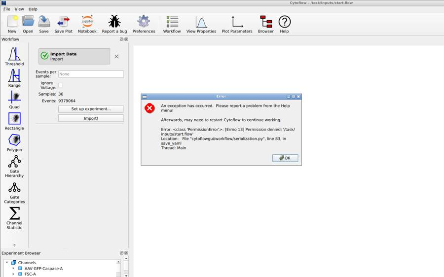
cu click 924 513; sleep 1; cu click 21 29; sleep 1; cu screenshot /tmp/screen.png
{
"file_path": "/tmp/screen.png"
}/tmp/screen.png

cu click 66 101; sleep 2; cu screenshot /tmp/screen.png
{
"file_path": "/tmp/screen.png"
}/tmp/screen.png
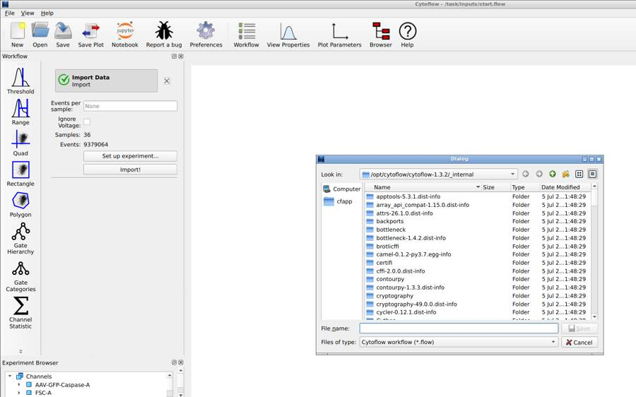
cu click 1038 744; cu paste "/task/outputs/workflow.flow"; cu key Return; sleep 3; ls -la /task/outputs; cu screenshot /tmp/screen.png
{
"file_path": "/tmp/screen.png"
}total 32 drwxrwsrwx 3 agent task 4096 Nov 5 00:09 . drwxr-xr-x 5 root root 4096 Nov 5 00:08 .. drwxr-sr-x 2 root task 4096 Nov 5 00:08 work -rw-rw-r-- 1 cfapp task 19815 Nov 5 00:09 workflow.flow /tmp/screen.png

cu click 652 75; sleep 2; cu screenshot /tmp/screen.png
{
"file_path": "/tmp/screen.png"
}/tmp/screen.png

cu click 62 29; sleep 1; cu screenshot /tmp/screen.png
{
"file_path": "/tmp/screen.png"
}/tmp/screen.png
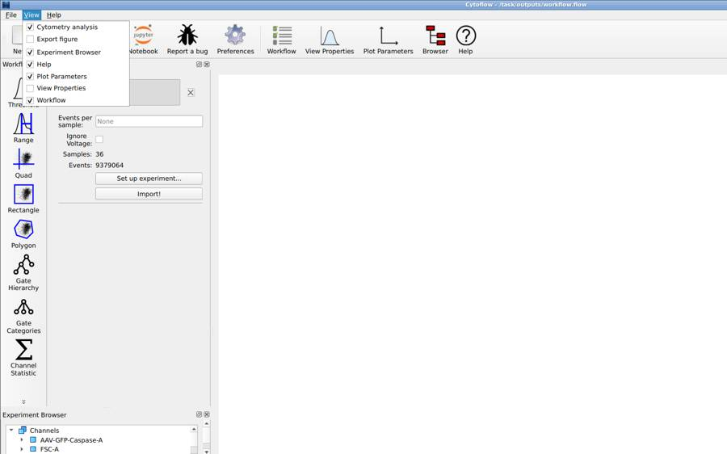
cu key Escape; which xdotool wmctrl xrandr xwininfo 2>&1; cat /usr/local/bin/cu | head -50
/usr/bin/xdotool
/usr/bin/xwininfo
#!/bin/bash
# Computer-use helper: the agent's only way to act on the screen.
# cu screenshot [path] -> PNG of the screen (default /tmp/screen.png); prints path
# cu click X Y [left|right|double]
# cu move X Y | cu drag X1 Y1 X2 Y2 | cu scroll X Y up|down [N]
# cu type "text" (keystrokes) | cu paste "text" (clipboard) | cu key KEYS (e.g. ctrl+s, Return)
# cu cursor -> current mouse position
export DISPLAY=${DISPLAY:-:1}
cmd=$1; shift
case "$cmd" in
screenshot) out=${1:-/tmp/screen.png}; scrot -o "$out" && echo "$out" ;;
click) xdotool mousemove "$1" "$2"; case "${3:-left}" in
left) xdotool click 1;; right) xdotool click 3;; double) xdotool click --repeat 2 1;; esac ;;
move) xdotool mousemove "$1" "$2" ;;
drag) xdotool mousemove "$1" "$2" mousedown 1 mousemove --sync "$3" "$4" mouseup 1 ;;
scroll) xdotool mousemove "$1" "$2"; b=$([ "$3" = up ] && echo 4 || echo 5); xdotool click --repeat "${4:-3}" $b ;;
type) xdotool type --delay 50 -- "$1" ;;
# paste: put text on the clipboard (detached owner process so it survives this command) then ctrl+v
# paste: own the clipboard (no -loops: Qt asks for TARGETS first, then the text), press ctrl+v,
# give Qt a moment to fetch it, then release. Robust both locally and on Modal.
paste) printf '%s' "$1" | xclip -quiet -selection clipboard -i >/dev/null 2>&1 & cp=$!
sleep 0.3; xdotool key ctrl+v; sleep 1; kill $cp 2>/dev/null; true ;;
key) xdotool key -- "$1" ;;
cursor) xdotool getmouselocation ;;
*) sed -n '2,9p' "$0"; exit 1 ;;
esacexport DISPLAY=:1; xdotool search --name "Cytoflow" 2>/dev/null | while read w; do echo $w; xdotool getwindowname $w; xdotool getwindowgeometry $w; done; xwininfo -root | grep -E 'Width|Height'
14680068 Qt Selection Owner for cytoflow Window 14680068 Position: 0,0 (screen: 0) Geometry: 3x3 14680072 cytoflow Window 14680072 Position: 0,0 (screen: 0) Geometry: 1x1 14680070 Cytoflow - /task/outputs/workflow.flow Window 14680070 Position: 2,40 (screen: 0) Geometry: 2082x1171 Width: 1440 Height: 900
export DISPLAY=:1; xdotool windowsize 14680070 1436 860; xdotool windowmove 14680070 0 0; sleep 2; xdotool getwindowgeometry 14680070; cu click 62 29; sleep 0.5; cu click 120 174; sleep 2; cu screenshot /tmp/screen.png
{
"file_path": "/tmp/screen.png"
}Window 14680070 Position: 1,20 (screen: 0) Geometry: 1436x860 /tmp/screen.png
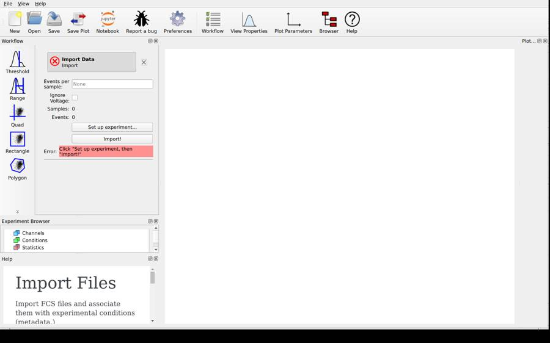
cu click 21 9; sleep 1; cu click 58 33; sleep 2; cu screenshot /tmp/screen.png
{
"file_path": "/tmp/screen.png"
}/tmp/screen.png
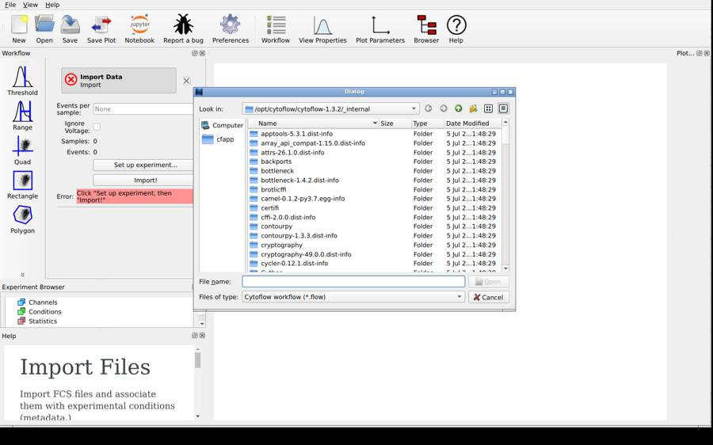
cu click 713 569; cu paste "/task/outputs/workflow.flow"; cu key Return; sleep 3; cu screenshot /tmp/screen.png
{
"file_path": "/tmp/screen.png"
}/tmp/screen.png
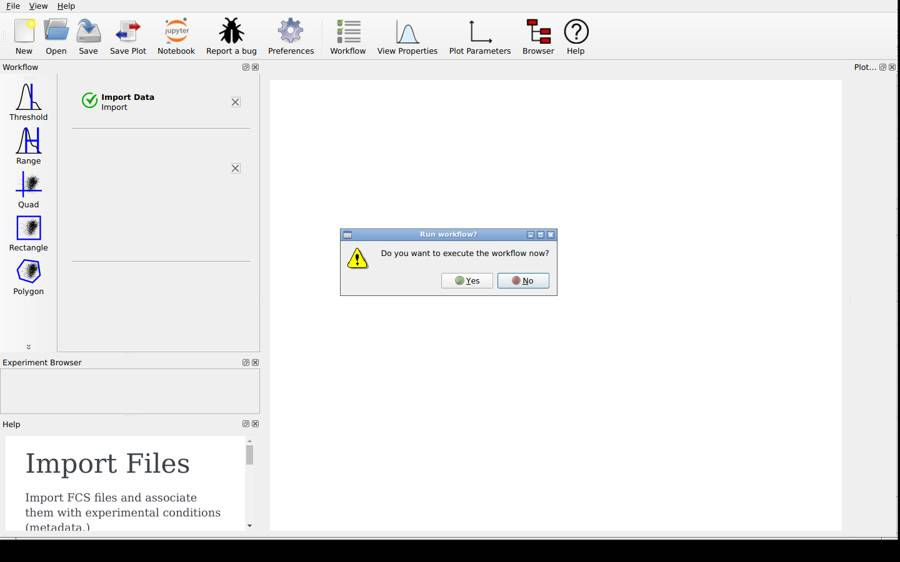
cu click 747 449; sleep 40; cu screenshot /tmp/screen.png
{
"file_path": "/tmp/screen.png"
}/tmp/screen.png
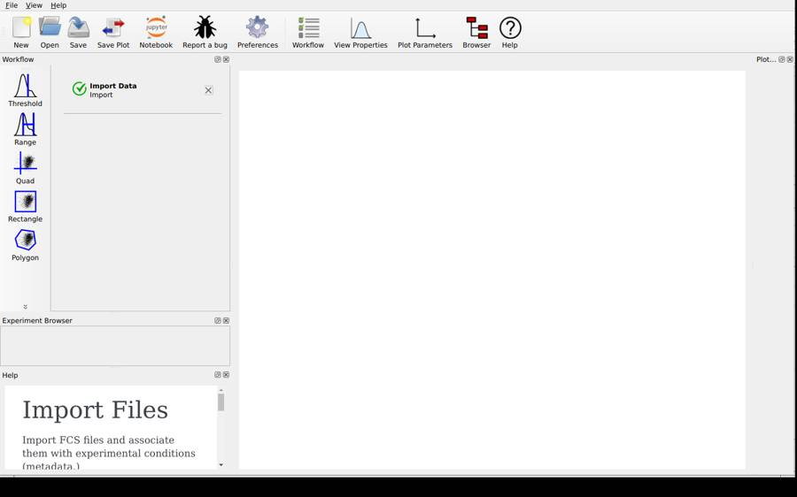
cu click 408 678; sleep 1; cu click 651 55; sleep 2; cu click 230 163; sleep 2; cu screenshot /tmp/screen.png
{
"file_path": "/tmp/screen.png"
}/tmp/screen.png
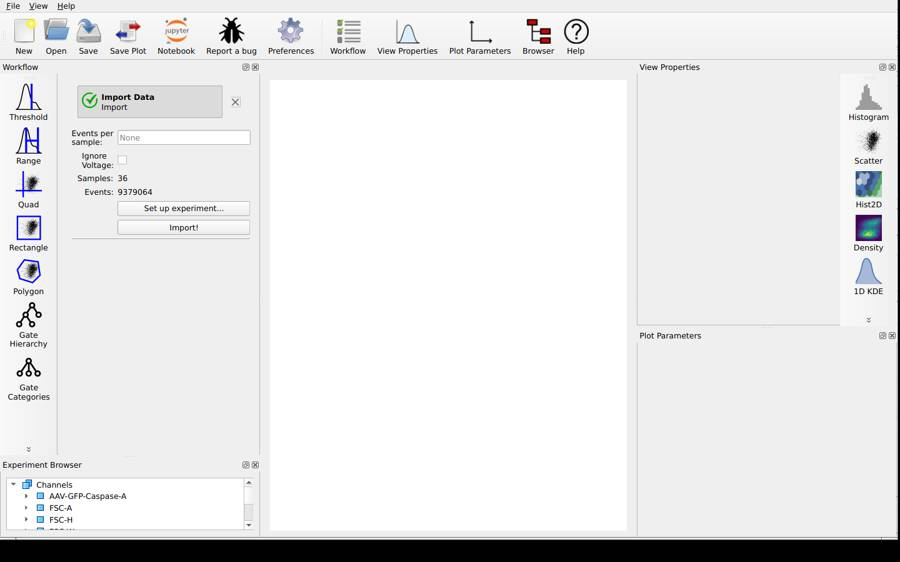
cu click 1389 160; sleep 2; cu screenshot /tmp/screen.png
{
"file_path": "/tmp/screen.png"
}/tmp/screen.png
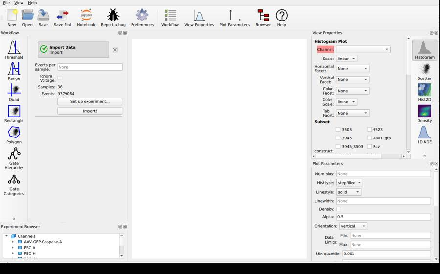
cu click 1188 162; sleep 1; cu screenshot /tmp/screen.png
{
"file_path": "/tmp/screen.png"
}/tmp/screen.png
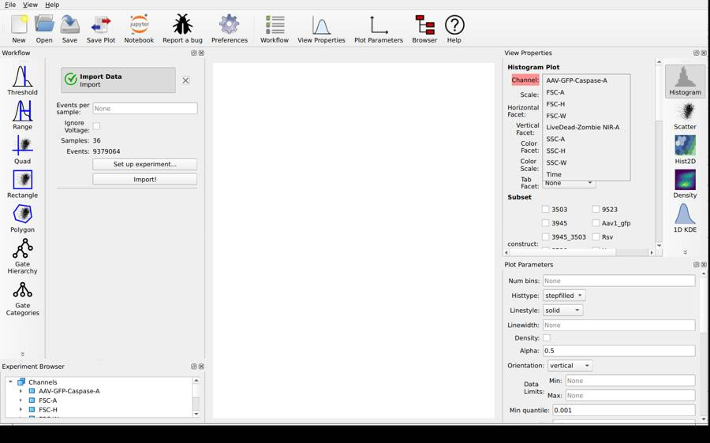
cu click 1123 354; sleep 1; cu click 1155 225; sleep 1; cu screenshot /tmp/screen.png
{
"file_path": "/tmp/screen.png"
}/tmp/screen.png
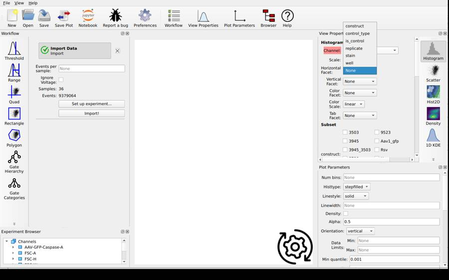
cu click 1120 202; sleep 15; cu scroll 1220 750 down 10; sleep 1; cu screenshot /tmp/screen.png
{
"file_path": "/tmp/screen.png"
}/tmp/screen.png
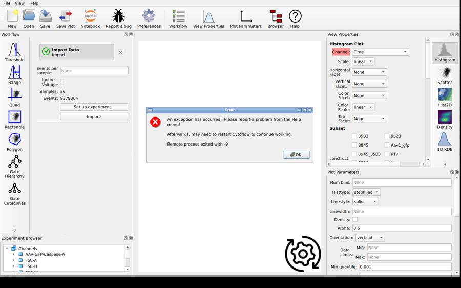
free -m; cat /sys/fs/cgroup/memory.max 2>/dev/null; cat /sys/fs/cgroup/memory.current 2>/dev/null; ps aux --sort=-rss | head -8
total used free shared buff/cache available Mem: 7949 950 6982 15 252 6998 Swap: 0 0 0 USER PID %CPU %MEM VSZ RSS TTY STAT START TIME COMMAND cfapp 848 2.2 5.1 3597948 420056 ? Sl 00:07 0:06 /opt/cytoflow/cytoflow-1.3.2/cytoflow root 1022 2.3 2.3 5684476 190120 ? Sl 00:07 0:06 claude --verbose --output-format=stream-json --effort xhigh --model claude-opus-5-5 --permission-mode=bypassPermissions --print root 820 0.0 0.4 234088 38984 ? S 00:07 0:00 Xvfb :1 -screen 0 1440x900x24 -nolisten tcp root 834 0.1 0.2 58956 23112 ? S 00:07 0:00 /usr/bin/python3 /usr/bin/websockify --web=/usr/share/novnc 6080 localhost:5900 cfapp 863 0.0 0.2 84344 22088 ? S 00:07 0:00 /opt/cytoflow/cytoflow-1.3.2/cytoflow -B -S -I -c from multiprocessing.resource_tracker import main;main(9) cfapp 934 0.0 0.1 5239172 16136 ? Sl 00:07 0:00 /opt/cytoflow/cytoflow-1.3.2/_internal/PyQt5/Qt5/libexec/QtWebEngineProcess --type=zygote --application-name=cytoflow --webengine-schemes=qrc:sLV --lang=en agent 841 0.0 0.1 143096 11204 ? Sl 00:07 0:00 openbox
whoami; cat /proc/848/cgroup; cat /proc/848/environ | tr '\0' '\n' | head -30; ulimit -a | head -20; dmesg 2>/dev/null | tail -5; cat /proc/848/limits | grep -i -E 'address|data|resident'
root 0::/ MODAL_IMAGE_ID=im-H6GQEPVLHWnxvLDmVREK5O QT_XKB_CONFIG_ROOT=/usr/share/X11/xkb NODE_OPTIONS=--dns-result-order=ipv4first PYTHONHASHSEED=0 OFFLINE=0 MODAL_SANDBOX_ID=sb-01M6MGGCY21E7RYEA2AQ3AD395 SCREEN_GEOMETRY=1440x900x24 MODAL_CLOUD_PROVIDER=CLOUD_PROVIDER_AWS PWD=/task SOURCE_DATE_EPOCH=1641013200 LOGNAME=cfapp ORT_INTER_OP_NUM_THREADS=4 OPENBLAS_NUM_THREADS=4 ORT_INTRA_OP_NUM_THREADS=4 HOME=/home/cfapp LANG=C.UTF-8 MODAL_REGION=us-east SSL_CERT_DIR=/etc/ssl/certs PIP_DEFAULT_TIMEOUT=30 UV_BREAK_SYSTEM_PACKAGES=1 PYTHONPATH=/pkg/:/root/ TERM=xterm XLOCALEDIR=/usr/share/X11/locale USER=cfapp DISPLAY=:1 SHLVL=2 PIP_ROOT_USER_ACTION=ignore MODAL_CONTAINER_ARGUMENTS_PATH=/__modal/.container-arguments/data.bin XDG_RUNTIME_DIR=/tmp/runtime-cfapp BLIS_NUM_THREADS=4 real-time non-blocking time (microseconds, -R) unlimited core file size (blocks, -c) 0 data seg size (kbytes, -d) unlimited scheduling priority (-e) 0 file size (blocks, -f) unlimited pending signals (-i) 31775 max locked memory (kbytes, -l) 8192 max memory size (kbytes, -m) unlimited open files (-n) 4096 pipe size (512 bytes, -p) 8 POSIX message queues (bytes, -q) 819200 real-time priority (-r) 0 stack size (kbytes, -s) 8192 cpu time (seconds, -t) unlimited max user processes (-u) 31775 virtual memory (kbytes, -v) unlimited file locks (-x) unlimited [ 275.226718] [ 1020] 0 1020 1193 87 85 2 0 57344 0 0 su [ 275.226794] [ 1021] 0 1021 1191 69 67 2 0 49152 0 0 bash [ 275.226887] [ 1022] 0 1022 1421119 41609 41607 2 0 1069056 0 0 claude [ 275.226968] oom-kill:constraint=CONSTRAINT_NONE,nodemask=(null),cpuset=/,mems_allowed=0,global_oom,task_memcg=/,task=cytoflow,pid=865,uid=1002 [ 275.227092] Out of memory: Killed process 865 (cytoflow) total-vm:8432016kB, anon-rss:7281936kB, file-rss:12kB, shmem-rss:28kB, UID:1002 pgtables:14856kB oom_score_adj:0 Max data size unlimited unlimited bytes Max resident set unlimited unlimited bytes Max address space unlimited unlimited bytes
ps -o pid,ppid,user,cmd -p 848; P=$(ps -o ppid= -p 848); ps -o pid,ppid,user,cmd -p $P; ls /opt/cytoflow/; cat /proc/848/environ | tr '\0' '\n' | sed -n '30,80p'
PID PPID USER CMD 848 842 cfapp /opt/cytoflow/cytoflow-1.3.2/cytoflow PID PPID USER CMD 842 840 cfapp /bin/bash /usr/local/bin/start-cytoflow cytoflow-1.3.2 BLIS_NUM_THREADS=4 OMP_NUM_THREADS=4 LC_ALL=C.UTF-8 PATH=/usr/local/sbin:/usr/local/bin:/usr/sbin:/usr/bin:/sbin:/bin CFLAGS=-g0 MODAL_TASK_ID=ta-01M6MGGCY2HRHV0J8YPJGKP1MV PIP_NO_CACHE_DIR=off MKL_NUM_THREADS=4 DEBIAN_FRONTEND=noninteractive OLDPWD=/task _=/opt/cytoflow/cytoflow-1.3.2/cytoflow _PYI_ARCHIVE_FILE=/opt/cytoflow/cytoflow-1.3.2/cytoflow _PYI_PARENT_PROCESS_LEVEL=-1 _PYI_LINUX_PROCESS_NAME=cytoflow LD_LIBRARY_PATH=/opt/cytoflow/cytoflow-1.3.2/_internal
cat /usr/local/bin/start-cytoflow; ps -o pid,ppid,user,cmd -p 840
#!/bin/bash
# Launch Cytoflow full-screen-ish; restart it if the agent closes it.
BIN=$(find /opt/cytoflow -maxdepth 3 -type f -name 'cytoflow' -perm -u+x | head -1)
[ -z "$BIN" ] && { echo "cytoflow binary not found under /opt/cytoflow"; exit 1; }
while true; do
"$BIN" >/tmp/cytoflow.log 2>&1
sleep 1
done
PID PPID USER CMD
840 839 root runuser -u cfapp -- env DISPLAY=:1 HOME=/home/cfapp XDG_RUNTIME_DIR=/tmp/runtime-cfapp LANG=C.UTF-8 LC_ALL=C.UTF-8 bash -c umask 002; cd /task; exec start-cytoflowkill 848; sleep 8; ps aux | grep -v grep | grep cytoflow | head; export DISPLAY=:1; xdotool search --name "Cytoflow" 2>/dev/null | while read w; do echo $w $(xdotool getwindowname $w); done
root 840 0.0 0.0 4748 328 ? S 00:07 0:00 runuser -u cfapp -- env DISPLAY=:1 HOME=/home/cfapp XDG_RUNTIME_DIR=/tmp/runtime-cfapp LANG=C.UTF-8 LC_ALL=C.UTF-8 bash -c umask 002; cd /task; exec start-cytoflow cfapp 842 0.0 0.0 4764 2164 ? S 00:07 0:00 /bin/bash /usr/local/bin/start-cytoflow cfapp 863 0.0 0.0 0 0 ? Z 00:07 0:00 [cytoflow] <defunct> cfapp 1398 54.8 5.0 2130088 413800 ? Rl 00:13 0:03 /opt/cytoflow/cytoflow-1.3.2/cytoflow cfapp 1409 4.6 0.4 84344 39428 ? S 00:13 0:00 /opt/cytoflow/cytoflow-1.3.2/cytoflow -B -S -I -c from multiprocessing.resource_tracker import main;main(9) cfapp 1411 74.5 3.6 1290732 293188 ? Sl 00:13 0:02 /opt/cytoflow/cytoflow-1.3.2/cytoflow --multiprocessing-fork tracker_fd=10 pipe_handle=14 14680068 Qt Selection Owner for cytoflow 14680072 cytoflow
sleep 10; export DISPLAY=:1; for w in $(xdotool search --name "Cytoflow" 2>/dev/null); do echo $w "$(xdotool getwindowname $w)"; done; cu screenshot /tmp/screen.png
{
"file_path": "/tmp/screen.png"
}14680068 Qt Selection Owner for cytoflow 14680072 cytoflow 14680070 Cytometry analysis - Cytoflow 14680075 Welcome to Cytoflow! /tmp/screen.png

cu click 915 493; sleep 1; export DISPLAY=:1; xdotool windowsize 14680070 1440 878; xdotool windowmove 14680070 0 0; sleep 2; cu screenshot /tmp/screen.png
{
"file_path": "/tmp/screen.png"
}/tmp/screen.png

cu click 408 692; sleep 1; cu click 21 9; sleep 1; cu click 58 33; sleep 2; cu screenshot /tmp/screen.png
{
"file_path": "/tmp/screen.png"
}/tmp/screen.png
cu click 715 577; cu paste "/task/outputs/workflow.flow"; cu key Return; sleep 3; cu screenshot /tmp/screen.png
{
"file_path": "/tmp/screen.png"
}/tmp/screen.png
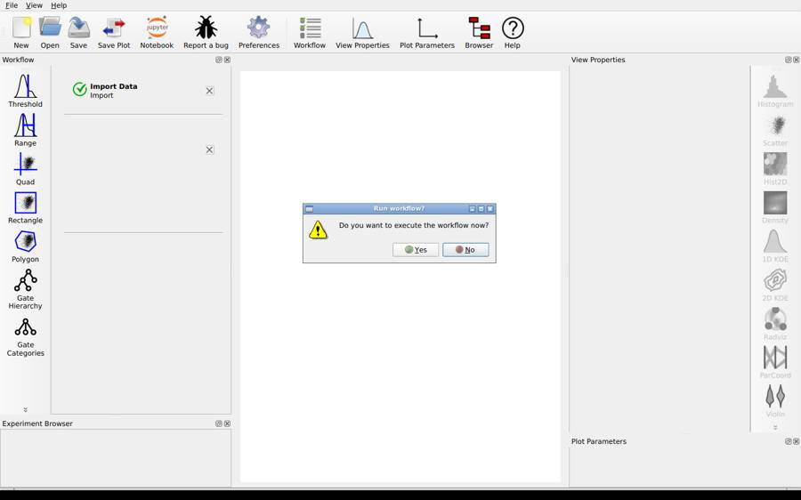
cu click 747 449; sleep 45; ps -o pid,rss,cmd -u cfapp | grep -v grep | grep cytoflow; free -m | head -2
842 2164 /bin/bash /usr/local/bin/start-cytoflow
863 0 [cytoflow] <defunct>
1398 528152 /opt/cytoflow/cytoflow-1.3.2/cytoflow
1409 39428 /opt/cytoflow/cytoflow-1.3.2/cytoflow -B -S -I -c from multiprocessing.resource_tracker import main;main(9)
1411 2243084 /opt/cytoflow/cytoflow-1.3.2/cytoflow --multiprocessing-fork tracker_fd=10 pipe_handle=14
1451 47528 /opt/cytoflow/cytoflow-1.3.2/_internal/PyQt5/Qt5/libexec/QtWebEngineProcess --type=zygote --no-zygote-sandbox --application-name=cytoflow --webengine-schemes=qrc:sLV --lang=en
1472 47728 /opt/cytoflow/cytoflow-1.3.2/_internal/PyQt5/Qt5/libexec/QtWebEngineProcess --type=zygote --application-name=cytoflow --webengine-schemes=qrc:sLV --lang=en
1474 10872 /opt/cytoflow/cytoflow-1.3.2/_internal/PyQt5/Qt5/libexec/QtWebEngineProcess --type=zygote --application-name=cytoflow --webengine-schemes=qrc:sLV --lang=en
1489 71892 /opt/cytoflow/cytoflow-1.3.2/_internal/PyQt5/Qt5/libexec/QtWebEngineProcess --type=zygote --application-name=cytoflow --webengine-schemes=qrc:sLV --lang=en
total used free shared buff/cache available
Mem: 7949 3042 4053 15 1092 4907cat > /task/scripts/mem.sh <<'EOF'
#!/bin/bash
ps -o rss=,args= -u cfapp | grep -E 'multiprocessing-fork|cytoflow$' | awk '{printf "%s %.0fMB\n",$2" "$3,$1/1024}'; free -m | awk 'NR==2{print "avail",$7"MB"}'
EOF
chmod +x /task/scripts/mem.sh; /task/scripts/mem.sh/bin/bash /usr/local/bin/start-cytoflow 2MB /opt/cytoflow/cytoflow-1.3.2/cytoflow 516MB /opt/cytoflow/cytoflow-1.3.2/cytoflow --multiprocessing-fork 2191MB avail 4909MB
{
"file_path": "/root/.claude/projects/-task/memory/cytoflow-gui-environment-quirks.md",
"content": "---\nname: cytoflow-gui-environment-quirks\ndescription: Cytoflow 1.3.2 on the 1440x900 Xvfb screen \u2014 window opens off-screen wide, Save hits read-only start.flow, full-data faceted plots OOM-kill the worker\nmetadata:\n type: reference\n---\n\n- Cytoflow main window opens ~2082 px wide, so right docks (View Properties, Plot Parameters) are off-screen. Fix: `DISPLAY=:1 xdotool search --name Cytoflow` \u2192 `xdotool windowsize <id> 1440 878; xdotool windowmove <id> 0 0`. Afterwards the menu bar sits at y\u22489 (File at 21,9).\n- After opening /task/inputs/start.flow, plain Save fails (read-only); use File \u2192 Save As \u2192 /task/outputs/workflow.flow.\n- Machine has ~8 GB RAM, no swap. Import of ~9.4M events makes the worker process ~2.2 GB. A Histogram faceted by `well` over all 36 wells got the worker OOM-killed (\"Remote process exited with -9\"). After that the GUI has to be restarted.\n- To restart: `kill <pid of /opt/cytoflow/cytoflow-1.3.2/cytoflow>`. The `start-cytoflow` wrapper relaunches it automatically. Then resize the window again, File \u2192 Open the saved .flow, answer Yes, and wait about 45 s.\n- Clicking toolbar coordinates after moving the window can hit \"New\" by accident and wipe the workflow. Take a screenshot after the move before clicking.\n"
}File created successfully at: /root/.claude/projects/-task/memory/cytoflow-gui-environment-quirks.md
echo "- [Cytoflow GUI quirks](cytoflow-gui-environment-quirks.md) — off-screen window fix, Save As, OOM on faceted full-data plots, restart procedure" > /root/.claude/projects/-task/memory/MEMORY.md; cu click 230 163; sleep 2; cu screenshot /tmp/screen.png
{
"file_path": "/tmp/screen.png"
}/tmp/screen.png
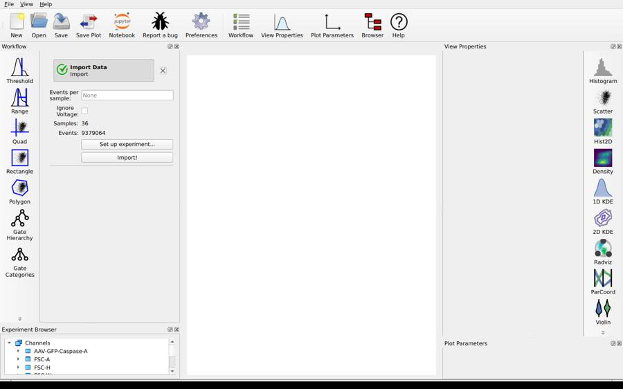
cu click 1393 160; sleep 2; cu screenshot /tmp/screen.png
{
"file_path": "/tmp/screen.png"
}/tmp/screen.png
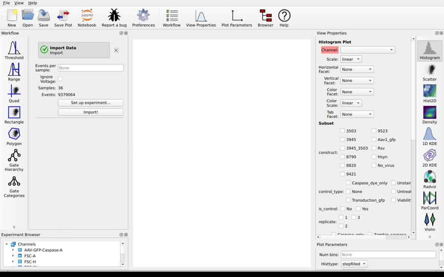
cu click 1158 371; sleep 1; cu screenshot /tmp/screen.png
{
"file_path": "/tmp/screen.png"
}/tmp/screen.png
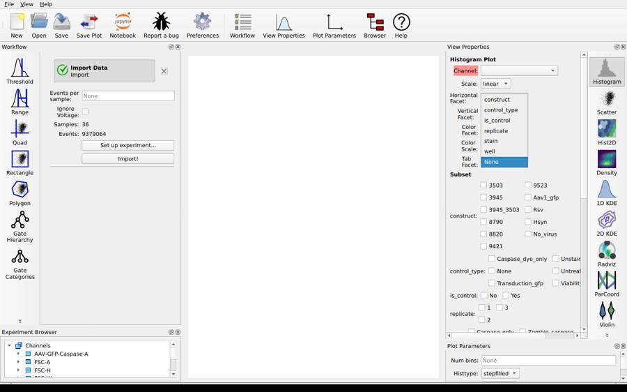
cu click 1125 347; sleep 1; cu click 1192 162; sleep 1; cu screenshot /tmp/screen.png
{
"file_path": "/tmp/screen.png"
}/tmp/screen.png
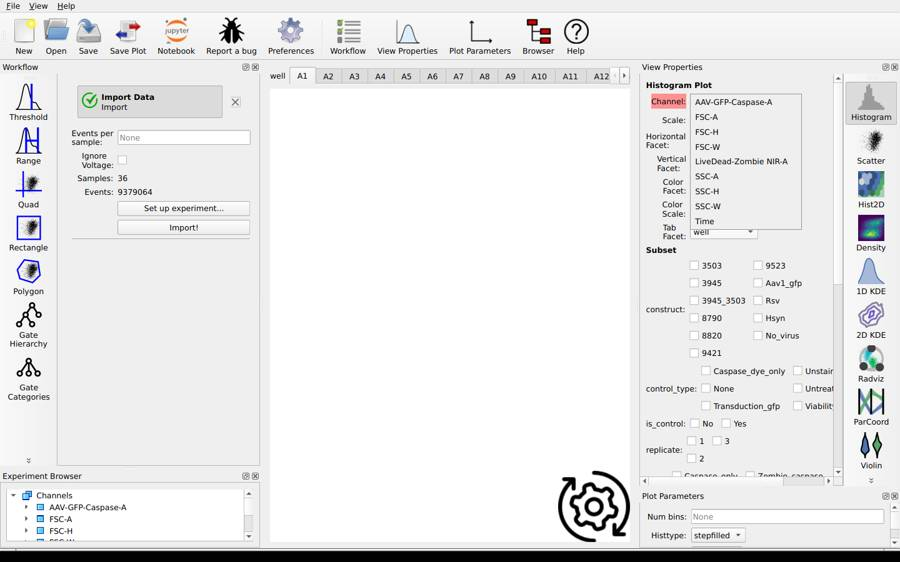
cu click 1127 354; sleep 1; cu click 1258 827; cu type "100"; cu key Return; sleep 8; /task/scripts/mem.sh; cu screenshot /tmp/screen.png
{
"file_path": "/tmp/screen.png"
}/bin/bash /usr/local/bin/start-cytoflow 2MB /opt/cytoflow/cytoflow-1.3.2/cytoflow 527MB /opt/cytoflow/cytoflow-1.3.2/cytoflow --multiprocessing-fork 2194MB avail 4744MB /tmp/screen.png
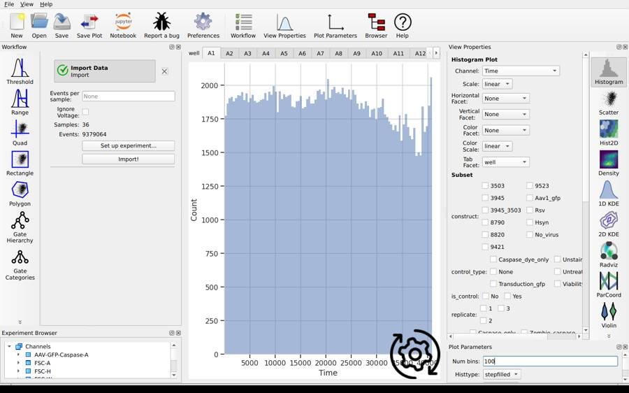
cu click 483 121; sleep 3; cu key Right; sleep 6; cu screenshot /tmp/screen.png
{
"file_path": "/tmp/screen.png"
}/tmp/screen.png
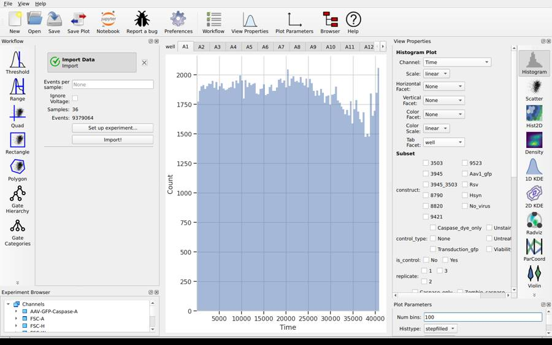
cu scroll 700 121 down 1; sleep 6; cu screenshot /tmp/screen.png
{
"file_path": "/tmp/screen.png"
}/tmp/screen.png
cat > /task/scripts/waitplot.py <<'EOF'
import subprocess, time, sys
import numpy as np
import matplotlib.image as mpimg
# wait until spinner region stable & spinner absent; save final screenshot to argv[1]
out = sys.argv[1] if len(sys.argv)>1 else '/tmp/screen.png'
timeout = float(sys.argv[2]) if len(sys.argv)>2 else 90
prev=None; stable=0; t0=time.time()
while time.time()-t0 < timeout:
subprocess.run(['cu','screenshot',out],capture_output=True)
im=mpimg.imread(out)
spin=im[750:870, 890:1010, :3]
# spinner is a large dark gear; detect fraction of very dark pixels in the region
dark=(spin.mean(axis=2)<0.25).mean()
crop=im[130:870,430:1010,:3]
if prev is not None and np.array_equal(crop,prev) and dark<0.08:
stable+=1
if stable>=1: break
else: stable=0
prev=crop
time.sleep(1.0)
print(f"{time.time()-t0:.1f}s dark={dark:.3f}")
EOF
python3 -I /task/scripts/waitplot.py /tmp/screen.png{
"file_path": "/tmp/screen.png"
}1.2s dark=0.016
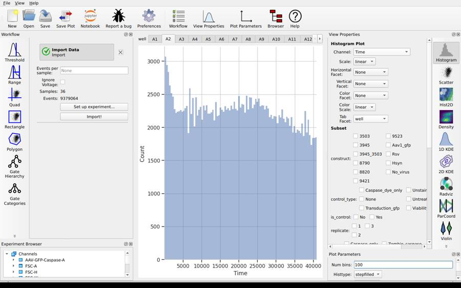
mkdir -p /tmp/qc; cat > /task/scripts/tabloop.sh <<'EOF'
#!/bin/bash
# usage: tabloop.sh prefix n (starts from current tab, scrolls n-1 times)
p=$1; n=$2
for i in $(seq 0 $((n-1))); do
if [ $i -gt 0 ]; then cu scroll 700 121 down 1; sleep 1.5; fi
python3 -I /task/scripts/waitplot.py /tmp/qc/${p}_$(printf %02d $i).png 90 >/dev/null
done
EOF
chmod +x /task/scripts/tabloop.sh; cu scroll 700 121 up 1; sleep 1; /task/scripts/tabloop.sh time 36; ls /tmp/qc | wc -l36
cat > /task/scripts/montage.py <<'EOF'
import sys, glob
import matplotlib; matplotlib.use('Agg')
import matplotlib.pyplot as plt, matplotlib.image as mpimg
# usage: montage.py prefix start end out [y0 y1 x0 x1] [ncols]
p, s, e, out = sys.argv[1], int(sys.argv[2]), int(sys.argv[3]), sys.argv[4]
y0,y1,x0,x1 = (map(int, sys.argv[5:9]) if len(sys.argv)>8 else (108,870,430,1010))
ncols = int(sys.argv[9]) if len(sys.argv)>9 else 4
files=[f'/tmp/qc/{p}_{i:02d}.png' for i in range(s,e)]
n=len(files); nrows=(n+ncols-1)//ncols
fig,axs=plt.subplots(nrows,ncols,figsize=(ncols*4.2,nrows*(4.2*(y1-y0)/(x1-x0))),squeeze=False)
for ax in axs.flat: ax.axis('off')
for ax,f in zip(axs.flat,files):
ax.imshow(mpimg.imread(f)[y0:y1,x0:x1]); ax.set_title(f.split('/')[-1],fontsize=8)
plt.tight_layout(pad=0.2); plt.savefig(out,dpi=110)
EOF
for k in 0 12 24; do python3 -I /task/scripts/montage.py time $k $((k+12)) /tmp/qc_time_$k.png; done; ls -la /tmp/qc_time_*{
"file_path": "/tmp/qc_time_0.png"
}-rw-r--r-- 1 root root 276258 Nov 5 00:22 /tmp/qc_time_0.png -rw-r--r-- 1 root root 296268 Nov 5 00:22 /tmp/qc_time_12.png -rw-r--r-- 1 root root 322311 Nov 5 00:22 /tmp/qc_time_24.png
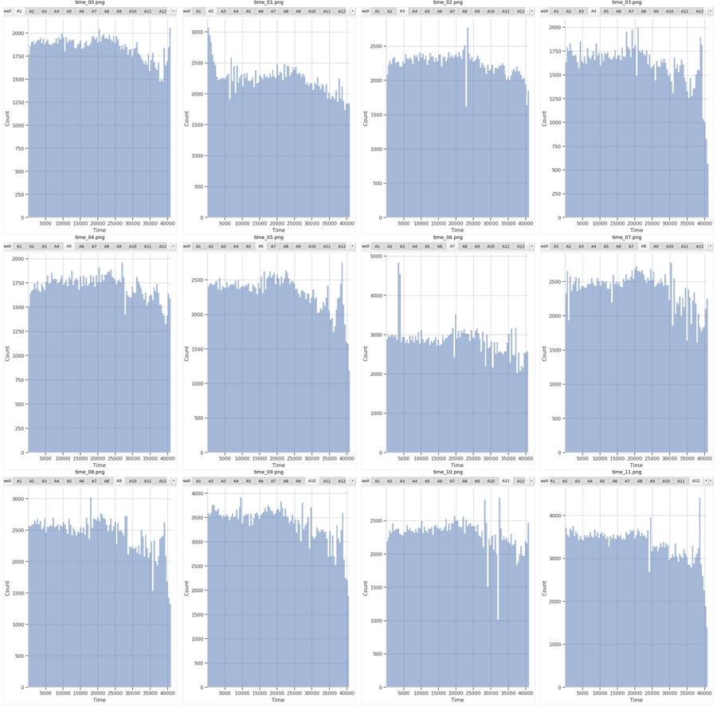
{
"file_path": "/tmp/qc_time_12.png"
}
{
"file_path": "/tmp/qc_time_24.png"
}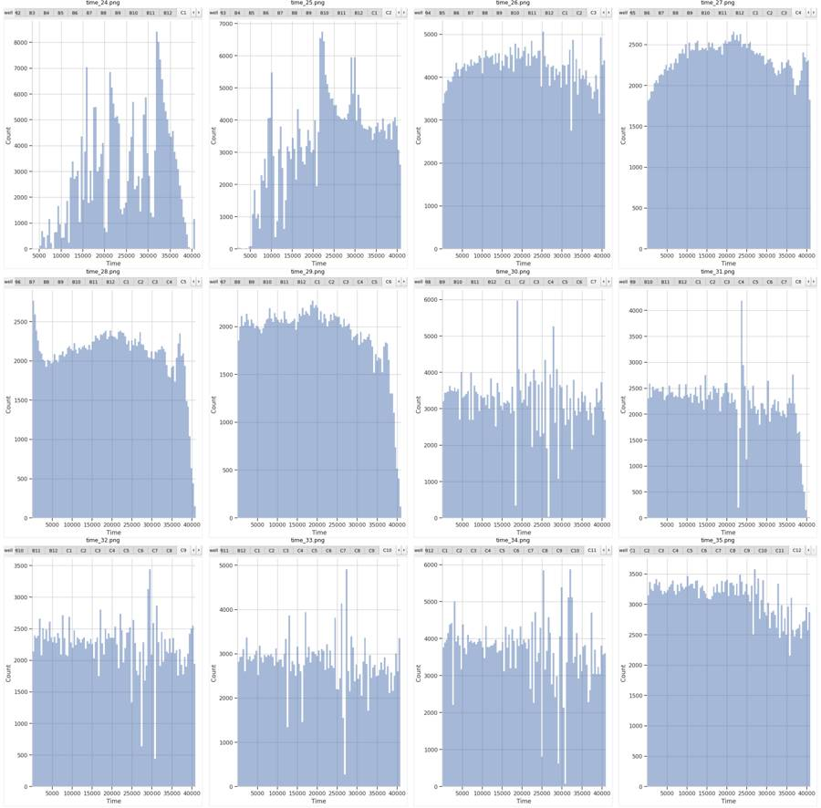
thinking
Time QC shows C1 and C2 with erratic flow, and several wells, C8 especially, taper off at the end. I'm checking FSC-A × SSC-A per well next.
cu click 1393 300; sleep 2; cu screenshot /tmp/screen.png
{
"file_path": "/tmp/screen.png"
}/tmp/screen.png
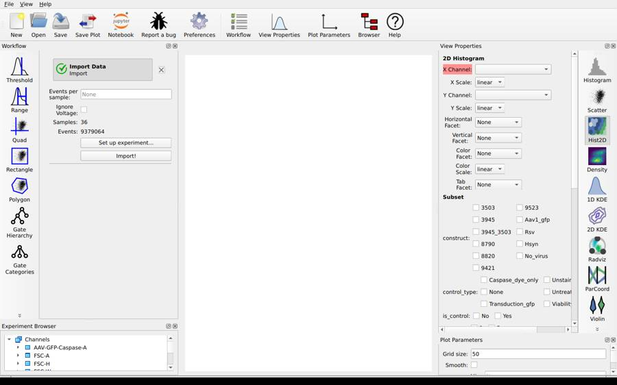
cu click 1162 431; sleep 1; cu screenshot /tmp/screen.png
{
"file_path": "/tmp/screen.png"
}/tmp/screen.png
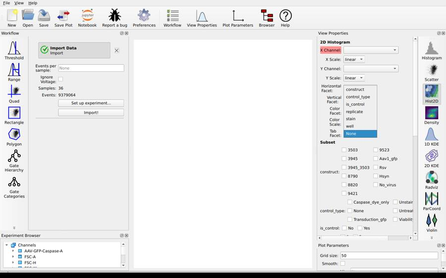
cu click 1130 408; sleep 1; cu click 1162 395; sleep 1; cu screenshot /tmp/screen.png
{
"file_path": "/tmp/screen.png"
}/tmp/screen.png
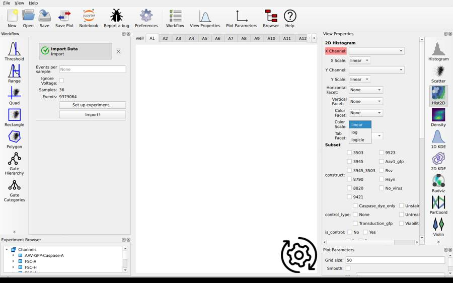
cu click 1127 420; sleep 1; cu click 1197 162; sleep 1; cu screenshot /tmp/screen.png
{
"file_path": "/tmp/screen.png"
}/tmp/screen.png
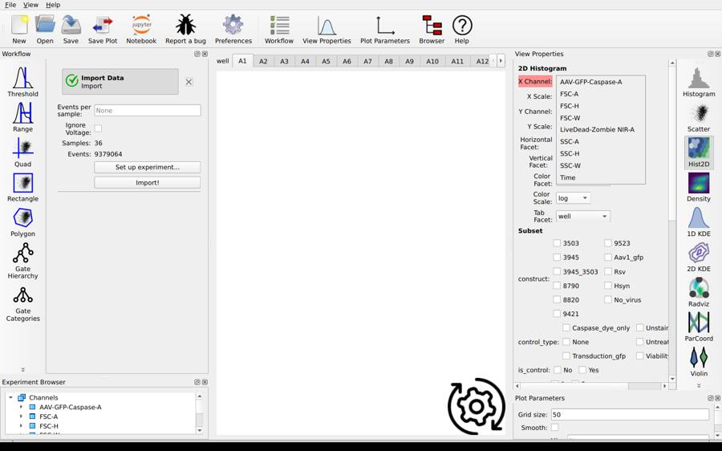
cu click 1135 187; sleep 1; cu click 1197 222; sleep 1; cu screenshot /tmp/screen.png
{
"file_path": "/tmp/screen.png"
}/tmp/screen.png
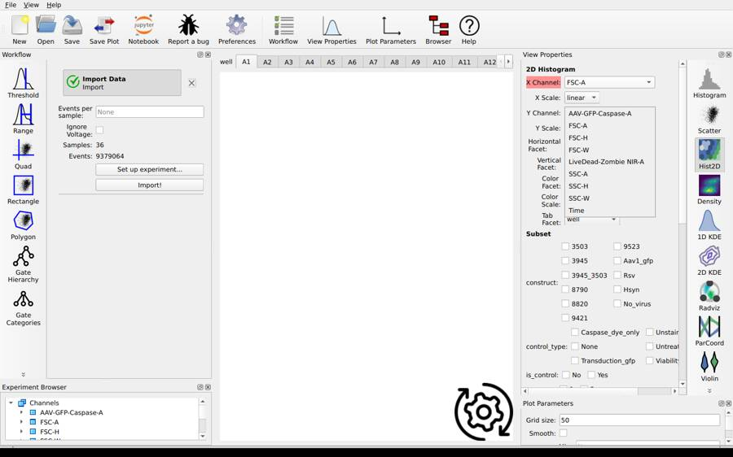
cu click 1135 342; sleep 1; cu click 1255 827; cu key ctrl+a; cu type "100"; cu key Return; sleep 1; python3 -I /task/scripts/waitplot.py /tmp/screen.png; /task/scripts/mem.sh
{
"file_path": "/tmp/screen.png"
}13.2s dark=0.009 /bin/bash /usr/local/bin/start-cytoflow 2MB /opt/cytoflow/cytoflow-1.3.2/cytoflow 531MB /opt/cytoflow/cytoflow-1.3.2/cytoflow --multiprocessing-fork 2229MB avail 4804MB
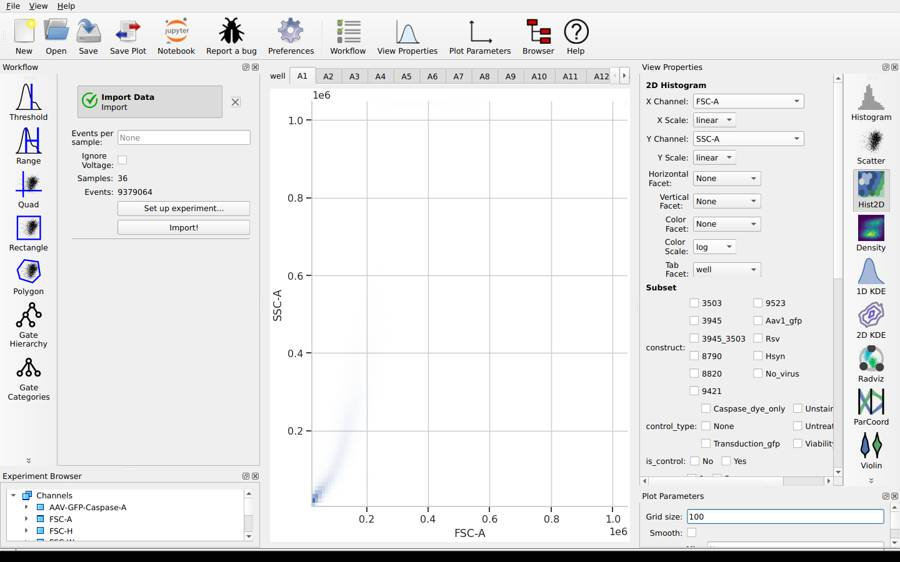
cu click 1141 192; sleep 1; cu screenshot /tmp/screen.png
{
"file_path": "/tmp/screen.png"
}/tmp/screen.png
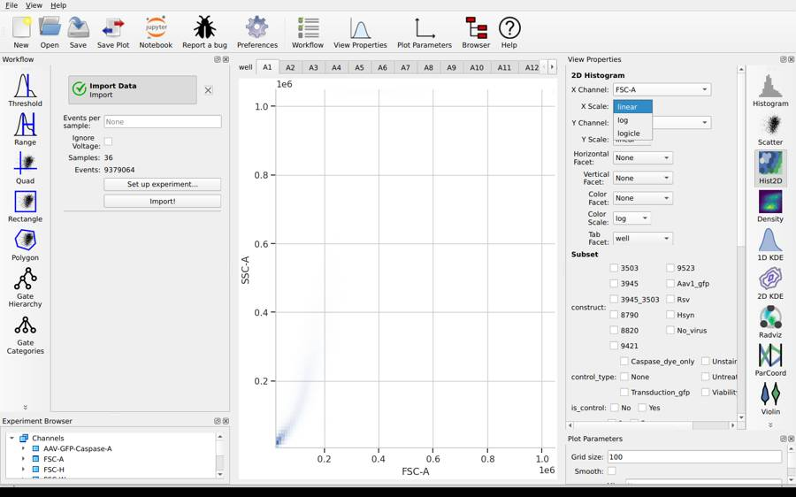
cu click 1127 217; sleep 1; cu click 1141 252; sleep 1; cu screenshot /tmp/screen.png
{
"file_path": "/tmp/screen.png"
}/tmp/screen.png
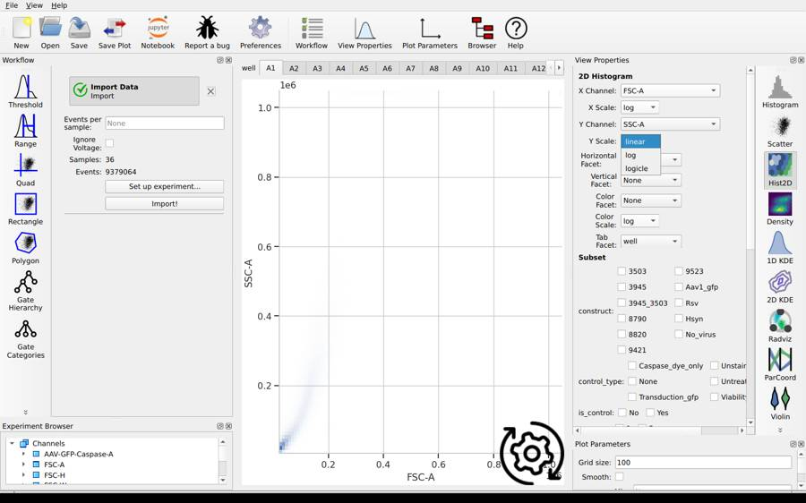
cu click 1127 277; sleep 1; python3 -I /task/scripts/waitplot.py /tmp/screen.png
{
"file_path": "/tmp/screen.png"
}7.8s dark=0.006
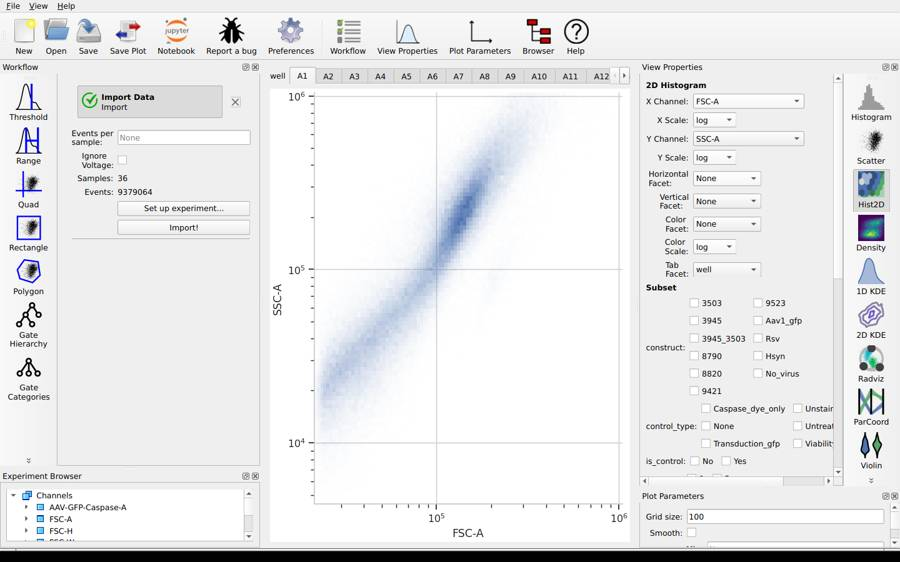
/task/scripts/tabloop.sh fsc 36; for k in 0 12 24; do python3 -I /task/scripts/montage.py fsc $k $((k+12)) /tmp/qc_fsc_$k.png 108 870 430 1010 6; done; echo done
done
{
"file_path": "/tmp/qc_fsc_0.png"
}
{
"file_path": "/tmp/qc_fsc_12.png"
}
{
"file_path": "/tmp/qc_fsc_24.png"
}
thinking
All wells show a consistent cell cluster with a debris tail, and C1 and C2 have events near FSC≈0 that fit their flow disruption. I'm checking the FSC-A distribution next to place the debris cut.
cu click 1393 160; sleep 2; cu screenshot /tmp/screen.png
{
"file_path": "/tmp/screen.png"
}/tmp/screen.png
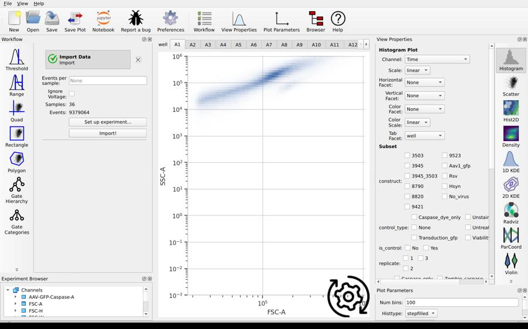
cu click 1192 162; sleep 1; cu click 1135 187; sleep 1; cu click 1137 192; sleep 1; cu screenshot /tmp/screen.png
{
"file_path": "/tmp/screen.png"
}/tmp/screen.png
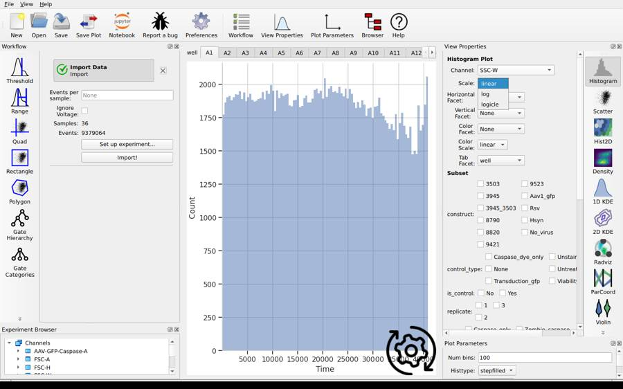
cu click 1122 217; sleep 1; cu click 1192 162; sleep 1; cu screenshot /tmp/screen.png
{
"file_path": "/tmp/screen.png"
}/tmp/screen.png
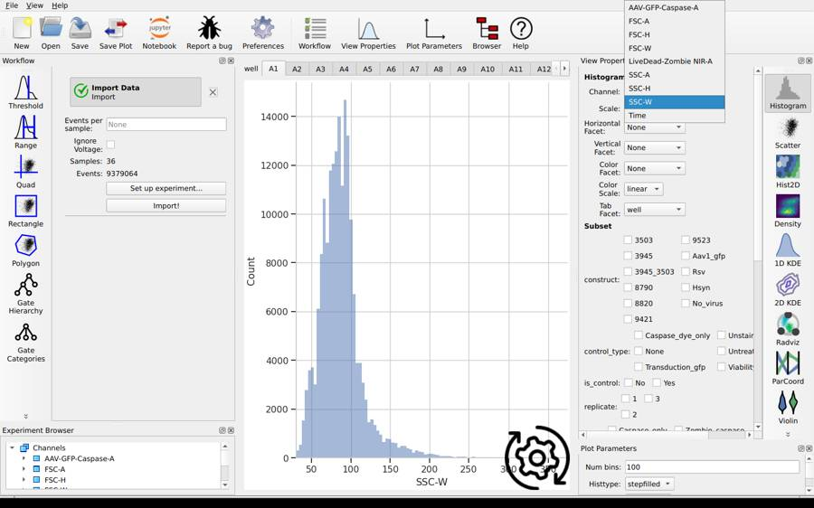
cu click 1130 37; sleep 1; python3 -I /task/scripts/waitplot.py /tmp/screen.png
{
"file_path": "/tmp/screen.png"
}7.8s dark=0.006
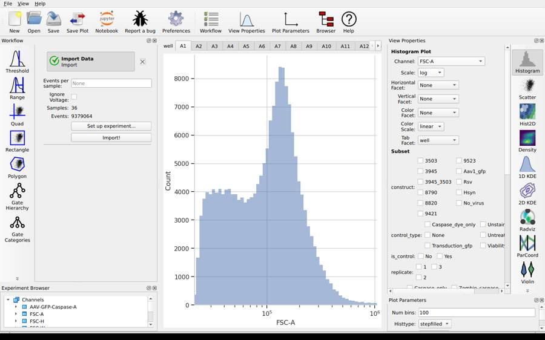
thinking
The FSC-A histogram shows debris from 2.5e4 to about 7e4, with a valley near 6–7e4 ahead of the cell peak near 1.4e5. I'm setting the Cells lower bound there and creating the Cells polygon gate next.
cu click 45 440; sleep 3; cu screenshot /tmp/screen.png
{
"file_path": "/tmp/screen.png"
}/tmp/screen.png
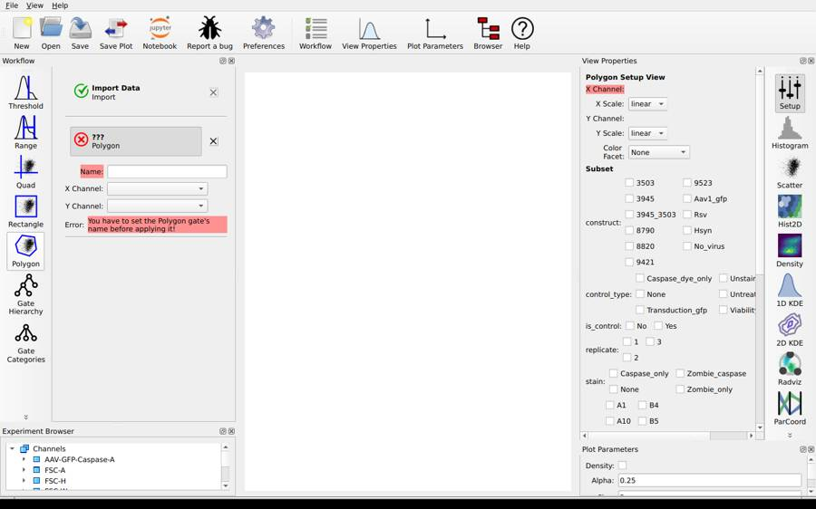
cu click 1210 435; sleep 0.5; cu click 1097 822; sleep 0.5; cu click 294 303; cu type "Cells"; cu key Tab; sleep 1; cu click 1141 183; sleep 1; cu screenshot /tmp/screen.png
{
"file_path": "/tmp/screen.png"
}/tmp/screen.png
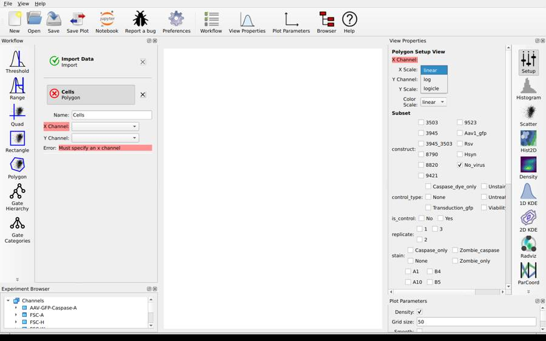
cu click 1127 209; sleep 1; cu click 1141 235; sleep 1; cu screenshot /tmp/screen.png
{
"file_path": "/tmp/screen.png"
}/tmp/screen.png
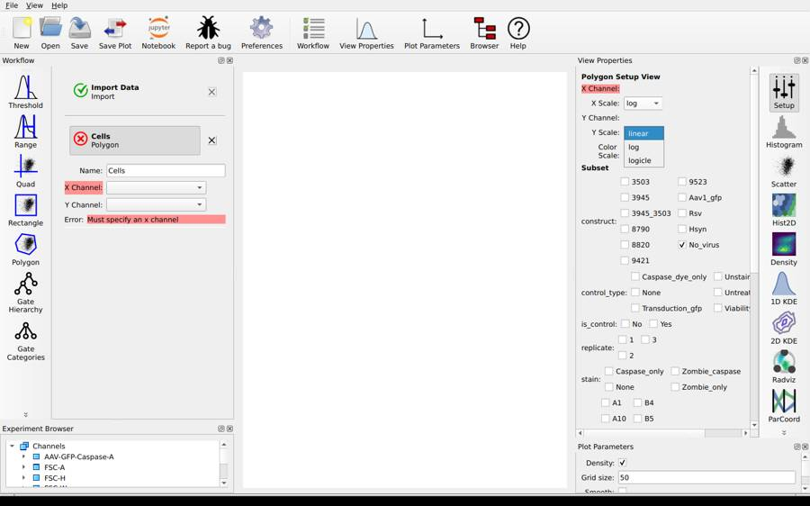
cu click 1127 261; sleep 1; cu click 278 333; sleep 1; cu screenshot /tmp/screen.png
{
"file_path": "/tmp/screen.png"
}/tmp/screen.png
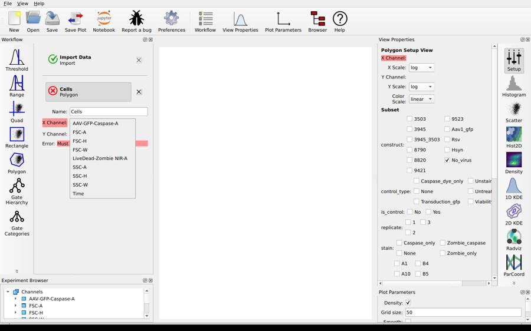
cu click 215 359; sleep 1; cu click 278 364; sleep 1; cu screenshot /tmp/screen.png
{
"file_path": "/tmp/screen.png"
}/tmp/screen.png
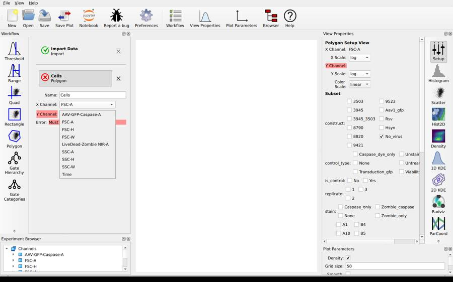
cu click 216 484; sleep 1; cu click 1255 849; cu key ctrl+a; cu type "100"; cu key Return; sleep 1; cu click 1141 269; sleep 1; cu screenshot /tmp/screen.png
{
"file_path": "/tmp/screen.png"
}/tmp/screen.png
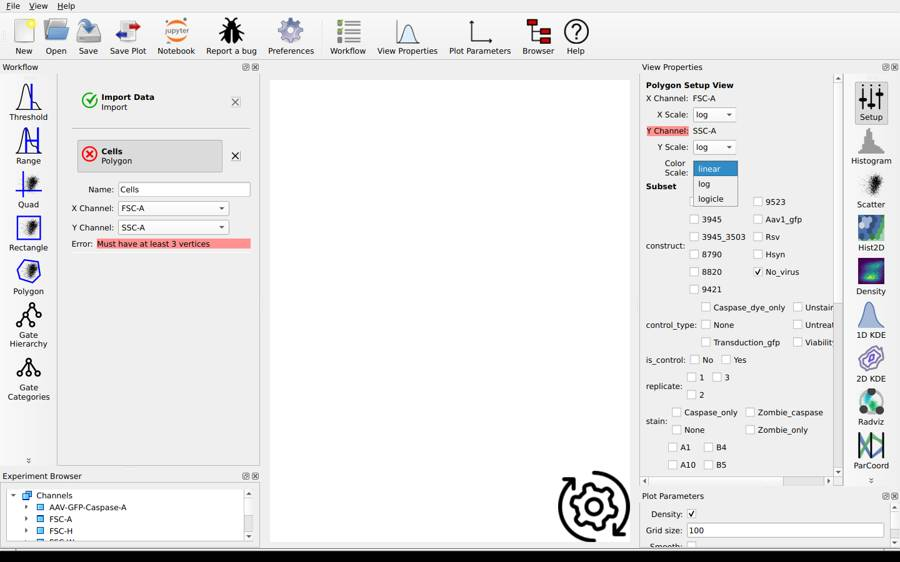
cu click 1127 294; sleep 1; python3 -I /task/scripts/waitplot.py /tmp/screen.png 120; /task/scripts/mem.sh
{
"file_path": "/tmp/screen.png"
}Command did not complete within its 120s timeout and was moved to the background (ID: bo3ps11lb). Output is being written to: /tmp/claude-0/-task/df2bf9a2-2757-4d5d-bad0-d612c911d38d/tasks/bo3ps11lb.output. You will be notified when it completes. If it is still running after 10m in the background, it will be stopped and you will be notified. It is running now: do not start a second copy while it runs. If it is no longer needed, stop it with TaskStop. No output had been read from it when it was moved. A program that buffers its output, or a pipe into one such as tail, can keep the output file empty until the command finishes. To check interim output, use Read on that file path.
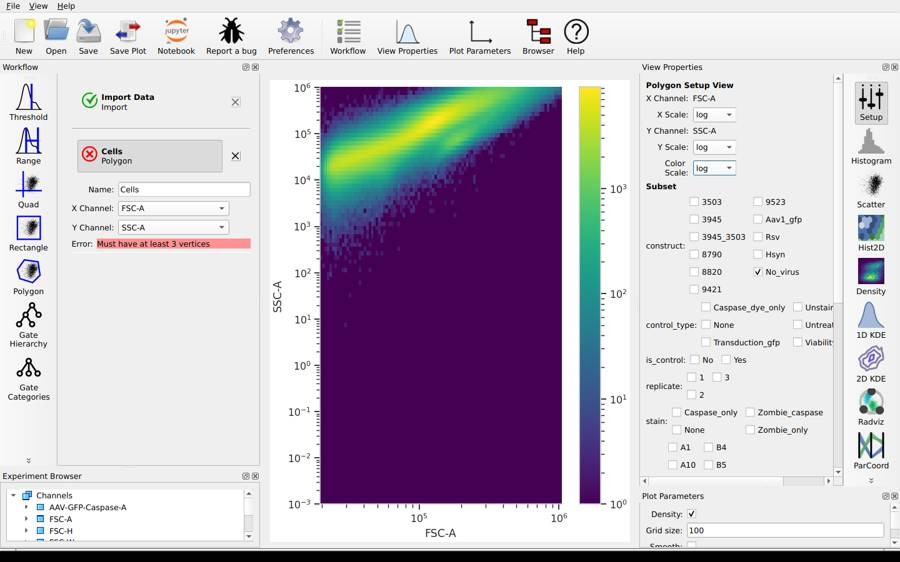
pkill -f waitplot.py; cat > /task/scripts/waitplot.py <<'EOF'
import subprocess, time, sys
import numpy as np
import matplotlib.image as mpimg
out = sys.argv[1] if len(sys.argv)>1 else '/tmp/screen.png'
timeout = float(sys.argv[2]) if len(sys.argv)>2 else 90
prev=None; t0=time.time(); dark=0
time.sleep(0.5)
while time.time()-t0 < timeout:
subprocess.run(['cu','screenshot',out],capture_output=True)
im=mpimg.imread(out)
spin=im[760:860, 900:1000, :3]
dark=(spin.max(axis=2)<0.06).mean() # pure black pixels (spinner gear)
crop=im[130:870,430:1010,:3]
if prev is not None and np.array_equal(crop,prev) and dark<0.06:
break
prev=crop
time.sleep(1.0)
print(f"{time.time()-t0:.1f}s dark={dark:.3f}")
EOF
python3 -I /task/scripts/waitplot.py /tmp/screen.png 20; cu scroll 1220 840 down 5; sleep 1; cu screenshot /tmp/screen.pngExit code 144
{
"file_path": "/tmp/screen.png"
}
cat > /task/scripts/waitplot.py <<'EOF'
import subprocess, time, sys
import numpy as np
import matplotlib.image as mpimg
out = sys.argv[1] if len(sys.argv)>1 else '/tmp/screen.png'
timeout = float(sys.argv[2]) if len(sys.argv)>2 else 90
prev=None; t0=time.time(); dark=0
time.sleep(0.5)
while time.time()-t0 < timeout:
subprocess.run(['cu','screenshot',out],capture_output=True)
im=mpimg.imread(out)
spin=im[760:860, 900:1000, :3]
dark=(spin.max(axis=2)<0.06).mean() # pure black pixels (spinner gear)
crop=im[130:870,430:1010,:3]
if prev is not None and np.array_equal(crop,prev) and dark<0.06:
break
prev=crop
time.sleep(1.0)
print(f"{time.time()-t0:.1f}s dark={dark:.3f}")
EOF
python3 -I /task/scripts/waitplot.py /tmp/screen.png 20; cu drag 1230 781 1230 480; sleep 1; cu screenshot /tmp/screen.png{
"file_path": "/tmp/screen.png"
}1.7s dark=0.000 /tmp/screen.png
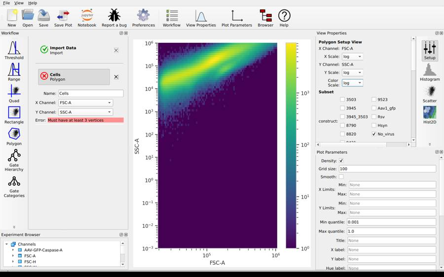
cu click 1270 600; cu type "20000"; cu key Return; sleep 0.5; cu click 1270 630; cu type "1100000"; cu key Return; sleep 0.5; cu click 1270 660; cu type "3000"; cu key Return; sleep 0.5; cu click 1270 690; cu type "1100000"; cu key Return; sleep 1; python3 -I /task/scripts/waitplot.py /tmp/screen.png 60
{
"file_path": "/tmp/screen.png"
}15.9s dark=0.000
thinking
Saturation shows at the top edge of some no-virus well, so I'm keeping the Cells polygon below 9.5e5 on both axes. Confirming the pixel-to-data mapping from the axis ticks first.
cd /tmp; python3 -I -c "
import matplotlib.image as m, numpy as np
im=m.imread('/tmp/screen.png')[:,:,:3]
# x-axis tick marks row just below axis (y~808-815): find dark pixels
row=im[812, 480:920].max(axis=1)
print('xticks', [i+480 for i in np.where(row<0.3)[0]])
col=im[100:820, 497].max(axis=1)
print('yticks', [i+100 for i in np.where(col<0.3)[0]])
"xticks [503, 543, 572, 594, 612, 627, 641, 653, 662, 663, 732, 773, 801, 823, 842, 857, 871, 883, 893, 894] yticks [148, 149, 409, 410, 670, 671] Shell cwd was reset to /task
cu click 627 567; sleep 0.5; cu click 627 252; sleep 0.5; cu click 802 154; sleep 0.5; cu click 888 154; sleep 0.5; cu click 888 410; sleep 0.5; cu click 773 567 double; sleep 2; python3 -I /task/scripts/waitplot.py /tmp/screen.png 60
{
"file_path": "/tmp/screen.png"
}1.7s dark=0.000
cu click 627 566; sleep 3; python3 -I /task/scripts/waitplot.py /tmp/screen.png 60
{
"file_path": "/tmp/screen.png"
}15.9s dark=0.000
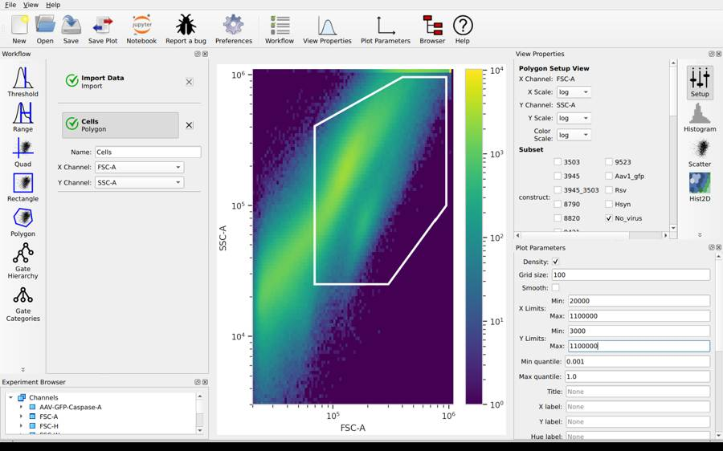
cu key ctrl+s; sleep 3; ls -la /task/outputs/workflow.flow; grep -n -A20 "polygon" /task/outputs/workflow.flow | head -40
-rw-rw-r-- 1 cfapp task 37288 Nov 5 00:35 /task/outputs/workflow.flow 1410: current_view: &id003 !polygon-view;3 1411- current_plot: null 1412- huefacet: '' 1413- huescale: log 1414: op: &id002 !polygon;1 1415- name: Cells 1416- vertices: 1417- - !!python/tuple 1418- - 69449.62791041032 1419- - 24964.12119347579 1420- - !!python/tuple 1421- - 69449.62791041032 1422- - 402928.32256009604 1423- - !!python/tuple 1424- - 401358.06684041297 1425- - 954903.3577455976 1426- - !!python/tuple 1427- - 954834.5811375185 1428- - 954903.3577455976 1429- - !!python/tuple 1430- - 954834.5811375185 1431- - 99834.07208855398 1432- - !!python/tuple 1433- - 302753.9913450832 1434- - 24964.12119347579 -- 1442: plot_params: !polygon-params;1 1443- alpha: 0.25 1444- col_wrap: null 1445- density: true 1446- despine: true 1447- gridsize: 100 1448- huelabel: '' 1449- legend: true 1450- marker: o 1451- max_quantile: 1.0 1452- min_quantile: 0.001 1453- s: 2 1454- sharex: true 1455- sharey: true
cu click 45 440; sleep 3; cu click 294 390; cu type "Single_Cells"; cu key Tab; sleep 1; cu screenshot /tmp/screen.png
{
"file_path": "/tmp/screen.png"
}/tmp/screen.png
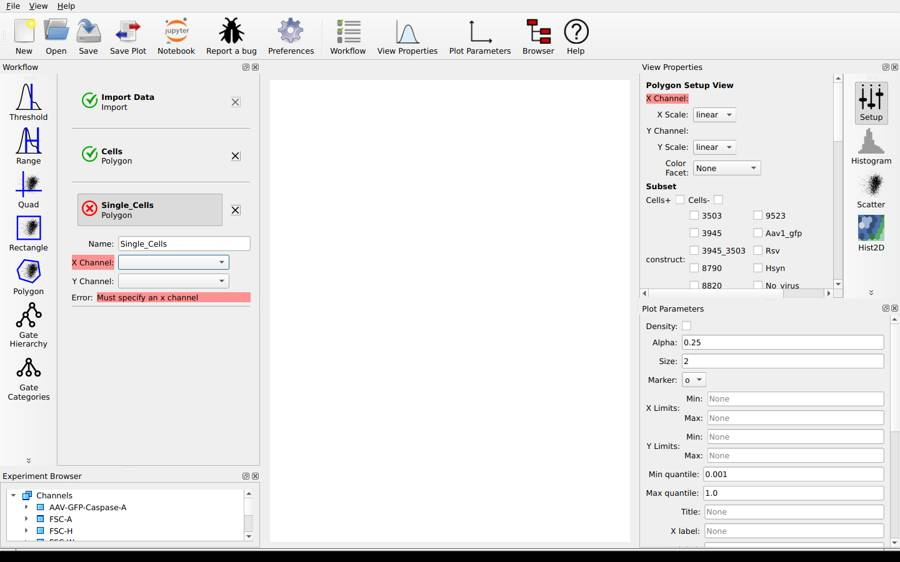
cu click 1088 320; sleep 0.5; cu click 1213 457; sleep 0.5; cu click 1098 522; sleep 0.5; cu click 1141 183; sleep 1; cu click 1127 209; sleep 1; cu click 1141 235; sleep 1; cu click 1127 261; sleep 1; cu screenshot /tmp/screen.png
{
"file_path": "/tmp/screen.png"
}/tmp/screen.png
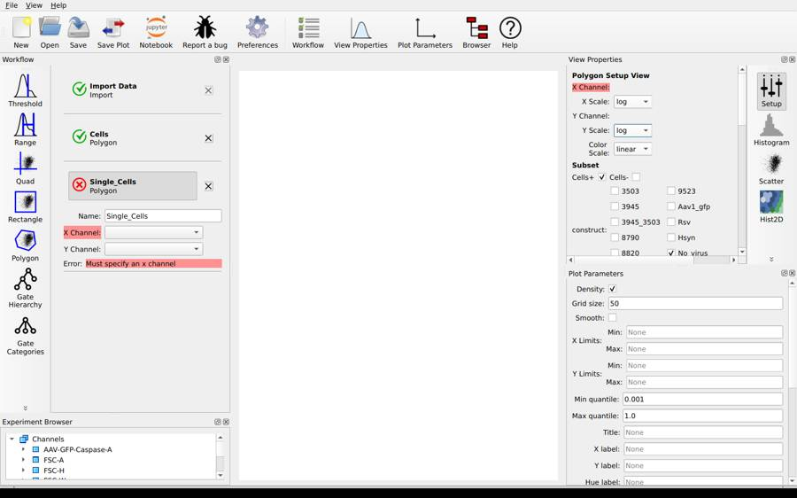
cu click 1255 548; cu key ctrl+a; cu type "100"; cu key Return; cu click 1141 269; sleep 1; cu click 1127 294; sleep 0.5; for f in "600 10000" "630 1100000" "660 10000" "690 1100000"; do set -- $f; cu click 1270 $1; cu type "$2"; cu key Return; sleep 0.3; done; cu click 278 420; sleep 1; cu screenshot /tmp/screen.png
{
"file_path": "/tmp/screen.png"
}/tmp/screen.png
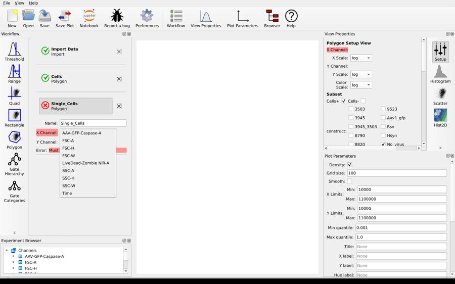
cu click 216 564; sleep 1; cu click 278 450; sleep 1; cu screenshot /tmp/screen.png
{
"file_path": "/tmp/screen.png"
}/tmp/screen.png
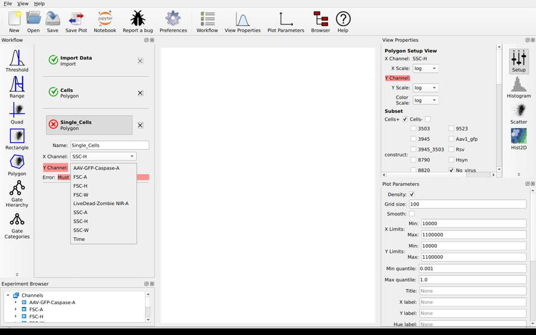
cu click 216 570; sleep 1; python3 -I /task/scripts/waitplot.py /tmp/screen.png 90; /task/scripts/mem.sh
{
"file_path": "/tmp/screen.png"
}8.3s dark=0.000 /bin/bash /usr/local/bin/start-cytoflow 2MB /opt/cytoflow/cytoflow-1.3.2/cytoflow 536MB /opt/cytoflow/cytoflow-1.3.2/cytoflow --multiprocessing-fork 2253MB avail 4657MB
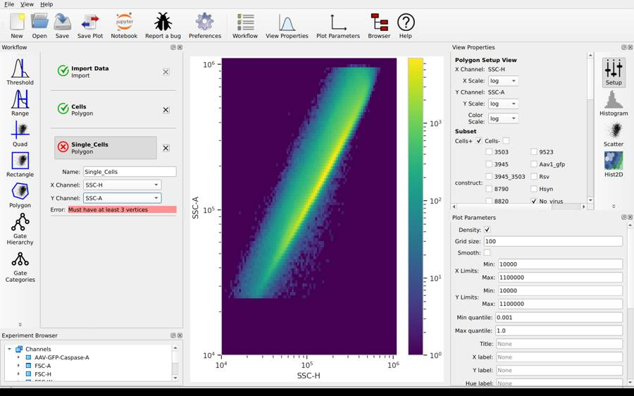
python3 -I -c "
import matplotlib.image as m, numpy as np
im=m.imread('/tmp/screen.png')[:,:,:3]
row=im[812, 480:920].max(axis=1)
print('xticks', [i+480 for i in np.where(row<0.3)[0]])
col=im[100:820, 497].max(axis=1)
print('yticks', [i+100 for i in np.where(col<0.3)[0]])
# find ridge: for each y row, x of max intensity (yellow ~ high R+G)
for y in range(160,680,40):
r=im[y,505:900]; s=r[:,0]+r[:,1]-r[:,2]
print(y, 505+int(np.argmax(s)))
"xticks [502, 503, 561, 596, 620, 639, 654, 667, 679, 689, 696, 697, 756, 790, 815, 834, 849, 862, 874, 884, 892, 893] yticks [145, 146, 476, 477, 806, 807] 160 820 200 824 240 812 280 796 320 776 360 756 400 732 440 712 480 687 520 671 560 647 600 623 640 599
python3 -I -c "
import matplotlib; matplotlib.use('Agg')
import matplotlib.pyplot as plt, matplotlib.image as m
im=m.imread('/tmp/screen.png')[130:810,500:900]
fig=plt.figure(figsize=(8,13.6)); plt.imshow(im); plt.axis('off'); plt.tight_layout(); plt.savefig('/tmp/crop.png',dpi=80)
"{
"file_path": "/tmp/crop.png"
}(Bash completed with no output)
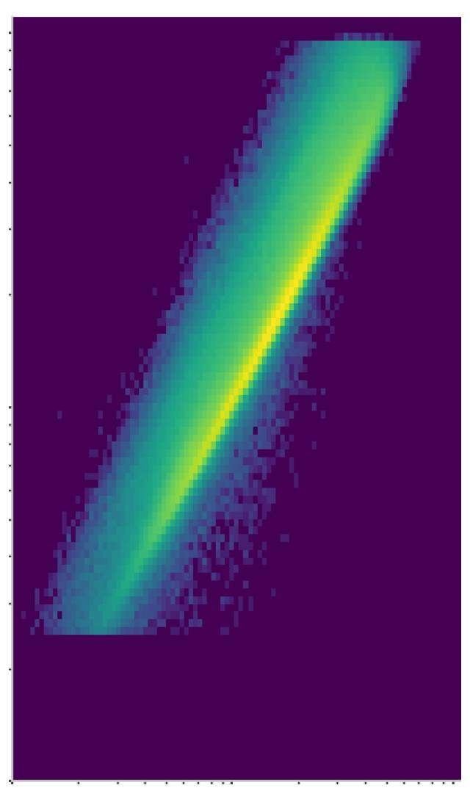
for p in "526 708" "655 480" "744 320" "792 200" "800 135" "900 135" "900 250" "747 480" "618 708"; do cu click $p; sleep 0.4; done; cu click 526 708; sleep 2; python3 -I /task/scripts/waitplot.py /tmp/screen.png 60
{
"file_path": "/tmp/screen.png"
}14.9s dark=0.000
for p in "526 708" "655 480" "744 320" "792 200" "800 140" "893 140" "893 250" "747 480" "618 708"; do cu click $p; sleep 0.4; done; cu click 526 708; sleep 2; python3 -I /task/scripts/waitplot.py /tmp/screen.png 60
{
"file_path": "/tmp/screen.png"
}14.9s dark=0.000
cu key ctrl+s; sleep 3; grep -n -A30 "name: Single_Cells" /task/outputs/workflow.flow | head -32; cu click 1393 365; sleep 2; cu screenshot /tmp/screen.png
{
"file_path": "/tmp/screen.png"
}2231: name: Single_Cells 2232- vertices: 2233- - !!python/tuple 2234- - 13142.566805002967 2235- - 20025.229360189158 2236- - !!python/tuple 2237- - 60401.53396424053 2238- - 97901.69279556129 2239- - !!python/tuple 2240- - 173953.05891524634 2241- - 298842.2899496316 2242- - !!python/tuple 2243- - 306301.51711638016 2244- - 687634.093916055 2245- - !!python/tuple 2246- - 337973.42488994874 2247- - 1046860.0325118509 2248- - !!python/tuple 2249- - 1009930.9495843219 2250- - 1046860.0325118509 2251- - !!python/tuple 2252- - 1009930.9495843219 2253- - 485620.5799014339 2254- - !!python/tuple 2255- - 180491.64242046085 2256- - 97901.69279556129 2257- - !!python/tuple 2258- - 39272.569959232824 2259- - 20025.229360189158 2260- xchannel: SSC-H 2261- xscale: log /tmp/screen.png
cu click 1162 431; sleep 1; cu screenshot /tmp/screen.png
{
"file_path": "/tmp/screen.png"
}/tmp/screen.png
cu click 1130 408; sleep 1; cu click 1141 395; sleep 1; cu screenshot /tmp/screen.png
{
"file_path": "/tmp/screen.png"
}/tmp/screen.png
cu click 1127 420; sleep 1; cu click 1141 192; sleep 1; cu click 1137 241; sleep 1; cu click 1141 252; sleep 1; cu click 1137 301; sleep 1; cu click 1255 526; cu key ctrl+a; cu type "100"; cu key Return; sleep 0.5; cu screenshot /tmp/screen.png
{
"file_path": "/tmp/screen.png"
}/tmp/screen.png
cu scroll 1180 380 down 3; sleep 1; cu screenshot /tmp/screen.png
{
"file_path": "/tmp/screen.png"
}/tmp/screen.png
cu click 1162 369; sleep 1; cu screenshot /tmp/screen.png
{
"file_path": "/tmp/screen.png"
}/tmp/screen.png
cu click 1130 346; sleep 1; cu click 1088 420; sleep 0.5; cu click 1132 442; sleep 0.5; cu screenshot /tmp/screen.png
{
"file_path": "/tmp/screen.png"
}/tmp/screen.png
cu click 1197 159; sleep 1; cu screenshot /tmp/screen.png
{
"file_path": "/tmp/screen.png"
}/tmp/screen.png
cu click 1190 256; sleep 1; cu drag 1340 200 1340 120; sleep 1; cu screenshot /tmp/screen.png
{
"file_path": "/tmp/screen.png"
}/tmp/screen.png
cu click 1197 162; sleep 1; cu click 1178 163; sleep 1; python3 -I /task/scripts/waitplot.py /tmp/screen.png 90
{
"file_path": "/tmp/screen.png"
}14.8s dark=0.000
/task/scripts/tabloop.sh fl 36; for k in 0 12 24; do python3 -I /task/scripts/montage.py fl $k $((k+12)) /tmp/qc_fl_$k.png 108 870 430 1010 6; done; echo done
done
{
"file_path": "/tmp/qc_fl_24.png"
}
{
"file_path": "/tmp/qc_fl_0.png"
}
{
"file_path": "/tmp/qc_fl_12.png"
}date; /task/scripts/mem.sh
Thu Nov 5 00:46:27 UTC 2026 /bin/bash /usr/local/bin/start-cytoflow 2MB /opt/cytoflow/cytoflow-1.3.2/cytoflow 537MB /opt/cytoflow/cytoflow-1.3.2/cytoflow --multiprocessing-fork 2255MB avail 4780MB
thinking
All wells show captured fluorescence, with most cells Zombie NIR-bright and a small Zombie-negative cluster near zero. The C10–C12 controls match their labels, and I'm overlaying the BL1-A and RL3-A histograms next to set the boundaries.
cu click 1393 230; sleep 2; cu screenshot /tmp/screen.png
{
"file_path": "/tmp/screen.png"
}/tmp/screen.png
cu click 1088 422; sleep 0.3; cu click 1132 444; sleep 0.3; cu click 1112 642; sleep 0.3; cu click 1148 556; sleep 1; cu screenshot /tmp/screen.png
{
"file_path": "/tmp/screen.png"
}/tmp/screen.png
cu click 1128 581; sleep 0.5; cu click 1260 616; cu type "2"; cu key Return; cu click 1260 669; cu key ctrl+a; cu type "1"; cu key Return; cu click 1260 526; cu type "150"; cu key Return; cu click 1137 192; sleep 1; cu screenshot /tmp/screen.png
{
"file_path": "/tmp/screen.png"
}/tmp/screen.png
cu click 1132 241; sleep 0.5; cu click 1158 298; sleep 1; cu screenshot /tmp/screen.png
{
"file_path": "/tmp/screen.png"
}/tmp/screen.png
cu click 1150 180; sleep 0.5; cu drag 1340 200 1340 330; sleep 1; cu screenshot /tmp/screen.png
{
"file_path": "/tmp/screen.png"
}/tmp/screen.png
cu click 1162 198; sleep 0.5; cu drag 1340 330 1340 100; sleep 1; cu click 1192 162; sleep 1; cu screenshot /tmp/screen.png
{
"file_path": "/tmp/screen.png"
}/tmp/screen.png
cu click 1172 163; sleep 1; python3 -I /task/scripts/waitplot.py /tmp/screen.png 90; /task/scripts/mem.sh
{
"file_path": "/tmp/screen.png"
}8.2s dark=0.000 /bin/bash /usr/local/bin/start-cytoflow 2MB /opt/cytoflow/cytoflow-1.3.2/cytoflow 539MB /opt/cytoflow/cytoflow-1.3.2/cytoflow --multiprocessing-fork 2261MB avail 4697MB
thinking
Unstained and Zombie-only controls peak near 250 on BL1-A, while CellEvent-only and untreated wells peak near 1.2e3; the GFP wells sit slightly lower with no distinct bright population. Next I'm checking RL3-A.
cu click 1192 162; sleep 1; cu screenshot /tmp/screen.png
{
"file_path": "/tmp/screen.png"
}/tmp/screen.png
cu click 1185 258; sleep 1; python3 -I /task/scripts/waitplot.py /tmp/screen.png 90
{
"file_path": "/tmp/screen.png"
}8.3s dark=0.000
thinking
Unstained and CellEvent-only controls sit in a tight peak at zero, while Zombie-stained cells show a broad bright mode near 2–3e4 and a small negative bump near zero. I'm narrowing to the Zombie-stained controls to examine the low region.
cu drag 1340 200 1340 300; sleep 1; cu screenshot /tmp/screen.png
{
"file_path": "/tmp/screen.png"
}/tmp/screen.png
cu click 1129 297; sleep 0.3; cu click 1276 269; sleep 0.3; cu click 1276 297; sleep 1; python3 -I /task/scripts/waitplot.py /tmp/screen.png 90
{
"file_path": "/tmp/screen.png"
}14.8s dark=0.000
cu drag 1340 300 1340 100; sleep 0.5; cu click 1137 192; sleep 1; cu click 1130 193; sleep 0.5; cu click 1280 729; cu type "-3000"; cu key Return; cu click 1280 759; cu type "10000"; cu key Return; sleep 1; python3 -I /task/scripts/waitplot.py /tmp/screen.png 90
{
"file_path": "/tmp/screen.png"
}15.9s dark=0.000
thinking
The valley sits near 500–700 in the Zombie-stained controls, with the bright mode starting around 1–2e3. I'm creating the Live Range gate with RL3-A ≤ 500 and a Late_apoptosis lower edge at 2000, leaving the middle band out of both.
cu click 45 235; sleep 3; cu screenshot /tmp/screen.png
{
"file_path": "/tmp/screen.png"
}/tmp/screen.png
cu click 1088 268; sleep 0.3; cu click 1132 290; sleep 0.3; cu click 1213 427; sleep 0.3; cu click 1130 183; sleep 1; cu screenshot /tmp/screen.png
{
"file_path": "/tmp/screen.png"
}/tmp/screen.png
cu click 1124 233; sleep 0.5; cu click 288 476; cu type "Live"; cu key Tab; sleep 0.5; cu click 265 506; sleep 1; cu screenshot /tmp/screen.png
{
"file_path": "/tmp/screen.png"
}/tmp/screen.png
cu click 258 602; sleep 1; cu click 288 536; cu key ctrl+a; cu type "-1000000"; cu key Tab; sleep 0.5; cu click 288 566; cu key ctrl+a; cu type "500"; cu key Tab; sleep 1; python3 -I /task/scripts/waitplot.py /tmp/screen.png 90
{
"file_path": "/tmp/screen.png"
}29.0s dark=0.000
cu key ctrl+s; sleep 3; grep -n -B2 -A8 "name: Live" /task/outputs/workflow.flow | head -20; cu click 45 235; sleep 3; cu screenshot /tmp/screen.png
{
"file_path": "/tmp/screen.png"
}319- voltage: '30' 320- LiveDead-Zombie NIR-A: 321: fcs_name: LiveDead-Zombie NIR-A 322- range: 1048576.0 323- type: channel 324- voltage: '300' 325- SSC-A: 326- fcs_name: SSC-A 327- range: 1048576.0 328- type: channel 329- voltage: '300' -- 1584- voltage: '30' 1585- LiveDead-Zombie NIR-A: 1586: fcs_name: LiveDead-Zombie NIR-A 1587- range: 1048576.0 1588- type: channel 1589- voltage: '300' 1590- SSC-A: 1591- fcs_name: SSC-A /tmp/screen.png
cu click 1088 268; sleep 0.3; cu click 1083 290; sleep 0.3; cu click 1132 311; sleep 0.3; cu click 1130 183; sleep 1; cu click 1124 233; sleep 0.5; cu click 1150 217; sleep 1; cu screenshot /tmp/screen.png
{
"file_path": "/tmp/screen.png"
}/tmp/screen.png
cu click 1150 108; sleep 0.5; cu drag 1340 200 1340 330; sleep 1; cu screenshot /tmp/screen.png
{
"file_path": "/tmp/screen.png"
}/tmp/screen.png
cu click 1162 121; sleep 0.5; cu click 288 562; cu type "Caspase_pos"; cu key Tab; sleep 0.5; cu click 265 593; sleep 1; cu screenshot /tmp/screen.png
{
"file_path": "/tmp/screen.png"
}/tmp/screen.png
cu click 246 594; sleep 1; cu click 1112 642; sleep 0.3; cu click 1260 526; cu type "120"; cu key Return; sleep 1; python3 -I /task/scripts/waitplot.py /tmp/screen.png 90
{
"file_path": "/tmp/screen.png"
}12.6s dark=0.000
cu click 1162 121; sleep 0.3; cu scroll 1180 380 down 3; sleep 1; cu screenshot /tmp/screen.png
{
"file_path": "/tmp/screen.png"
}/tmp/screen.png
cu click 1133 269; sleep 0.3; cu click 1133 297; sleep 0.3; cu click 1133 325; sleep 0.3; cu scroll 1180 380 down 2; sleep 1; cu screenshot /tmp/screen.png
{
"file_path": "/tmp/screen.png"
}/tmp/screen.png
cu click 1133 369; sleep 0.3; cu click 1133 397; sleep 0.3; cu click 1133 425; sleep 1; python3 -I /task/scripts/waitplot.py /tmp/screen.png 90
{
"file_path": "/tmp/screen.png"
}34.5s dark=0.000
cu click 1280 729; cu type "-1000"; cu key Return; cu click 1280 759; cu type "4000"; cu key Return; cu click 1260 526; cu key ctrl+a; cu type "100"; cu key Return; cu drag 1340 300 1340 100; sleep 1; cu click 1130 183; sleep 1; cu click 1124 185; sleep 1; python3 -I /task/scripts/waitplot.py /tmp/screen.png 90
{
"file_path": "/tmp/screen.png"
}12.7s dark=0.000
cu click 1106 178; sleep 0.5; cu scroll 1180 300 up 15; sleep 1; cu screenshot /tmp/screen.png
{
"file_path": "/tmp/screen.png"
}/tmp/screen.png
sleep 20; cu click 1130 183; sleep 1; cu screenshot /tmp/screen.png
{
"file_path": "/tmp/screen.png"
}/tmp/screen.png
cu click 1122 137; sleep 1; python3 -I /task/scripts/waitplot.py /tmp/screen.png 90
{
"file_path": "/tmp/screen.png"
}7.2s dark=0.000
cu click 1260 526; cu key ctrl+a; cu type "20000"; cu key Return; sleep 1; python3 -I /task/scripts/waitplot.py /tmp/screen.png 90
{
"file_path": "/tmp/screen.png"
}7.2s dark=0.000
cu click 1280 729; cu key ctrl+a; cu type "-300"; cu key Return; cu click 1280 759; cu key ctrl+a; cu type "1500"; cu key Return; sleep 1; python3 -I /task/scripts/waitplot.py /tmp/screen.png 90
{
"file_path": "/tmp/screen.png"
}14.8s dark=0.000
cu click 1148 556; sleep 0.7; cu click 1128 581; sleep 0.5; cu click 1260 616; cu type "2"; cu key Return; cu click 1260 526; cu key ctrl+a; cu type "40000"; cu key Return; sleep 1; python3 -I /task/scripts/waitplot.py /tmp/screen.png 90
{
"file_path": "/tmp/screen.png"
}13.8s dark=0.000
cu click 288 623; cu key ctrl+a; cu type "400"; cu key Tab; sleep 0.5; cu click 288 653; cu key ctrl+a; cu type "2000000"; cu key Tab; sleep 1; python3 -I /task/scripts/waitplot.py /tmp/screen.png 90
{
"file_path": "/tmp/screen.png"
}14.8s dark=0.000
cu key ctrl+s; sleep 3; grep -n -A6 "!range" /task/outputs/workflow.flow | grep -E "name|low|high|channel" ; cu click 45 440; sleep 3; cu screenshot /tmp/screen.png
{
"file_path": "/tmp/screen.png"
}3341- channel: LiveDead-Zombie NIR-A 3342- high: 500.0 3343- low: -1000000.0 3344- name: Live 4177- channel: AAV-GFP-Caspase-A 4178- high: 2000000.0 4179- low: 400.0 4180- name: Caspase_pos /tmp/screen.png
cu click 1088 342; sleep 0.3; cu click 1132 385; sleep 0.3; cu click 1098 522; sleep 0.5; cu click 288 649; cu type "Late_apoptosis"; cu key Tab; sleep 0.5; cu click 1141 183; sleep 1; cu click 1137 233; sleep 1; cu click 1141 235; sleep 1; cu screenshot /tmp/screen.png
{
"file_path": "/tmp/screen.png"
}/tmp/screen.png
cu click 1137 285; sleep 0.5; cu click 1255 548; cu key ctrl+a; cu type "100"; cu key Return; cu click 1141 269; sleep 1; cu click 1127 294; sleep 0.5; cu click 278 679; sleep 1; cu screenshot /tmp/screen.png
{
"file_path": "/tmp/screen.png"
}/tmp/screen.png
cu click 258 680; sleep 1; cu scroll 1180 400 down 5; sleep 1; cu screenshot /tmp/screen.png
{
"file_path": "/tmp/screen.png"
}/tmp/screen.png
cu click 1276 323; sleep 0.5; cu click 278 709; sleep 1; cu screenshot /tmp/screen.png
{
"file_path": "/tmp/screen.png"
}/tmp/screen.png
cu click 270 791; sleep 1; python3 -I /task/scripts/waitplot.py /tmp/screen.png 90; cp /tmp/screen.png /tmp/qc/la_C11.png
{
"file_path": "/tmp/screen.png"
}7.2s dark=0.000
cu click 1276 323; sleep 0.3; cu click 1276 295; sleep 1; python3 -I /task/scripts/waitplot.py /tmp/screen.png 90; cp /tmp/screen.png /tmp/qc/la_C789.png
{
"file_path": "/tmp/screen.png"
}22.6s dark=0.000
python3 -I -c "
import matplotlib.image as m, numpy as np
im=m.imread('/tmp/screen.png')[:,:,:3]
# x axis line row ~806; ticks below
for r in range(806,818):
row=im[r, 505:905].max(axis=1)
xs=[i+505 for i in np.where(row<0.35)[0]]
print(r, xs[:80])
" | head -14806 [511, 512, 513, 514] 807 [510, 511, 512, 513, 514] 808 [511, 512, 513, 514, 515, 518, 529, 530, 532, 533, 534, 535, 537, 538, 539, 540, 542, 543, 556, 568, 578, 588, 596, 603, 610, 615, 620, 624, 625, 654, 670, 682, 691, 698, 704, 709, 714, 717, 718, 745, 760, 771, 780, 787, 793, 798, 802, 805, 806, 832, 848, 859, 868, 875, 881, 886, 890, 893, 894] 809 [518, 529, 530, 532, 533, 534, 535, 537, 538, 539, 540, 542, 543, 556, 568, 578, 588, 596, 603, 610, 615, 620, 624, 625, 654, 670, 682, 691, 698, 704, 709, 714, 717, 718, 745, 760, 771, 780, 787, 793, 798, 802, 805, 806, 832, 848, 859, 868, 875, 881, 886, 890, 893, 894] 810 [518, 529, 530, 532, 533, 534, 535, 537, 538, 539, 540, 542, 543, 556, 568, 578, 588, 596, 603, 610, 615, 620, 624, 625, 654, 670, 682, 691, 698, 704, 709, 714, 717, 718, 745, 760, 771, 780, 787, 793, 798, 802, 805, 806, 832, 848, 859, 868, 875, 881, 886, 890, 893, 894] 811 [518, 529, 530, 532, 533, 534, 535, 537, 538, 539, 540, 542, 543, 556, 568, 578, 588, 596, 603, 610, 615, 620, 624, 625, 654, 670, 682, 691, 698, 704, 709, 714, 717, 718, 745, 760, 771, 780, 787, 793, 798, 802, 805, 806, 832, 848, 859, 868, 875, 881, 886, 890, 893, 894] 812 [518, 529, 530, 532, 533, 534, 535, 537, 538, 539, 540, 542, 543, 556, 568, 578, 588, 596, 603, 610, 615, 620, 624, 625, 654, 670, 682, 691, 698, 704, 709, 714, 717, 718, 745, 760, 771, 780, 787, 793, 798, 802, 805, 806, 832, 848, 859, 868, 875, 881, 886, 890, 893, 894] 813 [529, 530, 542, 543, 624, 625, 717, 718, 805, 806, 893, 894] 814 [529, 530, 542, 543, 624, 625, 717, 718, 805, 806, 893, 894] 815 [529, 530, 542, 543, 624, 625, 717, 718, 805, 806, 893, 894] 816 [] 817 []
python3 -I -c "
import matplotlib.image as m, numpy as np
im=m.imread('/tmp/screen.png')[:,:,:3]
for c in range(500,516):
col=im[130:810, c].max(axis=1)
ys=[i+130 for i in np.where(col<0.35)[0]]
print(c, ys[:120])
" | head -16500 [288, 699, 700, 701, 702] 501 [] 502 [] 503 [] 504 [] 505 [] 506 [] 507 [139, 140, 289, 290, 444, 445, 616, 617, 700, 701, 709, 710, 783, 784] 508 [139, 140, 289, 290, 444, 445, 616, 617, 700, 701, 709, 710, 783, 784] 509 [139, 140, 289, 290, 444, 445, 616, 617, 700, 701, 709, 710, 783, 784] 510 [139, 140, 289, 290, 444, 445, 616, 617, 700, 701, 709, 710, 783, 784, 807] 511 [139, 140, 147, 155, 163, 173, 185, 199, 218, 245, 289, 290, 297, 304, 313, 323, 335, 350, 369, 397, 444, 445, 452, 460, 470, 481, 495, 512, 534, 566, 616, 617, 624, 631, 639, 647, 655, 664, 673, 682, 691, 700, 701, 702, 703, 704, 705, 706, 707, 708, 709, 710, 719, 728, 737, 746, 754, 762, 770, 777, 783, 784, 806, 807, 808] 512 [139, 140, 147, 155, 163, 173, 185, 199, 218, 245, 289, 290, 297, 304, 313, 323, 335, 350, 369, 397, 444, 445, 452, 460, 470, 481, 495, 512, 534, 566, 616, 617, 624, 631, 639, 647, 655, 664, 673, 682, 691, 700, 701, 702, 703, 704, 705, 706, 707, 708, 709, 710, 719, 728, 737, 746, 754, 762, 770, 777, 783, 784, 806, 807, 808] 513 [139, 140, 147, 155, 163, 173, 185, 199, 218, 245, 289, 290, 297, 304, 313, 323, 335, 350, 369, 397, 444, 445, 452, 460, 470, 481, 495, 512, 534, 566, 616, 617, 624, 631, 639, 647, 655, 664, 673, 682, 691, 700, 701, 702, 703, 704, 705, 706, 707, 708, 709, 710, 719, 728, 737, 746, 754, 762, 770, 777, 783, 784, 806, 807, 808] 514 [139, 140, 147, 155, 163, 173, 185, 199, 218, 245, 289, 290, 297, 304, 313, 323, 335, 350, 369, 397, 444, 445, 452, 460, 470, 481, 495, 512, 534, 566, 616, 617, 624, 631, 639, 647, 655, 664, 673, 682, 691, 700, 701, 702, 703, 704, 705, 706, 707, 708, 709, 710, 719, 728, 737, 746, 754, 762, 770, 777, 783, 784, 806, 807, 808] 515 [808]
for f in "600 -1000" "630 3000000" "660 -3000" "690 3000000"; do set -- $f; cu click 1270 $1; cu key ctrl+a; cu type "$2"; cu key Return; sleep 0.3; done; sleep 1; python3 -I /task/scripts/waitplot.py /tmp/screen.png 90; python3 -I -c "
import matplotlib.image as m, numpy as np
im=m.imread('/tmp/screen.png')[:,:,:3]
row=im[813, 505:1000].max(axis=1); print('X major', [i+505 for i in np.where(row<0.35)[0]])
row=im[810, 505:1000].max(axis=1); print('X all', [i+505 for i in np.where(row<0.35)[0]])
for c in (508,512):
col=im[125:812, c].max(axis=1); print('Y',c, [i+125 for i in np.where(col<0.35)[0]])
"{
"file_path": "/tmp/screen.png"
}12.7s dark=0.000 X major [516, 541, 542, 553, 554, 632, 633, 723, 724, 808, 809, 893, 894, 896, 978, 979, 980, 981, 982, 983, 990, 991] X all [515, 516, 517, 520, 530, 541, 542, 543, 544, 545, 547, 548, 549, 550, 552, 553, 554, 566, 578, 588, 597, 605, 612, 618, 624, 629, 632, 633, 661, 677, 689, 697, 704, 710, 715, 720, 723, 724, 749, 764, 775, 783, 790, 796, 801, 805, 808, 809, 834, 849, 860, 869, 875, 881, 886, 890, 893, 894, 895, 896, 897, 981] Y 508 [139, 140, 289, 290, 444, 445, 616, 617, 700, 701, 709, 710, 783, 784] Y 512 [136, 137, 138, 139, 140, 147, 155, 163, 173, 185, 199, 218, 245, 289, 290, 297, 304, 313, 323, 335, 350, 369, 397, 444, 445, 452, 460, 470, 481, 495, 512, 534, 566, 616, 617, 624, 631, 639, 647, 655, 664, 673, 682, 691, 700, 701, 702, 703, 704, 705, 706, 707, 708, 709, 710, 719, 728, 737, 746, 754, 762, 770, 777, 783, 784, 806, 807, 808]
for p in "597 616" "597 137" "896 137" "896 616"; do cu click $p; sleep 0.5; done; cu click 597 616; sleep 2; python3 -I /task/scripts/waitplot.py /tmp/screen.png 60
{
"file_path": "/tmp/screen.png"
}1.7s dark=0.000
cu click 894 137; sleep 0.5; cu click 894 616; sleep 0.5; cu screenshot /tmp/screen.png
{
"file_path": "/tmp/screen.png"
}/tmp/screen.png
cu click 597 616; sleep 2; python3 -I /task/scripts/waitplot.py /tmp/screen.png 60
{
"file_path": "/tmp/screen.png"
}28.0s dark=0.000
cu key ctrl+s; sleep 3; grep -n -A22 "name: Late_apoptosis" /task/outputs/workflow.flow | head -24
5043: name: Late_apoptosis 5044- vertices: 5045- - !!python/tuple 5046- - 389.1614495142759 5047- - 1015.0381428820975 5048- - !!python/tuple 5049- - 389.1614495142759 5050- - 1044471.0457225314 5051- - !!python/tuple 5052- - 389.1614495142759 5053- - 1015.0381428820975 5054- - !!python/tuple 5055- - 1027777.2675906956 5056- - 1044471.0457225314 5057- - !!python/tuple 5058- - 1027777.2675906956 5059- - 1015.0381428820975 5060- xchannel: AAV-GFP-Caspase-A 5061- xscale: logicle 5062- ychannel: LiveDead-Zombie NIR-A 5063- yscale: logicle 5064- plot_params: !polygon-params;1 5065- alpha: 0.25
for p in "598 616" "598 136" "895 136" "895 616"; do cu click $p; sleep 0.6; done; cu screenshot /tmp/screen.png
{
"file_path": "/tmp/screen.png"
}/tmp/screen.png
for p in "598 137" "894 137" "894 616"; do cu click $p; sleep 0.6; done; cu screenshot /tmp/screen.png
{
"file_path": "/tmp/screen.png"
}/tmp/screen.png
cu click 598 616; sleep 2; python3 -I /task/scripts/waitplot.py /tmp/screen.png 60; cu key ctrl+s; sleep 3; grep -n -A18 "name: Late_apoptosis" /task/outputs/workflow.flow | head -20
{
"file_path": "/tmp/screen.png"
}28.0s dark=0.000 5044: name: Late_apoptosis 5045- vertices: 5046- - !!python/tuple 5047- - 401.20283533084023 5048- - 1015.0381426912434 5049- - !!python/tuple 5050- - 401.20283533084023 5051- - 1015.0381426912434 5052- - !!python/tuple 5053- - 401.20283533084023 5054- - 1044471.0450070977 5055- - !!python/tuple 5056- - 1027778.3174952858 5057- - 1044471.0450070977 5058- - !!python/tuple 5059- - 1027778.3174952858 5060- - 1015.0381426912434 5061- xchannel: AAV-GFP-Caspase-A 5062- xscale: logicle
{
"file_path": "/tmp/qc_time_12.png"
}{
"file_path": "/tmp/qc_time_0.png"
}
{
"file_path": "/tmp/qc_time_24.png"
}
{
"file_path": "/tmp/qc_fsc_0.png"
}cu scroll 45 500 down 10; sleep 1; cu screenshot /tmp/screen.png
{
"file_path": "/tmp/screen.png"
}/tmp/screen.png
cu click 45 737; sleep 1; cu screenshot /tmp/screen.png
{
"file_path": "/tmp/screen.png"
}/tmp/screen.png
cu click 130 165; sleep 3; cu screenshot /tmp/screen.png
{
"file_path": "/tmp/screen.png"
}/tmp/screen.png
cu key Escape; sleep 1; cu click 700 110; sleep 1; cu screenshot /tmp/screen.png
{
"file_path": "/tmp/screen.png"
}/tmp/screen.png
cu click 408 762; sleep 1; cu scroll 250 500 down 10; sleep 1; cu screenshot /tmp/screen.png
{
"file_path": "/tmp/screen.png"
}/tmp/screen.png
cu scroll 250 300 up 2; sleep 1; cu screenshot /tmp/screen.png
{
"file_path": "/tmp/screen.png"
}/tmp/screen.png
cu click 290 235; cu type "AllCombos"; cu key Tab; sleep 0.5; cu click 265 266; sleep 1; cu screenshot /tmp/screen.png
{
"file_path": "/tmp/screen.png"
}/tmp/screen.png
cu click 205 291; sleep 1; cu click 255 296; sleep 1; cu screenshot /tmp/screen.png
{
"file_path": "/tmp/screen.png"
}/tmp/screen.png
cu click 205 297; sleep 1; for y in 325 353 381 409 437; do cu click 185 $y; sleep 0.3; done; cu click 348 437; sleep 1; cu screenshot /tmp/screen.png
{
"file_path": "/tmp/screen.png"
}/tmp/screen.png
sleep 15; cu screenshot /tmp/screen.png; /task/scripts/mem.sh
{
"file_path": "/tmp/screen.png"
}/tmp/screen.png /bin/bash /usr/local/bin/start-cytoflow 2MB /opt/cytoflow/cytoflow-1.3.2/cytoflow 544MB /opt/cytoflow/cytoflow-1.3.2/cytoflow --multiprocessing-fork 2274MB avail 4684MB

sleep 30; cu screenshot /tmp/screen.png; top -bn1 | head -12
<tool_use_error>Blocked: sleep 30 followed by: cu screenshot /tmp/screen.png top -bn1 head -12. To wait for a condition, use Monitor with an until-loop (e.g. `until <check>; do sleep 2; done`). To wait for a command you started, use run_in_background: true. Do not chain shorter sleeps to work around this block.</tool_use_error>
{
"file_path": "/tmp/screen.png"
}top -bn1 | head -12; /task/scripts/mem.sh
top - 01:04:51 up 57 min, 0 user, load average: 0.47, 0.37, 0.43
Tasks: 110 total, 2 running, 100 sleeping, 0 stopped, 8 zombie
%Cpu(s): 23.3 us, 2.3 sy, 0.0 ni, 74.4 id, 0.0 wa, 0.0 hi, 0.0 si, 0.0 st
MiB Mem : 7949.9 total, 3078.7 free, 4448.7 used, 667.9 buff/cache
MiB Swap: 0.0 total, 0.0 free, 0.0 used. 3501.3 avail Mem
PID USER PR NI VIRT RES SHR S %CPU %MEM TIME+ COMMAND
1411 cfapp 20 0 4457872 2.6g 118784 R 100.0 33.1 23:12.43 cytoflow
1 root -2 0 12664 1436 960 S 0.0 0.0 0:00.08 runch-age+
2 root 20 0 0 0 0 S 0.0 0.0 0:00.00 kthreadd
3 root 20 0 0 0 0 S 0.0 0.0 0:00.00 pool_work+
4 root 0 -20 0 0 0 I 0.0 0.0 0:00.00 kworker/R+
/bin/bash /usr/local/bin/start-cytoflow 2MB
/opt/cytoflow/cytoflow-1.3.2/cytoflow 544MB
/opt/cytoflow/cytoflow-1.3.2/cytoflow --multiprocessing-fork 2274MB
avail 4642MBpython3 -I /task/scripts/waitplot.py /tmp/screen.png 110; /task/scripts/mem.sh
{
"file_path": "/tmp/screen.png"
}26.8s dark=0.000 /bin/bash /usr/local/bin/start-cytoflow 2MB /opt/cytoflow/cytoflow-1.3.2/cytoflow 544MB /opt/cytoflow/cytoflow-1.3.2/cytoflow --multiprocessing-fork 2279MB avail 4640MB
cu key ctrl+s; cu click 1393 467; sleep 1; cu screenshot /tmp/screen.png
{
"file_path": "/tmp/screen.png"
}/tmp/screen.png
cu click 1345 380; sleep 2; cu screenshot /tmp/screen.png
{
"file_path": "/tmp/screen.png"
}/tmp/screen.png
cu click 1393 467; sleep 1; cu screenshot /tmp/screen.png
{
"file_path": "/tmp/screen.png"
}/tmp/screen.png
cu click 1142 162; sleep 1; cu screenshot /tmp/screen.png
{
"file_path": "/tmp/screen.png"
}/tmp/screen.png
cu click 1136 163; sleep 3; cu screenshot /tmp/screen.png
{
"file_path": "/tmp/screen.png"
}/tmp/screen.png
cu click 1142 192; sleep 2; cu screenshot /tmp/screen.png
{
"file_path": "/tmp/screen.png"
}/tmp/screen.png
chmod 2777 /task/outputs/work; chmod a+rw /task/outputs/work/*; cu paste "/task/outputs/work/allcombos_long.csv"; cu key Return; sleep 3; ls -la /task/outputs/work; head -5 /task/outputs/work/allcombos_long.csv; wc -l /task/outputs/work/allcombos_long.csv
total 64 drwxrwsrwx 2 root task 4096 Nov 5 01:06 . drwxrwsrwx 3 agent task 4096 Nov 5 00:09 .. -rw-rw-r-- 1 cfapp task 14529 Nov 5 01:06 allcombos_long.csv -rw-rw-rw- 1 root task 37798 Nov 5 00:08 fcs_headers.csv Caspase_pos,Cells,Late_apoptosis,Live,Single_Cells,well,FSC-A 0,0,0,0,0,A1,8707.0 0,0,0,0,0,A10,15552.0 0,0,0,0,0,A11,10367.0 0,0,0,0,0,A12,16189.0 721 /task/outputs/work/allcombos_long.csv
cat > /task/scripts/counts.py <<'EOF'
import pandas as pd, numpy as np
d=pd.read_csv('/task/outputs/work/allcombos_long.csv')
d=d.rename(columns={'FSC-A':'n'})
for c in ['Caspase_pos','Cells','Late_apoptosis','Live','Single_Cells']: d[c]=d[c].astype(bool)
hdr=pd.read_csv('/task/outputs/work/fcs_headers.csv')[['file','well','$TOT']]
lay=pd.read_csv('/task/inputs/plate_layout.csv')
g=lambda m: d[m].groupby('well').n.sum()
res=pd.DataFrame({
'All_events': d.groupby('well').n.sum(),
'Cells': g(d.Cells),
'Single_Cells': g(d.Cells & d.Single_Cells),
'Live': g(d.Cells & d.Single_Cells & d.Live),
'Caspase_pos': g(d.Cells & d.Single_Cells & d.Live & d.Caspase_pos),
'Late_apoptosis': g(d.Cells & d.Single_Cells & d.Late_apoptosis),
}).fillna(0).astype(int)
res=res.join(hdr.set_index('well')['$TOT'])
print('TOT mismatch:', (res.All_events!=res['$TOT']).sum())
# overlap check Live & Late
print('Live&Late overlap events:', int(d[d.Cells&d.Single_Cells&d.Live&d.Late_apoptosis].n.sum()))
order=lay.well.tolist()
res=res.loc[order]
pct=pd.DataFrame({
'pct_cells':100*res.Cells/res.All_events,
'pct_single':100*res.Single_Cells/res.Cells,
'pct_live':100*res.Live/res.Single_Cells,
'pct_casp_of_live':100*res.Caspase_pos/res.Live,
'pct_late':100*res.Late_apoptosis/res.Single_Cells})
out=res.join(pct.round(2)).join(lay.set_index('well')[['construct','control_type']])
pd.set_option('display.width',250)
print(out.to_string())
out.to_csv('/task/outputs/work/summary_from_allcombos.csv')
EOF
python3 -I /task/scripts/counts.pyTOT mismatch: 0
Live&Late overlap events: 0
All_events Cells Single_Cells Live Caspase_pos Late_apoptosis $TOT pct_cells pct_single pct_live pct_casp_of_live pct_late construct control_type
well
A1 183353 113298 108737 1433 567 94163 183353 61.79 95.97 1.32 39.57 86.60 RSV none
A2 221770 135705 127445 5757 1648 106296 221770 61.19 93.91 4.52 28.63 83.41 RSV none
A3 222545 143449 136902 4641 2260 117993 222545 64.46 95.44 3.39 48.70 86.19 RSV none
A4 160440 104414 100591 3018 947 87048 160440 65.08 96.34 3.00 31.38 86.54 hSyn none
A5 169911 105800 101958 5382 2311 85819 169911 62.27 96.37 5.28 42.94 84.17 hSyn none
A6 230857 148794 141246 9328 2457 118304 230857 64.45 94.93 6.60 26.34 83.76 hSyn none
A7 282723 172715 160182 10527 2570 131370 282723 61.09 92.74 6.57 24.41 82.01 9523 none
A8 236938 147198 138865 13356 4294 111066 236938 62.13 94.34 9.62 32.15 79.98 9523 none
A9 241833 153918 145832 8037 2253 122981 241833 63.65 94.75 5.51 28.03 84.33 9523 none
A10 335810 208858 195586 6499 1561 168695 335810 62.20 93.65 3.32 24.02 86.25 3945 none
A11 228556 135561 129108 7971 2839 107882 228556 59.31 95.24 6.17 35.62 83.56 3945 none
A12 330844 198854 185972 8753 2858 158341 330844 60.11 93.52 4.71 32.65 85.14 3945 none
B1 254845 153108 143716 11540 3325 115136 254845 60.08 93.87 8.03 28.81 80.11 9421 none
B2 319449 190073 175741 20221 8979 137329 319449 59.50 92.46 11.51 44.40 78.14 9421 none
B3 275473 169861 158430 15727 5815 127629 275473 61.66 93.27 9.93 36.97 80.56 9421 none
B4 219859 131822 125326 4429 1466 105988 219859 59.96 95.07 3.53 33.10 84.57 3503 none
B5 225148 133912 127657 6832 2409 106295 225148 59.48 95.33 5.35 35.26 83.27 3503 none
B6 369018 221802 205637 12422 5567 173163 369018 60.11 92.71 6.04 44.82 84.21 3503 none
B7 186946 116843 112073 3905 1442 97015 186946 62.50 95.92 3.48 36.93 86.56 8820 none
B8 412353 253748 234624 8842 4368 202639 412353 61.54 92.46 3.77 49.40 86.37 8820 none
B9 219409 134978 128525 4721 1839 110623 219409 61.52 95.22 3.67 38.95 86.07 8820 none
B10 187472 113664 109494 3459 1183 93616 187472 60.63 96.33 3.16 34.20 85.50 8790 none
B11 271438 169957 161339 6844 3250 139096 271438 62.61 94.93 4.24 47.49 86.21 8790 none
B12 286933 179041 169958 6754 3583 147766 286933 62.40 94.93 3.97 53.05 86.94 8790 none
C1 250794 160329 147606 2588 766 125145 250794 63.93 92.06 1.75 29.60 84.78 3945_3503 none
C2 305451 196838 182845 6509 2720 158627 305451 64.44 92.89 3.56 41.79 86.75 3945_3503 none
C3 418796 258931 238686 12683 6804 202556 418796 61.83 92.18 5.31 53.65 84.86 3945_3503 none
C4 230134 145203 139287 1370 905 124777 230134 63.09 95.93 0.98 66.06 89.58 AAV1_GFP transduction_gfp
C5 206789 131679 126527 1608 1079 113794 206789 63.68 96.09 1.27 67.10 89.94 AAV1_GFP transduction_gfp
C6 189779 118286 114422 939 678 104646 189779 62.33 96.73 0.82 72.20 91.46 AAV1_GFP transduction_gfp
C7 317865 187834 169326 20265 13123 130750 317865 59.09 90.15 11.97 64.76 77.22 no_virus untreated_no_virus
C8 214991 121887 113135 6556 2406 93786 214991 56.69 92.82 5.79 36.70 82.90 n
… [731 more characters not shown]{
"file_path": "/tmp/qc_fl_24.png"
}{
"file_path": "/tmp/qc_fsc_12.png"
}{
"file_path": "/tmp/qc_fsc_24.png"
}cu click 45 868; sleep 1; cu click 130 640; sleep 3; cu scroll 250 500 down 15; sleep 1; cu screenshot /tmp/screen.png
{
"file_path": "/tmp/screen.png"
}/tmp/screen.png
cu click 130 470; sleep 3; cu key Escape; cu click 700 110; sleep 1; cu scroll 250 500 down 20; sleep 1; cu screenshot /tmp/screen.png
{
"file_path": "/tmp/screen.png"
}/tmp/screen.png
cu click 362 593; sleep 2; cu screenshot /tmp/screen.png
{
"file_path": "/tmp/screen.png"
}/tmp/screen.png
cu click 285 733; cu type "TimeBin"; cu key Tab; sleep 0.5; cu click 273 763; sleep 1; cu screenshot /tmp/screen.png
{
"file_path": "/tmp/screen.png"
}/tmp/screen.png
cu click 210 887; sleep 1; cu click 285 824; cu key ctrl+a; cu type "1000"; cu key Tab; sleep 1; python3 -I /task/scripts/waitplot.py /tmp/screen.png 100
{
"file_path": "/tmp/screen.png"
}101.0s dark=0.235
grep -n "name: AllCombos\|!channel-stat\|name: TimeBin\|!binning" /task/outputs/workflow.flow | head; ls -la /task/outputs/workflow.flow; cp /task/outputs/workflow.flow /task/outputs/work/workflow_backup_gates.flow; cu click 924 483; sleep 1; pkill -f "cytoflow-1.3.2/cytoflow$" ; sleep 1; ps aux | grep -c "[c]ytoflow-1.3.2/cytoflow"
6111: operation: !channel-statistic;2 6121: name: AllCombos -rw-rw-r-- 1 cfapp task 206040 Nov 5 01:05 /task/outputs/workflow.flow 2
ps aux | grep "[c]ytoflow" | awk '{print $2, $11, $12, $13}'; export DISPLAY=:1; for w in $(xdotool search --name "Cytoflow" 2>/dev/null); do echo $w "$(xdotool getwindowname $w)"; done840 runuser -u cfapp 842 /bin/bash /usr/local/bin/start-cytoflow 863 [cytoflow] <defunct> 1409 [cytoflow] <defunct> 7516 /opt/cytoflow/cytoflow-1.3.2/cytoflow 7527 /opt/cytoflow/cytoflow-1.3.2/cytoflow -B -S 7529 /opt/cytoflow/cytoflow-1.3.2/cytoflow --multiprocessing-fork tracker_fd=10
export DISPLAY=:1; for i in $(seq 1 30); do W=$(xdotool search --name "Welcome to Cytoflow" 2>/dev/null | head -1); [ -n "$W" ] && break; sleep 1; done; echo $W; for w in $(xdotool search --name "Cytoflow" 2>/dev/null); do echo $w "$(xdotool getwindowname $w)"; done
14680075 14680068 Qt Selection Owner for cytoflow 14680072 cytoflow 14680070 Cytometry analysis - Cytoflow 14680075 Welcome to Cytoflow!
thinking
Cytoflow ran out of memory again on the Binning op, so I'm restarting it and reloading the saved workflow, which keeps the five gates and the combined Count, without Binning.
cu click 915 493; sleep 1; export DISPLAY=:1; xdotool windowsize 14680070 1440 878; xdotool windowmove 14680070 0 0; sleep 2; cu screenshot /tmp/screen.png
{
"file_path": "/tmp/screen.png"
}/tmp/screen.png
cu click 408 692; sleep 0.5; cu click 408 593; sleep 0.5; cu click 21 9; sleep 1; cu click 58 33; sleep 2; cu screenshot /tmp/screen.png
{
"file_path": "/tmp/screen.png"
}/tmp/screen.png
cu paste "/task/outputs/workflow.flow"; cu key Return; sleep 3; cu screenshot /tmp/screen.png
{
"file_path": "/tmp/screen.png"
}/tmp/screen.png
cu click 747 449; cat >> /root/.claude/projects/-task/memory/cytoflow-gui-environment-quirks.md <<'EOF' - A Binning op on Time over the full 9.4M events also OOM-killed the worker. Don't use Binning. For per-well counts, one Channel Statistic (Count, grouped by well plus every gate boolean) took about 60 s and was safe. Export it from the "Long Table" view to get tidy CSV. - /task/outputs/work is owned by root. Run `chmod 2777` on it before Cytoflow (user cfapp) can export into it. EOF echo ok
ok
python3 -I - <<'EOF'
import matplotlib.image as m, numpy as np
im=m.imread('/tmp/qc/time_24.png')[:,:,:3]
print(im.shape)
# bar color: light blue approx (0.64,0.71,0.84)?
col=im[500,430:1010]
u,c=np.unique((col*255).astype(int),axis=0,return_counts=True)
for a,b in sorted(zip(c,map(tuple,u)),reverse=True)[:8]: print(a,b)
EOF(900, 1440, 3) 425 (255, 255, 255) 121 (165, 184, 215) 14 (243, 243, 243) 7 (204, 204, 204) 4 (239, 239, 239) 2 (208, 208, 208) 2 (164, 164, 164) 2 (159, 178, 209)
cat > /task/scripts/timeprof.py <<'EOF'
import matplotlib.image as m, numpy as np, pandas as pd
wells=['A%d'%i for i in range(1,13)]+['B%d'%i for i in range(1,13)]+['C%d'%i for i in range(1,13)]
rows=[]; prof={}
for i,w in enumerate(wells):
im=m.imread(f'/tmp/qc/time_{i:02d}.png')[:,:,:3]*255
reg=im[120:880,430:1010]
bar=(np.abs(reg[:,:,0]-165)<12)&(np.abs(reg[:,:,1]-184)<12)&(np.abs(reg[:,:,2]-215)<12)
# also grid lines over bars are darker blue; include (159,178,209)-ish and darker overlaps
bar2=(reg[:,:,2]>190)&(reg[:,:,0]<175)&(reg[:,:,0]>120)&(reg[:,:,2]-reg[:,:,0]>35)
b=bar|bar2
cols=np.where(b.sum(0)>3)[0]
x0,x1=cols.min(),cols.max()
# bottom of bars = max row where bar present
ybot=np.where(b.any(1))[0].max()
heights=[]
for x in range(x0,x1+1):
ys=np.where(b[:,x])[0]
heights.append(ybot-ys.min()+1 if len(ys) else 0)
h=np.array(heights,float)
# resample to 100 bins
n=len(h); idx=np.linspace(0,n,101).astype(int)
hb=np.array([np.median(h[idx[k]:max(idx[k+1],idx[k]+1)]) for k in range(100)])
med=np.median(hb)
r=hb/med
prof[w]=r
rows.append(dict(well=w, min_rel=r.min(), argmin=int(r.argmin()), max_rel=r.max(), argmax=int(r.argmax()),
cv=r.std()/r.mean(), first5=r[:5].mean(), last5=r[-5:].mean(), last3=r[-3:].mean(), last10=r[-10:].mean(),
n_low50=int((r<0.5).sum()), n_high150=int((r>1.5).sum())))
df=pd.DataFrame(rows).set_index('well').round(2)
pd.set_option('display.width',200)
print(df.to_string())
pd.DataFrame(prof).to_csv('/task/outputs/work/time_profile_rel_from_screens.csv')
EOF
python3 -I /task/scripts/timeprof.pymin_rel argmin max_rel argmax cv first5 last5 last3 last10 n_low50 n_high150 well A1 0.0 0 1.10 99 0.38 0.0 0.95 0.99 0.89 12 0 A2 0.0 0 1.37 12 0.38 0.0 0.85 0.82 0.87 12 0 A3 0.0 0 1.22 61 0.38 0.0 0.85 0.80 0.90 12 0 A4 0.0 0 1.21 56 0.40 0.0 0.64 0.48 0.76 13 0 A5 0.0 0 1.13 69 0.38 0.0 0.86 0.89 0.90 12 0 A6 0.0 0 1.15 95 0.38 0.0 0.78 0.62 0.84 13 0 A7 0.0 0 1.70 19 0.40 0.0 0.83 0.90 0.86 12 2 A8 0.0 0 1.15 60 0.38 0.0 0.81 0.84 0.85 12 0 A9 0.0 0 1.21 50 0.39 0.0 0.76 0.59 0.81 12 0 A10 0.0 0 1.13 32 0.38 0.0 0.77 0.63 0.81 12 0 A11 0.0 0 1.21 81 0.38 0.0 0.92 0.95 0.90 13 0 A12 0.0 0 1.39 26 0.40 0.0 0.75 0.55 0.84 13 0 B1 0.0 0 1.25 49 0.39 0.0 0.56 0.36 0.77 13 0 B2 0.0 0 1.63 26 0.41 0.0 0.87 0.95 0.87 14 3 B3 0.0 0 1.32 26 0.39 0.0 0.62 0.46 0.79 14 0 B4 0.0 0 1.30 57 0.36 0.0 0.92 0.95 0.91 11 0 B5 0.0 0 1.32 55 0.37 0.0 0.74 0.56 0.83 12 0 B6 0.0 0 1.19 63 0.36 0.0 0.98 1.03 0.91 11 0 B7 0.0 0 1.09 50 0.36 0.0 0.86 0.91 0.85 11 0 B8 0.0 0 2.34 29 0.42 0.0 0.96 0.99 0.92 11 3 B9 0.0 0 1.28 40 0.41 0.0 0.47 0.29 0.72 15 0 B10 0.0 0 1.33 98 0.39 0.0 1.01 1.10 0.93 13 0 B11 0.0 0 1.12 21 0.41 0.0 0.40 0.25 0.63 15 0 B12 0.0 0 1.10 43 0.38 0.0 0.93 1.00 0.87 12 0 C1 0.0 0 3.99 79 0.88 0.0 0.17 0.18 0.60 35 34 C2 0.0 0 1.87 57 0.64 0.0 0.97 0.88 1.02 28 5 C3 0.0 0 1.29 12 0.38 0.0 1.00 1.06 0.94 12 0 C4 0.0 0 1.18 60 0.38 0.0 0.95 0.93 0.91 12 0 C5 0.0 0 1.30 12 0.42 0.0 0.35 0.19 0.68 16 0 C6 0.0 0 1.22 63 0.42 0.0 0.34 0.17 0.59 15 0 C7 0.0 0 1.86 52 0.45 0.0 1.00 0.97 0.95 15 2 C8 0.0 0 1.56 48 0.44 0.0 0.41 0.19 0.71 17 1 C9 0.0 0 1.64 71 0.42 0.0 0.96 1.02 0.91 13 3 C10 0.0 0 1.76 70 0.42 0.0 0.98 1.07 0.96 13 1 C11 0.0 0 1.56 80 0.44 0.0 0.91 0.97 0.89 15 2 C12 0.0 0 1.11 43 0.38 0.0 0.85 0.87 0.83 12 0
sed -i 's/reg=im\[120:880,430:1010\]/reg=im[150:815,480:1005]/; s/cols=np.where(b.sum(0)>3)\[0\]/cols=np.where(b.sum(0)>15)[0]/' scripts/timeprof.py && python3 -I scripts/timeprof.py
min_rel argmin max_rel argmax cv first5 last5 last3 last10 n_low50 n_high150 well A1 0.78 92 1.09 99 0.06 0.99 0.96 0.99 0.89 0 0 A2 0.77 96 1.36 0 0.09 1.24 0.81 0.82 0.86 0 0 A3 0.71 55 1.22 57 0.07 0.98 0.84 0.80 0.89 0 0 A4 0.34 99 1.20 50 0.13 1.05 0.63 0.48 0.79 2 0 A5 0.76 96 1.13 66 0.07 0.95 0.85 0.89 0.88 0 0 A6 0.49 99 1.15 94 0.10 1.01 0.70 0.61 0.84 1 0 A7 0.70 92 1.68 8 0.13 1.03 0.84 0.89 0.85 0 2 A8 0.65 92 1.13 74 0.10 0.96 0.80 0.84 0.80 0 0 A9 0.53 99 1.20 43 0.11 1.03 0.72 0.59 0.81 0 0 A10 0.53 99 1.11 23 0.10 1.04 0.71 0.60 0.79 0 0 A11 0.43 78 1.21 79 0.10 0.98 0.92 0.97 0.88 1 0 A12 0.40 99 1.28 94 0.11 1.05 0.63 0.53 0.80 1 0 B1 0.22 99 1.14 93 0.15 1.01 0.49 0.33 0.73 3 0 B2 0.10 74 1.49 76 0.17 0.98 0.88 0.95 0.86 3 0 B3 0.29 99 1.22 51 0.13 1.03 0.57 0.45 0.77 2 0 B4 0.77 62 1.30 51 0.09 1.01 0.90 0.94 0.89 0 0 B5 0.36 99 1.22 94 0.11 1.02 0.70 0.56 0.84 1 0 B6 0.78 94 1.10 44 0.07 0.99 1.02 1.04 0.92 0 0 B7 0.78 94 1.08 43 0.07 0.97 0.89 0.92 0.86 0 0 B8 0.81 92 2.14 8 0.16 1.19 0.96 0.98 0.91 0 2 B9 0.17 99 1.18 92 0.17 1.04 0.40 0.25 0.67 3 0 B10 0.73 72 1.32 98 0.08 1.00 1.02 1.10 0.93 0 0 B11 0.15 99 1.11 27 0.17 1.05 0.34 0.22 0.59 4 0 B12 0.77 94 1.07 53 0.07 1.01 0.97 1.00 0.87 0 0 C1 0.00 7 3.16 75 0.73 0.16 0.09 0.14 0.32 30 28 C2 0.09 15 1.81 47 0.37 0.32 0.94 0.85 0.97 11 5 C3 0.64 79 1.18 61 0.09 0.87 0.96 1.06 0.92 0 0 C4 0.76 0 1.11 52 0.08 0.80 0.94 0.90 0.89 0 0 C5 0.07 99 1.29 0 0.18 1.13 0.34 0.19 0.63 4 0 C6 0.06 99 1.12 45 0.19 0.99 0.28 0.17 0.53 4 0 C7 0.01 65 1.81 45 0.24 1.04 0.96 0.95 0.93 3 2 C8 0.06 99 1.82 59 0.23 1.06 0.34 0.18 0.64 6 1 C9 0.19 75 1.51 72 0.17 1.04 1.01 1.02 0.93 2 1 C10 0.09 65 1.74 67 0.19 1.02 0.96 1.06 0.94 2 1 C11 0.02 75 1.55 78 0.21 1.06 0.91 0.96 0.90 1 2 C12 0.67 87 1.12 66 0.09 1.02 0.87 0.88 0.83 0 0
python3 -I - <<'EOF'
import pandas as pd, numpy as np
p=pd.read_csv('/task/outputs/work/time_profile_rel_from_screens.csv',index_col=0)
out=[]
for w in p.columns:
r=p[w].values
# bins at the end below 0.5 contiguous
k=0
while k<len(r) and r[-1-k]<0.5: k+=1
k7=0
while k7<len(r) and r[-1-k7]<0.75: k7+=1
# gaps: interior bins <0.3
interior=r[5:-5]
out.append((w,k,k7,int((interior<0.3).sum()),round(interior.min(),2), np.round(r[-8:],2).tolist()))
for o in sorted(out,key=lambda x:-x[2]): print(o)
EOF('C1', 8, 9, 10, 0.0, [0.46, 0.38, 0.2, 0.02, 0.02, 0.0, 0.0, 0.43])
('C6', 4, 7, 0, 0.64, [0.81, 0.64, 0.64, 0.54, 0.36, 0.25, 0.2, 0.06])
('B11', 4, 6, 0, 0.66, [0.89, 0.78, 0.66, 0.58, 0.46, 0.3, 0.23, 0.15])
('C5', 4, 6, 0, 0.69, [0.98, 0.9, 0.69, 0.66, 0.48, 0.29, 0.2, 0.07])
('C8', 4, 6, 1, 0.08, [0.95, 0.87, 0.71, 0.72, 0.45, 0.28, 0.21, 0.06])
('B9', 3, 5, 0, 0.76, [1.18, 0.87, 0.76, 0.72, 0.54, 0.35, 0.23, 0.17])
('A4', 2, 4, 0, 0.75, [0.93, 0.93, 1.14, 1.09, 0.62, 0.6, 0.49, 0.34])
('A10', 0, 4, 0, 0.71, [0.87, 0.84, 0.92, 1.02, 0.75, 0.64, 0.63, 0.53])
('A12', 1, 4, 0, 0.78, [0.9, 0.93, 1.28, 0.83, 0.75, 0.65, 0.54, 0.4])
('B1', 3, 4, 0, 0.58, [1.02, 1.14, 0.85, 0.85, 0.63, 0.45, 0.32, 0.22])
('B3', 2, 4, 0, 0.8, [1.0, 1.03, 0.91, 0.82, 0.66, 0.61, 0.44, 0.29])
('A6', 1, 3, 0, 0.73, [0.94, 1.02, 1.15, 0.89, 0.77, 0.67, 0.66, 0.49])
('A9', 0, 3, 0, 0.61, [0.94, 0.95, 0.96, 1.04, 0.83, 0.67, 0.56, 0.53])
('B5', 1, 2, 0, 0.72, [0.92, 0.92, 1.22, 1.0, 0.82, 0.78, 0.53, 0.36])
('C2', 0, 1, 5, 0.09, [1.04, 0.91, 1.06, 1.08, 1.09, 1.02, 0.82, 0.7])
('A1', 0, 0, 0, 0.78, [0.78, 0.79, 0.78, 0.98, 0.88, 0.9, 0.98, 1.09])
('A2', 0, 0, 0, 0.83, [1.0, 0.85, 0.94, 0.83, 0.77, 0.82, 0.82, 0.82])
('A3', 0, 0, 0, 0.71, [0.94, 0.94, 0.91, 0.89, 0.9, 0.85, 0.72, 0.82])
('A5', 0, 0, 0, 0.82, [0.87, 0.88, 0.83, 0.81, 0.76, 0.81, 0.94, 0.91])
('A7', 0, 0, 0, 0.7, [0.7, 0.89, 0.72, 0.77, 0.75, 0.88, 0.88, 0.9])
('A8', 0, 0, 0, 0.65, [0.65, 0.83, 0.75, 0.72, 0.74, 0.75, 0.85, 0.91])
('A11', 0, 0, 0, 0.43, [0.8, 0.84, 0.9, 0.84, 0.84, 0.93, 0.92, 1.05])
('B2', 0, 0, 2, 0.1, [0.77, 0.78, 0.79, 0.72, 0.84, 0.9, 0.9, 1.03])
('B4', 0, 0, 0, 0.77, [0.88, 0.87, 0.87, 0.87, 0.77, 0.97, 0.96, 0.9])
('B6', 0, 0, 0, 0.78, [0.87, 0.89, 0.78, 1.04, 0.91, 1.01, 1.03, 1.09])
('B7', 0, 0, 0, 0.78, [0.78, 0.82, 0.78, 0.91, 0.8, 0.91, 0.85, 1.0])
('B8', 0, 0, 0, 0.81, [0.81, 0.87, 0.88, 0.92, 0.95, 0.91, 1.05, 0.98])
('B10', 0, 0, 0, 0.73, [0.85, 0.74, 0.85, 0.86, 0.97, 1.0, 1.32, 0.97])
('B12', 0, 0, 0, 0.77, [0.78, 0.79, 0.77, 0.96, 0.89, 0.93, 1.05, 1.02])
('C3', 0, 0, 0, 0.64, [0.82, 0.86, 0.95, 0.87, 0.74, 1.15, 1.0, 1.03])
('C4', 0, 0, 0, 0.79, [0.84, 0.87, 0.92, 1.01, 0.98, 0.96, 0.97, 0.77])
('C7', 0, 0, 3, 0.01, [0.69, 0.93, 1.08, 0.96, 0.98, 1.13, 0.89, 0.82])
('C9', 0, 0, 2, 0.19, [0.78, 0.9, 0.83, 0.92, 1.06, 1.09, 1.11, 0.85])
('C10', 0, 0, 1, 0.09, [0.96, 0.75, 0.91, 0.76, 0.88, 1.06, 0.92, 1.19])
('C11', 0, 0, 1, 0.02, [0.8, 0.97, 0.8, 0.85, 0.8, 1.0, 0.94, 0.95])
('C12', 0, 0, 0, 0.67, [0.82, 0.83, 0.76, 0.85, 0.85, 0.92, 0.8, 0.9])cu screenshot /tmp/screen.png; /task/scripts/mem.sh
/tmp/screen.png /bin/bash /usr/local/bin/start-cytoflow 2MB /opt/cytoflow/cytoflow-1.3.2/cytoflow 530MB /opt/cytoflow/cytoflow-1.3.2/cytoflow --multiprocessing-fork 2235MB avail 4776MB
{
"file_path": "/tmp/screen.png"
}cu click 408 762; cat > /task/scripts/write_counts.py <<'EOF'
import pandas as pd, numpy as np, sys
src=sys.argv[1] if len(sys.argv)>1 else '/task/outputs/work/allcombos_long.csv'
d=pd.read_csv(src).rename(columns={'FSC-A':'n'})
for c in ['Caspase_pos','Cells','Late_apoptosis','Live','Single_Cells']: d[c]=d[c].astype(bool)
lay=pd.read_csv('/task/inputs/plate_layout.csv')
g=lambda m: d[m].groupby('well').n.sum()
res=pd.DataFrame({
'All_events': d.groupby('well').n.sum(),
'Cells': g(d.Cells),
'Single_Cells': g(d.Cells & d.Single_Cells),
'Live': g(d.Cells & d.Single_Cells & d.Live),
'Caspase_pos': g(d.Cells & d.Single_Cells & d.Live & d.Caspase_pos),
'Late_apoptosis': g(d.Cells & d.Single_Cells & d.Late_apoptosis),
}).reindex(lay.well).fillna(0).astype(int)
parent={'Cells':'All_events','Single_Cells':'Cells','Live':'Single_Cells','Caspase_pos':'Live','Late_apoptosis':'Single_Cells'}
rows=[]
for _,r in lay.iterrows():
for pop in ['Cells','Single_Cells','Live','Caspase_pos','Late_apoptosis']:
c=int(res.loc[r.well,pop]); p=int(res.loc[r.well,parent[pop]])
rows.append(dict(file=r.file,well=r.well,population=pop,count=c,parent_population=parent[pop],
pct_of_parent=round(100*c/p,4) if p>0 else 0.0))
out=pd.DataFrame(rows)
out.to_csv('/task/outputs/counts.csv',index=False)
print(out.shape); print(out.head(6).to_string())
EOF
python3 -I /task/scripts/write_counts.py(180, 6)
file well population count parent_population pct_of_parent
0 Caspase_KO_RNAswap-rep2_caspase_Group_A1.fcs A1 Cells 113298 All_events 61.7923
1 Caspase_KO_RNAswap-rep2_caspase_Group_A1.fcs A1 Single_Cells 108737 Cells 95.9743
2 Caspase_KO_RNAswap-rep2_caspase_Group_A1.fcs A1 Live 1433 Single_Cells 1.3179
3 Caspase_KO_RNAswap-rep2_caspase_Group_A1.fcs A1 Caspase_pos 567 Live 39.5673
4 Caspase_KO_RNAswap-rep2_caspase_Group_A1.fcs A1 Late_apoptosis 94163 Single_Cells 86.5970
5 Caspase_KO_RNAswap-rep2_caspase_Group_A2.fcs A2 Cells 135705 All_events 61.1918cu click 230 680; sleep 1; cu click 45 235; sleep 3; cu scroll 250 500 down 20; sleep 1; cu screenshot /tmp/screen.png
{
"file_path": "/tmp/screen.png"
}/tmp/screen.png
cu click 1129 549; sleep 0.5; cu click 280 718; cu type "QC_satFSC"; cu key Tab; sleep 0.5; cu click 265 749; sleep 1; cu screenshot /tmp/screen.png
{
"file_path": "/tmp/screen.png"
}/tmp/screen.png
cu click 265 763; sleep 1; cu screenshot /tmp/screen.png
{
"file_path": "/tmp/screen.png"
}/tmp/screen.png
cu click 205 720; sleep 1; cu click 280 793; cu key ctrl+a; cu type "1040000"; cu key Tab; sleep 0.5; cu click 280 824; cu key ctrl+a; cu type "1000000000"; cu key Tab; sleep 1; python3 -I /task/scripts/waitplot.py /tmp/screen.png 100; /task/scripts/mem.sh
{
"file_path": "/tmp/screen.png"
}19.3s dark=0.005 /bin/bash /usr/local/bin/start-cytoflow 2MB /opt/cytoflow/cytoflow-1.3.2/cytoflow 542MB /opt/cytoflow/cytoflow-1.3.2/cytoflow --multiprocessing-fork 2237MB avail 4708MB
cu click 45 235; sleep 3; cu scroll 250 500 down 25; sleep 1; cu screenshot /tmp/screen.png
{
"file_path": "/tmp/screen.png"
}/tmp/screen.png
cu click 1129 571; sleep 0.5; cu click 280 718; cu type "QC_satSSC"; cu key Tab; sleep 0.7; cu click 265 763; sleep 1; cu click 205 815; sleep 1; cu click 280 793; cu key ctrl+a; cu type "1040000"; cu key Tab; sleep 0.5; cu click 280 824; cu key ctrl+a; cu type "1000000000"; cu key Tab; sleep 1; python3 -I /task/scripts/waitplot.py /tmp/screen.png 100
{
"file_path": "/tmp/screen.png"
}27.0s dark=0.005
cu click 45 235; sleep 3; cu scroll 250 500 down 25; sleep 1; cu screenshot /tmp/screen.png
{
"file_path": "/tmp/screen.png"
}/tmp/screen.png
cu click 1129 593; sleep 0.5; cu click 280 718; cu type "QC_satBL1"; cu key Tab; sleep 0.7; cu click 265 763; sleep 1; cu click 245 696; sleep 1; cu click 280 793; cu key ctrl+a; cu type "1040000"; cu key Tab; sleep 0.5; cu click 280 824; cu key ctrl+a; cu type "1000000000"; cu key Tab; sleep 1; python3 -I /task/scripts/waitplot.py /tmp/screen.png 100
{
"file_path": "/tmp/screen.png"
}25.8s dark=0.005
cu click 45 235; sleep 3; cu scroll 250 500 down 25; sleep 1; cu click 1129 615; sleep 0.5; cu click 280 718; cu type "QC_satRL3"; cu key Tab; sleep 0.7; cu click 265 763; sleep 1; cu screenshot /tmp/screen.png
{
"file_path": "/tmp/screen.png"
}/tmp/screen.png
cu click 258 791; sleep 1; cu click 280 793; cu key ctrl+a; cu type "1040000"; cu key Tab; sleep 0.5; cu click 280 824; cu key ctrl+a; cu type "1000000000"; cu key Tab; sleep 1; python3 -I /task/scripts/waitplot.py /tmp/screen.png 100; /task/scripts/mem.sh
{
"file_path": "/tmp/screen.png"
}26.9s dark=0.005 /bin/bash /usr/local/bin/start-cytoflow 2MB /opt/cytoflow/cytoflow-1.3.2/cytoflow 551MB /opt/cytoflow/cytoflow-1.3.2/cytoflow --multiprocessing-fork 2242MB avail 4698MB
cu click 45 690; sleep 3; cu scroll 250 500 down 25; sleep 1; cu screenshot /tmp/screen.png
{
"file_path": "/tmp/screen.png"
}/tmp/screen.png
cu click 290 467; cu type "QCsat"; cu key Tab; sleep 0.5; cu click 255 527; sleep 1; cu click 205 528; sleep 1; for y in 584 669 697 725 753; do cu click 185 $y; sleep 0.3; done; cu click 348 725; sleep 1; cu screenshot /tmp/screen.png
{
"file_path": "/tmp/screen.png"
}/tmp/screen.png
python3 -I /task/scripts/waitplot.py /tmp/screen.png 110; /task/scripts/mem.sh
{
"file_path": "/tmp/screen.png"
}55.2s dark=0.005 /bin/bash /usr/local/bin/start-cytoflow 2MB /opt/cytoflow/cytoflow-1.3.2/cytoflow 557MB /opt/cytoflow/cytoflow-1.3.2/cytoflow --multiprocessing-fork 2257MB avail 4652MB
cu click 1393 767; sleep 1; cu screenshot /tmp/screen.png
{
"file_path": "/tmp/screen.png"
}/tmp/screen.png
cu click 1399 590; sleep 2; cu click 1393 767; sleep 1; cu click 1142 162; sleep 1; cu screenshot /tmp/screen.png
{
"file_path": "/tmp/screen.png"
}/tmp/screen.png
cu click 1122 211; sleep 3; cu click 1142 192; sleep 2; cu paste "/task/outputs/work/qcsat_long.csv"; cu key Return; sleep 3; ls -la /task/outputs/work; head -3 /task/outputs/work/qcsat_long.csv
total 348 drwxrwsrwx 2 root task 4096 Nov 5 01:18 . drwxrwsrwx 3 agent task 4096 Nov 5 01:13 .. -rw-rw-r-- 1 cfapp task 14529 Nov 5 01:06 allcombos_long.csv -rw-rw-rw- 1 root task 37798 Nov 5 00:08 fcs_headers.csv -rw-rw-r-- 1 cfapp task 5139 Nov 5 01:18 qcsat_long.csv -rw-r--r-- 1 root task 3428 Nov 5 01:06 summary_from_allcombos.csv -rw-r--r-- 1 root task 65749 Nov 5 01:11 time_profile_rel_from_screens.csv -rw-r--r-- 1 root task 206040 Nov 5 01:10 workflow_backup_gates.flow Cells,QC_satBL1,QC_satFSC,QC_satRL3,QC_satSSC,well,Time 0,0,0,0,0,A1,66644.0 0,0,0,0,0,A10,119260.0
python3 -I - <<'EOF'
import pandas as pd
d=pd.read_csv('/task/outputs/work/qcsat_long.csv').rename(columns={'Time':'n'})
for c in ['Cells','QC_satBL1','QC_satFSC','QC_satRL3','QC_satSSC']: d[c]=d[c].astype(bool)
tot=d.groupby('well').n.sum()
r=pd.DataFrame({'tot':tot})
for c in ['QC_satFSC','QC_satSSC','QC_satBL1','QC_satRL3']:
r[c]=d[d[c]].groupby('well').n.sum()
r[c+'_inCells']=d[d[c]&d.Cells].groupby('well').n.sum()
r=r.fillna(0)
for c in ['QC_satFSC','QC_satSSC','QC_satBL1','QC_satRL3']:
r[c+'_pct']=(100*r[c]/r.tot).round(3)
lay=pd.read_csv('/task/inputs/plate_layout.csv')
r=r.reindex(lay.well)
pd.set_option('display.width',250)
print(r.to_string())
r.to_csv('/task/outputs/work/qc_saturation_summary.csv')
EOFtot QC_satFSC QC_satFSC_inCells QC_satSSC QC_satSSC_inCells QC_satBL1 QC_satBL1_inCells QC_satRL3 QC_satRL3_inCells QC_satFSC_pct QC_satSSC_pct QC_satBL1_pct QC_satRL3_pct well A1 183353.0 278.0 0.0 3409.0 0.0 0.0 0.0 113.0 0.0 0.152 1.859 0.000 0.062 A2 221770.0 571.0 0.0 5710.0 0.0 0.0 0.0 303.0 0.0 0.257 2.575 0.000 0.137 A3 222545.0 160.0 0.0 2754.0 0.0 0.0 0.0 141.0 0.0 0.072 1.238 0.000 0.063 A4 160440.0 342.0 0.0 3832.0 0.0 0.0 0.0 182.0 0.0 0.213 2.388 0.000 0.113 A5 169911.0 173.0 0.0 3888.0 0.0 0.0 0.0 23.0 0.0 0.102 2.288 0.000 0.014 A6 230857.0 253.0 0.0 4191.0 0.0 0.0 0.0 110.0 0.0 0.110 1.815 0.000 0.048 A7 282723.0 966.0 0.0 9172.0 0.0 0.0 0.0 299.0 0.0 0.342 3.244 0.000 0.106 A8 236938.0 569.0 0.0 8777.0 0.0 0.0 0.0 98.0 0.0 0.240 3.704 0.000 0.041 A9 241833.0 468.0 0.0 6930.0 0.0 0.0 0.0 155.0 0.0 0.194 2.866 0.000 0.064 A10 335810.0 384.0 0.0 7690.0 0.0 0.0 0.0 121.0 0.0 0.114 2.290 0.000 0.036 A11 228556.0 382.0 0.0 5838.0 0.0 0.0 0.0 67.0 0.0 0.167 2.554 0.000 0.029 A12 330844.0 402.0 0.0 7908.0 0.0 0.0 0.0 104.0 0.0 0.122 2.390 0.000 0.031 B1 254845.0 592.0 0.0 7938.0 0.0 0.0 0.0 154.0 0.0 0.232 3.115 0.000 0.060 B2 319449.0 1105.0 0.0 10202.0 0.0 0.0 0.0 27.0 0.0 0.346 3.194 0.000 0.008 B3 275473.0 704.0 0.0 8547.0 0.0 0.0 0.0 27.0 0.0 0.256 3.103 0.000 0.010 B4 219859.0 630.0 0.0 5243.0 0.0 0.0 0.0 365.0 0.0 0.287 2.385 0.000 0.166 B5 225148.0 363.0 0.0 5852.0 0.0 0.0 0.0 59.0 0.0 0.161 2.599 0.000 0.026 B6 369018.0 581.0 0.0 8109.0 0.0 0.0 0.0 59.0 0.0 0.157 2.197 0.000 0.016 B7 186946.0 203.0 0.0 2523.0 0.0 0.0 0.0 59.0 0.0 0.109 1.350 0.000 0.032 B8 412353.0 417.0 0.0 8057.0 0.0 0.0 0.0 23.0 0.0 0.101 1.954 0.000 0.006 B9 219409.0 270.0 0.0 4520.0 0.0 0.0 0.0 37.0 0.0 0.123 2.060 0.000 0.017 B10 187472.0 153.0 0.0 3151.0 0.0 0.0 0.0 82.0 0.0 0.082 1.681 0.000 0.044 B11 271438.0 181.0 0.0 5051.0 0.0 0.0 0.0 16.0 0.0 0.067 1.861 0.000 0.006 B12 286933.0 157.0 0.0 4729.0 0.0 0.0 0.0 9.0 0.0 0.055 1.648 0.000 0.003 C1 250794.0 836.0 0.0 7100.0 0.0 0.0 0.0 64.0 0.0 0.333 2.831 0.000 0.026 C2 305451.0 961.0 0.0 9158.0 0.0 0.0 0.0 154.0 0.0 0.315 2.998 0.000 0.050 C3 418796.0 1138.0 0.0 13822.0 0.0 0.0 0.0 56.0 0.0 0.272 3.300 0.000 0.013 C4 230134.0 183.0 0.0 4197.0 0.0 31.0 2.0 11.0 0.0 0.080 1.824 0.013 0.005 C5 206789.0 133.0 0.0 3811.0 0.0 50.0 5.0 12.0 0.0 0.064 … [1,409 more characters not shown]
python3 -I - <<'EOF'
import pandas as pd
d=pd.read_csv('/task/outputs/work/allcombos_long.csv').rename(columns={'FSC-A':'n'})
for c in ['Caspase_pos','Cells','Late_apoptosis','Live','Single_Cells']: d[c]=d[c].astype(bool)
s=d[d.Cells&d.Single_Cells]
tot=s.groupby('well').n.sum()
bl=s[s.Caspase_pos].groupby('well').n.sum()
live=s[s.Live].groupby('well').n.sum()
dead_bl=s[~s.Live & s.Caspase_pos].groupby('well').n.sum()
dead=s[~s.Live].groupby('well').n.sum()
r=pd.DataFrame({'single':tot,'BL1hi_pct_all':100*bl/tot,'live_pct':100*live/tot,'BL1hi_pct_of_notLive':100*dead_bl/dead}).round(2)
lay=pd.read_csv('/task/inputs/plate_layout.csv')
print(r.reindex(lay.well).to_string())
EOFsingle BL1hi_pct_all live_pct BL1hi_pct_of_notLive well A1 108737.0 87.45 1.32 88.09 A2 127445.0 85.15 4.52 87.83 A3 136902.0 89.37 3.39 90.80 A4 100591.0 88.10 3.00 89.86 A5 101958.0 87.66 5.28 90.15 A6 141246.0 86.31 6.60 90.55 A7 160182.0 84.21 6.57 88.42 A8 138865.0 84.48 9.62 90.05 A9 145832.0 86.42 5.51 89.83 A10 195586.0 87.49 3.32 89.67 A11 129108.0 86.78 6.17 90.15 A12 185972.0 87.37 4.71 90.07 B1 143716.0 83.45 8.03 88.22 B2 175741.0 85.31 11.51 90.63 B3 158430.0 85.80 9.93 91.18 B4 125326.0 86.34 3.53 88.29 B5 127657.0 86.16 5.35 89.04 B6 205637.0 88.57 6.04 91.39 B7 112073.0 88.69 3.48 90.56 B8 234624.0 89.72 3.77 91.30 B9 128525.0 88.30 3.67 90.18 B10 109494.0 87.18 3.16 88.91 B11 161339.0 89.43 4.24 91.29 B12 169958.0 90.37 3.97 91.92 C1 147606.0 85.57 1.75 86.57 C2 182845.0 88.91 3.56 90.64 C3 238686.0 89.55 5.31 91.57 C4 139287.0 90.83 0.98 91.08 C5 126527.0 91.67 1.27 91.99 C6 114422.0 92.58 0.82 92.75 C7 169326.0 89.11 11.97 92.42 C8 113135.0 85.81 5.79 88.83 C9 118025.0 85.64 10.47 90.50 C10 154307.0 30.93 99.95 53.42 C11 187306.0 28.15 11.82 31.47 C12 167697.0 85.54 99.94 85.85
{
"file_path": "/tmp/qc_fl_0.png"
}{
"file_path": "/tmp/qc_fl_12.png"
}
cu click 1393 160; sleep 2; cu screenshot /tmp/screen.png
{
"file_path": "/tmp/screen.png"
}/tmp/screen.png
cu click 1088 444; sleep 0.3; cu click 1132 597; sleep 0.3; cu click 1137 192; sleep 1; cu screenshot /tmp/screen.png
{
"file_path": "/tmp/screen.png"
}/tmp/screen.png
cu click 1132 241; sleep 0.5; cu click 1165 298; sleep 1; cu screenshot /tmp/screen.png
{
"file_path": "/tmp/screen.png"
}/tmp/screen.png
cu click 1150 252; sleep 0.5; cu scroll 1180 600 down 5; sleep 1; cu screenshot /tmp/screen.png
{
"file_path": "/tmp/screen.png"
}/tmp/screen.png
cu click 1162 562; sleep 0.5; cu scroll 1180 300 up 10; sleep 1; cu click 1192 162; sleep 1; cu screenshot /tmp/screen.png
{
"file_path": "/tmp/screen.png"
}/tmp/screen.png
cu click 1165 372; sleep 2; cu screenshot /tmp/screen.png
{
"file_path": "/tmp/screen.png"
}/tmp/screen.png
python3 -I /task/scripts/waitplot.py /tmp/screen.png 100 >/dev/null; cu click 1165 308; sleep 1; cu screenshot /tmp/screen.png
{
"file_path": "/tmp/screen.png"
}/tmp/screen.png
cu click 1128 453; sleep 1; cu drag 1340 140 1340 100; sleep 1; cu screenshot /tmp/screen.png
{
"file_path": "/tmp/screen.png"
}/tmp/screen.png
cu click 1192 162; sleep 1; cu click 1172 187; sleep 1; cu click 1112 942 2>/dev/null; python3 -I /task/scripts/waitplot.py /tmp/screen.png 100
{
"file_path": "/tmp/screen.png"
}9.4s dark=0.000
cu click 1192 162; sleep 1; cu screenshot /tmp/screen.png
{
"file_path": "/tmp/screen.png"
}/tmp/screen.png
cu click 1172 139; sleep 1; cu click 1112 942 2>/dev/null; python3 -I /task/scripts/waitplot.py /tmp/screen.png 100
{
"file_path": "/tmp/screen.png"
}9.4s dark=0.000
cu drag 1340 300 1340 560; sleep 1; cu screenshot /tmp/screen.png
{
"file_path": "/tmp/screen.png"
}/tmp/screen.png
cu click 1162 283; sleep 0.3; cu click 1133 621; sleep 0.3; cu click 1133 649; sleep 0.3; cu click 1133 677; sleep 1; python3 -I /task/scripts/waitplot.py /tmp/screen.png 100
{
"file_path": "/tmp/screen.png"
}37.9s dark=0.000
cu click 1133 621; sleep 0.2; cu click 1133 649; sleep 0.2; cu click 1133 677; sleep 0.2; cu drag 1340 560 1340 700; sleep 1; cu screenshot /tmp/screen.png
{
"file_path": "/tmp/screen.png"
}/tmp/screen.png
for y in 596 624 652 680 708 736; do cu click 1133 $y; sleep 0.2; done; cu drag 1340 400 1340 150; sleep 1; cu screenshot /tmp/screen.png
{
"file_path": "/tmp/screen.png"
}/tmp/screen.png
cu click 1083 375; sleep 1; python3 -I /task/scripts/waitplot.py /tmp/screen.png 110
{
"file_path": "/tmp/screen.png"
}67.6s dark=0.000
thinking
Live cells in C7–C9 show a valley near 400 between a negative peak (~150) and a positive peak (~900), confirming the Caspase_pos edge. I'm writing flags.csv and notes.md next.
cat > /task/scripts/write_flags.py <<'EOF'
import pandas as pd, numpy as np
lay=pd.read_csv('/task/inputs/plate_layout.csv')
s=pd.read_csv('/task/outputs/work/summary_from_allcombos.csv',index_col=0)
sat=pd.read_csv('/task/outputs/work/qc_saturation_summary.csv',index_col=0)
p=pd.read_csv('/task/outputs/work/time_profile_rel_from_screens.csv',index_col=0)
def tstats(w):
r=p[w].values; inner=r[5:-5]
return dict(cv=r.std()/r.mean(), low=(r<0.5).sum(), high=(r>1.5).sum(), mn=inner.min(), mx=r.max(), last5=r[-5:].mean())
rows=[]
for _,L in lay.iterrows():
w=L.well; t=tstats(w); S=s.loc[w]; Q=sat.loc[w]
base=(f"{int(S.All_events)} events; time profile (100 x 0.41 s bins, rate rel. to median) CV={t['cv']:.2f}, "
f"bins<0.5x={t['low']}, bins>1.5x={t['high']}; SSC-A at max {Q.QC_satSSC_pct:.1f}% of events (0 inside Cells gate); "
f"Live={int(S.Live)} events ({S.pct_live:.1f}% of singlets)")
cat='ok'; ev=base
if w=='C1':
cat='clog_or_interrupted_flow'
ev=("Time histogram grossly irregular: no events for first ~4.5 s, then bursts/gaps across the whole run "
f"(0.4-s bin rate 0.0-{t['mx']:.1f}x median, CV={t['cv']:.2f} vs 0.06-0.19 in stable wells; {t['low']} bins <0.5x, {t['high']} bins >1.5x), "
"near-zero rate in last ~2 s followed by a burst; FSC/SSC contains near-zero FSC-A/SSC-A events not seen in stable wells. "
f"{int(S.All_events)} events.")
elif w=='C2':
cat='clog_or_interrupted_flow'
ev=("Interrupted/unstable flow: near-zero event rate for first ~5 s, then erratic rate (0.1-1.8x median) until ~22 s before stabilising "
f"(CV={t['cv']:.2f} vs 0.06-0.19 in stable wells; {t['low']} bins <0.5x, {t['high']} bins >1.5x); FSC/SSC contains near-zero FSC-A/SSC-A events. "
f"{int(S.All_events)} events.")
else:
notes=[]
if t['last5']<0.45: notes.append(f"event rate falls to {t['last5']:.2f}x median over the final ~2 s (<5% of run; sample nearly exhausted at end, not excluded)")
if t['mn']<0.3: notes.append(f"brief (<0.5 s) dip to {t['mn']:.2f}x median with compensating burst (transient, not excluded)")
if L.control_type=='transduction_gfp':
notes.append(f"BL1-A of Live cells shifted vs C7-C9 (Caspase_pos {S.pct_casp_of_live:.0f}% of Live vs 37-65%) consistent with dim GFP; no BL1>1e4 population; caspase % confounded by GFP by design")
if L.control_type=='unstained': notes.append("RL3-A and BL1-A at unstained position (Live 99.9%); BL1 tail of autofluorescent cells matches C11 (31% vs 28% >400)")
if L.control_type=='viability_dye_only': notes.append("clear Zombie-neg (RL3~0) vs bright (1e3.5-1e5) separation; BL1 matches C10")
if L.control_type=='caspase_dye_only': notes.append("RL3-A unstained (Live 99.9%); BL1 bimodal with valley ~400 (85.5% >400)")
ev=base+('; '+'; '.join(notes) if notes else '')
rows.append(dict(file=L.file,well=w,usable='yes' if cat=='ok' else 'no',reason_category=cat,evidence=ev))
f=pd.DataFrame(rows); f.to_csv('/task/outputs/flags.csv',index=False)
print(f[['well','usable','reason_category']].to_string()); print(f.evidence.str.len().max())
EOF
python3 -I /task/scripts/write_flags.py | tail -40; head -c 1500 /task/outputs/flags.csvwell usable reason_category 0 A1 yes ok 1 A2 yes ok 2 A3 yes ok 3 A4 yes ok 4 A5 yes ok 5 A6 yes ok 6 A7 yes ok 7 A8 yes ok 8 A9 yes ok 9 A10 yes ok 10 A11 yes ok 11 A12 yes ok 12 B1 yes ok 13 B2 yes ok 14 B3 yes ok 15 B4 yes ok 16 B5 yes ok 17 B6 yes ok 18 B7 yes ok 19 B8 yes ok 20 B9 yes ok 21 B10 yes ok 22 B11 yes ok 23 B12 yes ok 24 C1 no clog_or_interrupted_flow 25 C2 no clog_or_interrupted_flow 26 C3 yes ok 27 C4 yes ok 28 C5 yes ok 29 C6 yes ok 30 C7 yes ok 31 C8 yes ok 32 C9 yes ok 33 C10 yes ok 34 C11 yes ok 35 C12 yes ok 463 file,well,usable,reason_category,evidence Caspase_KO_RNAswap-rep2_caspase_Group_A1.fcs,A1,yes,ok,"183353 events; time profile (100 x 0.41 s bins, rate rel. to median) CV=0.06, bins<0.5x=0, bins>1.5x=0; SSC-A at max 1.9% of events (0 inside Cells gate); Live=1433 events (1.3% of singlets)" Caspase_KO_RNAswap-rep2_caspase_Group_A2.fcs,A2,yes,ok,"221770 events; time profile (100 x 0.41 s bins, rate rel. to median) CV=0.09, bins<0.5x=0, bins>1.5x=0; SSC-A at max 2.6% of events (0 inside Cells gate); Live=5757 events (4.5% of singlets)" Caspase_KO_RNAswap-rep2_caspase_Group_A3.fcs,A3,yes,ok,"222545 events; time profile (100 x 0.41 s bins, rate rel. to median) CV=0.07, bins<0.5x=0, bins>1.5x=0; SSC-A at max 1.2% of events (0 inside Cells gate); Live=4641 events (3.4% of singlets)" Caspase_KO_RNAswap-rep2_caspase_Group_A4.fcs,A4,yes,ok,"160440 events; time profile (100 x 0.41 s bins, rate rel. to median) CV=0.13, bins<0.5x=2, bins>1.5x=0; SSC-A at max 2.4% of events (0 inside Cells gate); Live=3018 events (3.0% of singlets)" Caspase_KO_RNAswap-rep2_caspase_Group_A5.fcs,A5,yes,ok,"169911 events; time profile (100 x 0.41 s bins, rate rel. to median) CV=0.07, bins<0.5x=0, bins>1.5x=0; SSC-A at max 2.3% of events (0 inside Cells gate); Live=5382 events (5.3% of singlets)" Caspase_KO_RNAswap-rep2_caspase_Group_A6.fcs,A6,yes,ok,"230857 events; time profile (100 x 0.41 s bins, rate rel. to median) CV=0.10, bins<0.5x=1, bins>1.5x=0; SSC-A at max 1.8% of events (0 inside Cells gate); Live=93
date; cu scroll 250 400 up 3; sleep 1; cu screenshot /tmp/screen.png
{
"file_path": "/tmp/screen.png"
}Thu Nov 5 01:26:25 UTC 2026 /tmp/screen.png
cu click 200 255; sleep 2; cu screenshot /tmp/screen.png
{
"file_path": "/tmp/screen.png"
}/tmp/screen.png
cu click 362 822; sleep 2; cu screenshot /tmp/screen.png
{
"file_path": "/tmp/screen.png"
}/tmp/screen.png
cu click 362 822; sleep 2; cu screenshot /tmp/screen.png
{
"file_path": "/tmp/screen.png"
}/tmp/screen.png
cu click 362 822; sleep 2; cu screenshot /tmp/screen.png
{
"file_path": "/tmp/screen.png"
}/tmp/screen.png
cu click 362 822; sleep 2; cu screenshot /tmp/screen.png
{
"file_path": "/tmp/screen.png"
}/tmp/screen.png
cu click 362 701; sleep 2; cu key ctrl+s; sleep 3; ls -la /task/outputs/workflow.flow; grep -n "^ operation: \|^ name: \|^ name: " /task/outputs/workflow.flow | head -40
-rw-rw-r-- 1 cfapp task 206166 Nov 5 01:27 /task/outputs/workflow.flow 212: name: construct 227: name: control_type 237: name: is_control 243: name: replicate 250: name: stain 258: name: well 445: operation: !import;4 1133: name: construct 1148: name: control_type 1158: name: is_control 1164: name: replicate 1171: name: stain 1179: name: well 1415: name: Cells 1471: name: construct 1487: name: control_type 1497: name: is_control 1503: name: replicate 1510: name: stain 1518: name: well 1710: operation: *id002 2262: name: Cells 2267: name: Single_Cells 2272: name: construct 2287: name: control_type 2300: name: is_control 2307: name: replicate 2314: name: stain 2322: name: well 2523: operation: &id004 !polygon;1 2524: name: Single_Cells 2908: name: Cells 2913: name: construct 2929: name: control_type 2939: name: is_control 2945: name: replicate 2952: name: stain 2960: name: well 3028: name: Cells 3033: name: Single_Cells
cd /task; grep -n "operation: " outputs/workflow.flow; grep -n -A3 "operation: .*!range\|operation: .*!polygon\|operation: .*!channel-stat" outputs/workflow.flow | grep "name:"; grep -c "QC_sat" outputs/workflow.flow
445: operation: !import;4 1710: operation: *id002 2523: operation: &id004 !polygon;1 3636: operation: *id009 4491: operation: *id011 5381: operation: *id013 6111: operation: !channel-statistic;2 2524- name: Single_Cells 0
cu click 45 690; sleep 3; cu scroll 250 500 down 25; sleep 1; cu screenshot /tmp/screen.png
{
"file_path": "/tmp/screen.png"
}/tmp/screen.png
thinking
The Subset editor in this Cytoflow version only accepts one gate boolean, so I can't set a full ancestor-chain subset there. I'm removing this extra op and will use the AllCombos statistic for exact chain counts.
cu scroll 250 300 up 2; sleep 1; cu screenshot /tmp/screen.png
{
"file_path": "/tmp/screen.png"
}/tmp/screen.png
cu click 200 430; sleep 2; cu screenshot /tmp/screen.png
{
"file_path": "/tmp/screen.png"
}/tmp/screen.png
cu scroll 250 500 down 25; sleep 1; cu screenshot /tmp/screen.png
{
"file_path": "/tmp/screen.png"
}/tmp/screen.png
cu click 220 808; sleep 2; cu scroll 250 500 down 25; sleep 1; cu screenshot /tmp/screen.png
{
"file_path": "/tmp/screen.png"
}/tmp/screen.png
cu click 213 438; sleep 0.3; cu click 232 460; sleep 0.3; cu click 168 482; sleep 0.3; cu drag 408 400 408 120; sleep 1; cu screenshot /tmp/screen.png
{
"file_path": "/tmp/screen.png"
}/tmp/screen.png
cu click 265 323; sleep 1; cu screenshot /tmp/screen.png
{
"file_path": "/tmp/screen.png"
}/tmp/screen.png
cu click 205 348; sleep 1; cu click 255 353; sleep 1; cu screenshot /tmp/screen.png
{
"file_path": "/tmp/screen.png"
}/tmp/screen.png
cu click 205 43; sleep 1; cu click 348 495; sleep 0.5; cu click 290 293; cu type "N_Late_apoptosis"; cu key Tab; sleep 2; cu screenshot /tmp/screen.png
{
"file_path": "/tmp/screen.png"
}/tmp/screen.png
python3 -I - <<'EOF'
import yaml,re
EOF
python3 -I - <<'EOF'
import re
t=open('/task/outputs/workflow.flow').read()
for name in ['Cells','Single_Cells','Live','Caspase_pos','Late_apoptosis']:
i=t.find(f'name: {name}\n')
print('ok')
EOF
grep -n -B3 -A14 "name: Cells$" /task/outputs/workflow.flow | sed -n '1,30p'ok 1412- huefacet: '' 1413- huescale: log 1414- op: &id002 !polygon;1 1415: name: Cells 1416- vertices: 1417- - !!python/tuple 1418- - 69449.62791041032 1419- - 24964.12119347579 1420- - !!python/tuple 1421- - 69449.62791041032 1422- - 402928.32256009604 1423- - !!python/tuple 1424- - 401358.06684041297 1425- - 954903.3577455976 1426- - !!python/tuple 1427- - 954834.5811375185 1428- - 954903.3577455976 1429- - !!python/tuple -- 2259- scale: logicle 2260- subset_list: 2261- - !bool-subset;1 2262: name: Cells 2263- selected_f: false 2264- selected_t: true 2265- values: [] 2266- - !bool-subset;1 2267- name: Single_Cells 2268- selected_f: false 2269- selected_t: true
{
"file_path": "/task/outputs/notes.md",
"content": "# Gating notes: GRN-KO iPSC neurons, caspase-3/7 + Zombie NIR (plate Caspase_KO_RNAswap-rep2, 36 wells)\n\n**Setup.** I used the Import step from `start.flow` unchanged (36 tubes, full data, 9,379,064 events). All gating was done in Cytoflow 1.3.2 on raw, uncompensated channels. I added no Bleedthrough or Autofluorescence operation, did not use FlowClean, and drew no per-well gates. The workflow contains exactly five gate operations, each named after its population, plus one Count statistic.\n\n## Gates (one set for all wells)\n\n| Population | Op, channels, view subset | Boundary and rationale |\n|---|---|---|\n| Cells | Polygon. FSC-A \u00d7 SSC-A, log/log. Subset: none (density of the no-virus wells C7\u2013C12, checked on every well) | Vertices (FSC-A, SSC-A): (6.9e4, 2.5e4), (6.9e4, 4.0e5), (4.0e5, 9.5e5), (9.5e5, 9.5e5), (9.5e5, 1.0e5), (3.0e5, 2.5e4). The left edge at FSC-A \u2248 7e4 cuts the low-FSC debris/dead-fragment tail. The 9.5e5 caps exclude events piled at the 1,048,576 ceiling. SSC-A saturation was 1.2\u20134.4% of events per well, and 0 saturated FSC/SSC events fall inside Cells. Cells = 57\u201365% of events in every well. |\n| Single_Cells | Polygon. SSC-H (x) \u00d7 SSC-A (y), log/log. Subset: Cells | A diagonal band around the singlet ridge. The upper-left edge runs parallel to the ridge, so events with SSC-A high relative to SSC-H (doublets) are excluded. Singlets = 89\u201397% of Cells. |\n| Live | Range on RL3-A (`LiveDead-Zombie NIR-A`), from \u22121e6 to 500. Logicle display. Subset: Cells, Single_Cells | This is the allowed Range equivalent of the full-BL1 rectangle. The low edge sits far below the negative population, so negative values are kept. The 500 edge sits in the empty gap between the Zombie-negative cluster (C10 unstained and C11 Zombie-only negatives sit at about \u2212200\u2026+300) and the C11 Zombie-bright population (\u2265 ~3e3). |\n| Caspase_pos | Range on BL1-A (`AAV-GFP-Caspase-A`), from 400 to 2e6. Subset: Cells, Single_Cells, Live | Allowed Range equivalent. The 400 edge is the valley of the bimodal BL1 histogram in C12 (CellEvent only): negative peak \u2248 200, positive peak \u2248 1,000. It is confirmed on the Live cells of C7\u2013C9, which show a negative peak \u2248 150, a positive peak \u2248 900 and a valley at 350\u2013450. False-positive rate on C11 Live cells (no CellEvent) is 3.4%. |\n| Late_apoptosis | Polygon (rectangle-shaped). BL1-A \u00d7 RL3-A, logicle. Subset: Cells, Single_Cells | Vertices: BL1 401 \u2192 1.03e6 and RL3 1,015 \u2192 1.04e6. The left edge equals the C12-derived Caspase_pos edge. The lower edge (\u22481e3) is the start of the C11 Zombie-bright population. It is a sibling of Live and deliberately not its complement: events with RL3 between 500 and 1,015, and Zombie-bright events with BL1 < 400, belong to neither gate. I verified that no event is both Live and Late_apoptosis. |\n\n**Counts.** One Channel Statistic (`AllCombos`: FSC-A, Count, grouped by `well` and by every gate boolean) was exported from the Long Table view to `work/allcombos_long.csv`. Each population is the sum over rows where its own gate AND all ancestor gates are True (for example, Caspase_pos = Cells \u2227 Single_Cells \u2227 Live \u2227 Caspase_pos). All_events is the sum over all rows, and it matched `$TOT` for all 36 files. I also added a per-population statistic with an explicit subset (`N_Late_apoptosis`) as a cross-check; its numbers are identical.\n\n## Deviations and caveats\n- I used Range gates for Live (RL3-A) and Caspase_pos (BL1-A) instead of rectangles; `gating_strategy.md` explicitly allows this. Late_apoptosis is a 4-vertex polygon.\n- BL1-A autofluorescence of dead cells is high: 28\u201331% of singlets in C10 and C11 exceed 400 without any CellEvent. Late_apoptosis therefore includes some autofluorescent Zombie-bright cells. I kept the left edge equal to the C12 boundary because the strategy specifies it. Raising it would not separate the C12 positive peak (\u22481e3) from this tail.\n- C4\u2013C6 (AAV1-GFP): BL1 carries GFP + CellEvent, so I set no boundary from them. Their Live cells are shifted up in BL1 (Caspase_pos 66\u201372% of Live vs 37\u201365% in C7\u2013C9), consistent with dim GFP. There is no distinct GFP-bright (>1e4) population and Live is only 0.8\u20131.3% (939\u20131,608 events). Their Caspase_pos values are not caspase measurements.\n\n## QC / flags (see `flags.csv`)\n- I captured per-well Time histograms in Cytoflow and read the rate in 0.41-s bins. I also checked FSC/SSC and BL1/RL3 plots for every well, and added temporary saturation Range gates (\u22651.04e6) with a Count statistic; those were deleted after use.\n- **C1** and **C2** are unusable (clog_or_interrupted_flow). C1 has no events for the first ~4.5 s, then bursts and gaps throughout (CV 0.73). C2 is near zero for the first ~5 s, then erratic until ~22 s (CV 0.37). Stable wells have CV 0.06\u20130.19.\n- Minor issues left as ok:\n - C5, C6, C8, B9 and B11 lose event rate in the last ~2 s (sample nearly exhausted; <5% of events).\n - C7\u2013C11 and B2 have one or two sub-second dips followed by a compensating burst.\n - Saturated FSC/SSC events never enter the Cells gate.\n - Controls C10\u2013C12 behave as expected.\n"
}File created successfully at: /task/outputs/notes.md (file state is current in your context — no need to Read it back)
python3 -I /task/scripts/waitplot.py /tmp/screen.png 60 >/dev/null; cu screenshot /tmp/screen.png
{
"file_path": "/tmp/screen.png"
}/tmp/screen.png
cu key ctrl+s; sleep 3; python3 -I - <<'EOF'
t=open('/task/outputs/workflow.flow').read()
i=t.find('name: N_Late_apoptosis')
seg=t[i-200:i+3000]
import re
print(seg[:200])
j=seg.find('subset')
print(seg[j-50:j+1200] if j>=0 else 'no subset')
EOF - C7
- C8
- C9
- C10
- C11
- C12
values_type: categorical
operation: !channel-statistic;2
by:
- well
channel: FSC-A
function_name: Count
nction_name: Count
name: N_Late_apoptosis
subset_list:
- !bool-subset;1
name: Caspase_pos
selected_f: false
selected_t: false
values: []
- !bool-subset;1
name: Cells
selected_f: false
selected_t: true
values: []
- !bool-subset;1
name: Late_apoptosis
selected_f: false
selected_t: true
values: []
- !bool-subset;1
name: Live
selected_f: false
selected_t: false
values: []
- !bool-subset;1
name: Single_Cells
selected_f: false
selected_t: true
values: []
- !category-subset;1
name: construct
selected: []
values:
- '3503'
- '3945'
- '3945_3503'
- '8790'
- '8820'
- '9421'
- '9523'
- AAV1_GFP
- RSV
- hSyn
- no_virus
- !category-subset;1
name: control_type
selected: []
values:
- caspase_dye_only
- none
- transduction_gfp
- unstained
- untreated_no_virus
- viability_dye_only
- !category-subset;1
name: is_control
selected: []
values:
- 'no'
- 'yes'
- !category-subset;1
name: replicate
selected: []
vacu click 1393 767; sleep 1; cu click 1399 590; sleep 2; cu click 1393 767; sleep 1; cu click 1142 162; sleep 1; cu screenshot /tmp/screen.png
{
"file_path": "/tmp/screen.png"
}/tmp/screen.png
cu click 1157 211; sleep 3; cu click 1142 192; sleep 2; cu paste "/task/outputs/work/n_late_apoptosis.csv"; cu key Return; sleep 3; cd /task && python3 -I - <<'EOF'
import pandas as pd
n=pd.read_csv('/task/outputs/work/n_late_apoptosis.csv'); print(n.head(3))
c=pd.read_csv('/task/outputs/counts.csv'); c=c[c.population=='Late_apoptosis'].set_index('well')['count']
n=n.set_index('well').iloc[:,-1]
d=(n.reindex(c.index).fillna(0).astype(int)-c)
print('max abs diff:', d.abs().max(), 'n wells', len(n))
EOFwell FSC-A 0 A1 94163.0 1 A10 168695.0 2 A11 107882.0 max abs diff: 0 n wells 36
cu click 45 690; sleep 3; cu click 200 150; sleep 2; cu scroll 50 500 down 1; cu drag 408 300 408 860; sleep 1; cu screenshot /tmp/screen.png
{
"file_path": "/tmp/screen.png"
}/tmp/screen.png
cu scroll 250 500 down 40; sleep 1; cu screenshot /tmp/screen.png
{
"file_path": "/tmp/screen.png"
}/tmp/screen.png
cu click 220 808; sleep 2; cu scroll 250 500 down 40; sleep 1; cu screenshot /tmp/screen.png
{
"file_path": "/tmp/screen.png"
}/tmp/screen.png
cu click 213 438; sleep 0.3; cu click 168 482; sleep 0.3; cu click 164 729; sleep 0.3; cu drag 408 400 408 120; sleep 1; cu screenshot /tmp/screen.png
{
"file_path": "/tmp/screen.png"
}/tmp/screen.png
cu click 219 570; sleep 0.3; cu click 265 323; sleep 1; cu click 205 348; sleep 1; cu click 255 353; sleep 1; cu click 205 43; sleep 1; cu click 348 495; sleep 0.5; cu click 290 293; cu type "N_Caspase_pos"; cu key Tab; sleep 2; cu screenshot /tmp/screen.png
{
"file_path": "/tmp/screen.png"
}/tmp/screen.png
cu click 255 353; sleep 1; cu screenshot /tmp/screen.png
{
"file_path": "/tmp/screen.png"
}/tmp/screen.png
cu click 205 354; sleep 1; python3 -I /task/scripts/waitplot.py /tmp/screen.png 100 >/dev/null; cu screenshot /tmp/screen.png
{
"file_path": "/tmp/screen.png"
}/tmp/screen.png
cu click 45 690; sleep 3; cu scroll 250 500 down 40; sleep 1; cu click 220 808; sleep 2; cu scroll 250 500 down 40; sleep 1; cu screenshot /tmp/screen.png
{
"file_path": "/tmp/screen.png"
}/tmp/screen.png
cu click 213 438; sleep 0.3; cu click 168 482; sleep 0.3; cu click 164 729; sleep 0.3; cu drag 408 400 408 120; sleep 1; cu click 265 323; sleep 1; cu click 205 348; sleep 1; cu click 255 353; sleep 1; cu screenshot /tmp/screen.png
{
"file_path": "/tmp/screen.png"
}/tmp/screen.png
cu click 205 354; sleep 1; cu click 348 495; sleep 0.5; cu click 290 293; cu type "N_Live"; cu key Tab; sleep 1; python3 -I /task/scripts/waitplot.py /tmp/screen.png 100 >/dev/null; cu screenshot /tmp/screen.png
{
"file_path": "/tmp/screen.png"
}/tmp/screen.png
cu key ctrl+s; sleep 2; cu click 45 690; sleep 3; cu scroll 250 500 down 40; sleep 1; cu click 220 808; sleep 2; cu scroll 250 500 down 40; sleep 1; cu screenshot /tmp/screen.png
{
"file_path": "/tmp/screen.png"
}/tmp/screen.png
cu click 213 438; sleep 0.3; cu click 168 482; sleep 0.3; cu drag 408 400 408 120; sleep 1; cu click 265 323; sleep 1; cu click 205 348; sleep 1; cu click 255 353; sleep 1; cu screenshot /tmp/screen.png
{
"file_path": "/tmp/screen.png"
}/tmp/screen.png
cu click 205 354; sleep 1; cu click 348 495; sleep 0.5; cu click 290 293; cu type "N_Single_Cells"; cu key Tab; sleep 1; python3 -I /task/scripts/waitplot.py /tmp/screen.png 100 >/dev/null; cu key ctrl+s; sleep 2; cu click 45 690; sleep 3; cu scroll 250 500 down 40; sleep 1; cu click 220 808; sleep 2; cu scroll 250 500 down 40; sleep 1; cu screenshot /tmp/screen.png
{
"file_path": "/tmp/screen.png"
}/tmp/screen.png
cu click 168 482; sleep 0.3; cu drag 408 400 408 120; sleep 1; cu click 265 323; sleep 1; cu click 205 348; sleep 1; cu click 255 353; sleep 1; cu screenshot /tmp/screen.png
{
"file_path": "/tmp/screen.png"
}/tmp/screen.png
cu click 205 354; sleep 1; cu click 348 495; sleep 0.5; cu click 290 293; cu type "N_Cells"; cu key Tab; sleep 1; python3 -I /task/scripts/waitplot.py /tmp/screen.png 100 >/dev/null; cu key ctrl+s; sleep 3; python3 -I - <<'EOF'
t=open('/task/outputs/workflow.flow').read()
import re
blocks=t.split('operation: !channel-statistic')
for b in blocks[1:]:
name=re.search(r'\n name: (\S+)',b).group(1)
by=re.search(r'by:\n((?: - .*\n)+)',b).group(1).split()
sub=re.findall(r'name: (\w+)\n selected_f: (\w+)\n selected_t: (\w+)',b)
print(name, [x for x in by if x!='-'], [s[0] for s in sub if s[2]=='true'])
EOFAllCombos ['Caspase_pos', 'Cells', 'Late_apoptosis', 'Live', 'Single_Cells', 'well'] [] N_Late_apoptosis ['well'] ['Cells', 'Late_apoptosis', 'Single_Cells'] N_Caspase_pos ['well'] ['Caspase_pos', 'Cells', 'Live', 'Single_Cells'] N_Live ['well'] ['Cells', 'Live', 'Single_Cells'] N_Single_Cells ['well'] ['Cells', 'Single_Cells'] N_Cells ['well'] ['Cells']
cu click 1393 767; sleep 1; cu click 1399 590; sleep 2; cu click 1393 767; sleep 1; cu click 1142 162; sleep 1; cu screenshot /tmp/screen.png
{
"file_path": "/tmp/screen.png"
}/tmp/screen.png
exp(){ y=$1; f=$2; cu click 1142 162; sleep 1; cu click 1150 $y; sleep 3; cu click 1142 192; sleep 2; cu paste "/task/outputs/work/$f"; cu key Return; sleep 3; }
cu key Escape; sleep 0.5
exp 211 n_caspase_pos.csv; exp 235 n_cells.csv; exp 282 n_live.csv; exp 306 n_single_cells.csv; ls -la /task/outputs/work/n_*.csv-rw-rw-r-- 1 cfapp task 378 Nov 5 01:34 /task/outputs/work/n_caspase_pos.csv -rw-rw-r-- 1 cfapp task 393 Nov 5 01:35 /task/outputs/work/n_cells.csv -rw-rw-r-- 1 cfapp task 436 Nov 5 01:30 /task/outputs/work/n_late_apoptosis.csv -rw-rw-r-- 1 cfapp task 393 Nov 5 01:35 /task/outputs/work/n_live.csv -rw-rw-r-- 1 cfapp task 393 Nov 5 01:35 /task/outputs/work/n_single_cells.csv
cd /task/outputs/work; for f in n_*.csv; do echo "== $f"; head -3 $f; md5sum $f; done
== n_caspase_pos.csv well,FSC-A A1,567.0 A10,1561.0 e5ce85c7de14cc200a162e763d77f5b3 n_caspase_pos.csv == n_cells.csv well,FSC-A A1,1433.0 A10,6499.0 0873dbb838da7684cc49a63a44f389e2 n_cells.csv == n_late_apoptosis.csv well,FSC-A A1,94163.0 A10,168695.0 791ccadae80347df099e2c47c06b9a51 n_late_apoptosis.csv == n_live.csv well,FSC-A A1,1433.0 A10,6499.0 0873dbb838da7684cc49a63a44f389e2 n_live.csv == n_single_cells.csv well,FSC-A A1,1433.0 A10,6499.0 0873dbb838da7684cc49a63a44f389e2 n_single_cells.csv
cd /task; cu click 1142 162; sleep 1; cu screenshot /tmp/screen.png
{
"file_path": "/tmp/screen.png"
}/tmp/screen.png
cu click 1127 115; sleep 3; cu screenshot /tmp/s1.png; cu click 1142 192; sleep 2; cu paste "/task/outputs/work/n_cells.csv"; cu key Return; sleep 2; cu screenshot /tmp/screen.png
{
"file_path": "/tmp/screen.png"
}/tmp/s1.png /tmp/screen.png
cu click 695 431; sleep 2; head -3 /task/outputs/work/n_cells.csv; cu click 1163 162; sleep 1; cu screenshot /tmp/screen.png
{
"file_path": "/tmp/screen.png"
}well,FSC-A A1,113298.0 A10,208858.0 /tmp/screen.png
cu click 1150 234; sleep 3; cu click 1142 192; sleep 2; cu paste "/task/outputs/work/n_single_cells.csv"; cu key Return; sleep 2; cu screenshot /tmp/screen.png
{
"file_path": "/tmp/screen.png"
}/tmp/screen.png
cu click 715 431; sleep 2; cd /task && cat > scripts/verify_counts.py <<'EOF'
import pandas as pd
c=pd.read_csv('/task/outputs/counts.csv')
m={'Cells':'n_cells','Single_Cells':'n_single_cells','Live':'n_live','Caspase_pos':'n_caspase_pos','Late_apoptosis':'n_late_apoptosis'}
ok=True
for pop,f in m.items():
n=pd.read_csv(f'/task/outputs/work/{f}.csv').set_index('well').iloc[:,0]
cc=c[c.population==pop].set_index('well')['count']
d=(n.reindex(cc.index).fillna(0).astype(int)-cc).abs()
print(pop, 'wells', n.size, 'max abs diff', d.max())
ok &= d.max()==0
print('ALL MATCH' if ok else 'MISMATCH')
EOF
python3 -I scripts/verify_counts.pyCells wells 36 max abs diff 0 Single_Cells wells 36 max abs diff 0 Live wells 36 max abs diff 0 Caspase_pos wells 36 max abs diff 0 Late_apoptosis wells 36 max abs diff 0 ALL MATCH
cu key ctrl+s; cd /task && python3 -I - <<'EOF'
import matplotlib; matplotlib.use('Agg')
import matplotlib.pyplot as plt, matplotlib.image as mpimg
wells=['A%d'%i for i in range(1,13)]+['B%d'%i for i in range(1,13)]+['C%d'%i for i in range(1,13)]
fig,axs=plt.subplots(18,2,figsize=(14,18))
for i,(ax,w) in enumerate(zip(axs.T.flat,wells)):
im=mpimg.imread(f'/tmp/qc/time_{i:02d}.png')[805:850,440:1010]
ax.imshow(im); ax.axis('off'); ax.set_title(w,fontsize=8,loc='left')
plt.tight_layout(pad=0.1); plt.savefig('/tmp/time_axes.png',dpi=70)
EOF{
"file_path": "/tmp/time_axes.png"
}(Bash completed with no output)
python3 -I - <<'EOF'
import matplotlib; matplotlib.use('Agg')
import matplotlib.pyplot as plt, matplotlib.image as mpimg
fig,axs=plt.subplots(1,3,figsize=(18,7))
for ax,(i,w) in zip(axs,[(24,'C1'),(25,'C2'),(26,'C3')]):
ax.imshow(mpimg.imread(f'/tmp/qc/time_{i:02d}.png')[130:860,430:1010]); ax.axis('off'); ax.set_title(w)
plt.tight_layout(); plt.savefig('/tmp/c12.png',dpi=70)
EOF{
"file_path": "/tmp/c12.png"
}(Bash completed with no output)
python3 -I - <<'EOF'
import matplotlib; matplotlib.use('Agg')
import matplotlib.pyplot as plt, matplotlib.image as mpimg
sel=[(13,'B2'),(20,'B9'),(22,'B11'),(28,'C5'),(30,'C7'),(31,'C8'),(33,'C10'),(34,'C11')]
fig,axs=plt.subplots(2,4,figsize=(20,10))
for ax,(i,w) in zip(axs.flat,sel):
ax.imshow(mpimg.imread(f'/tmp/qc/time_{i:02d}.png')[130:860,430:1010]); ax.axis('off'); ax.set_title(w)
plt.tight_layout(); plt.savefig('/tmp/tsel.png',dpi=60)
EOF{
"file_path": "/tmp/tsel.png"
}(Bash completed with no output)
python3 -I - <<'EOF'
import re
s=open('scripts/write_flags.py').read()
s=s.replace(''' ev=("Time histogram grossly irregular: no events for first ~4.5 s, then bursts/gaps across the whole run "
f"(0.4-s bin rate 0.0-{t['mx']:.1f}x median, CV={t['cv']:.2f} vs 0.06-0.19 in stable wells; {t['low']} bins <0.5x, {t['high']} bins >1.5x), "
"near-zero rate in last ~2 s followed by a burst; FSC/SSC contains near-zero FSC-A/SSC-A events not seen in stable wells. "
f"{int(S.All_events)} events.")''',''' ev=("Time histogram (Cytoflow, 100 bins of ~0.4 s) grossly irregular: first event only at ~4.5 s (all other wells start at ~0 s), "
"then alternating bursts (up to 3.2x median rate) and dropouts to ~0 (e.g. ~20 s, ~31 s, 38.5-40 s) throughout the 41-s run; "
f"CV of bin rate={t['cv']:.2f} vs 0.06-0.24 in all other wells; {t['low']} of 100 bins <0.5x and {t['high']} bins >1.5x median. "
f"Classic clog/release pattern - acquisition not stable at any point. {int(S.All_events)} events.")''')
s=s.replace(''' ev=("Interrupted/unstable flow: near-zero event rate for first ~5 s, then erratic rate (0.1-1.8x median) until ~22 s before stabilising "
f"(CV={t['cv']:.2f} vs 0.06-0.19 in stable wells; {t['low']} bins <0.5x, {t['high']} bins >1.5x); FSC/SSC contains near-zero FSC-A/SSC-A events. "
f"{int(S.All_events)} events.")''',''' ev=("Interrupted/unstable flow (Cytoflow Time histogram, 100 bins of ~0.4 s): almost no events for the first ~5 s, "
"then erratic rate with dropouts (~11 s, ~13 s, ~20.5 s; down to 0.1x median) and bursts (up to 1.8x at ~22 s); stable only after ~24 s, "
f"i.e. ~half of the run affected; CV of bin rate={t['cv']:.2f} vs 0.06-0.24 in the other 34 wells; {t['low']} bins <0.5x, {t['high']} bins >1.5x. "
f"{int(S.All_events)} events.")''')
s=s.replace("if t['mn']<0.3: notes.append(f\"brief (<0.5 s) dip to {t['mn']:.2f}x median with compensating burst (transient, not excluded)\")",
"if t['mn']<0.3: notes.append(f\"1-3 brief (~0.4 s) dips to {t['mn']:.2f}x median each followed by a compensating burst (transient micro-clog, <2% of run; flow otherwise stable, not excluded)\")")
open('scripts/write_flags.py','w').write(s)
EOF
grep -c "first event only" scripts/write_flags.py; python3 -I scripts/write_flags.py | tail -3; python3 -I - <<'EOF'
import pandas as pd
f=pd.read_csv('/task/outputs/flags.csv')
print(f.shape, f.usable.value_counts().to_dict(), f.reason_category.value_counts().to_dict())
for w in ['C1','C2','C5','C7','C4','C11']:
print(w, '|', f.set_index('well').loc[w,'evidence'][:600]); print()
EOF1
34 C11 yes ok
35 C12 yes ok
463
(36, 5) {'yes': 34, 'no': 2} {'ok': 34, 'clog_or_interrupted_flow': 2}
C1 | Time histogram (Cytoflow, 100 bins of ~0.4 s) grossly irregular: first event only at ~4.5 s (all other wells start at ~0 s), then alternating bursts (up to 3.2x median rate) and dropouts to ~0 (e.g. ~20 s, ~31 s, 38.5-40 s) throughout the 41-s run; CV of bin rate=0.73 vs 0.06-0.24 in all other wells; 30 of 100 bins <0.5x and 28 bins >1.5x median. Classic clog/release pattern - acquisition not stable at any point. 250794 events.
C2 | Interrupted/unstable flow (Cytoflow Time histogram, 100 bins of ~0.4 s): almost no events for the first ~5 s, then erratic rate with dropouts (~11 s, ~13 s, ~20.5 s; down to 0.1x median) and bursts (up to 1.8x at ~22 s); stable only after ~24 s, i.e. ~half of the run affected; CV of bin rate=0.37 vs 0.06-0.24 in the other 34 wells; 11 bins <0.5x, 5 bins >1.5x. 305451 events.
C5 | 206789 events; time profile (100 x 0.41 s bins, rate rel. to median) CV=0.18, bins<0.5x=4, bins>1.5x=0; SSC-A at max 1.8% of events (0 inside Cells gate); Live=1608 events (1.3% of singlets); event rate falls to 0.34x median over the final ~2 s (<5% of run; sample nearly exhausted at end, not excluded); BL1-A of Live cells shifted vs C7-C9 (Caspase_pos 67% of Live vs 37-65%) consistent with dim GFP; no BL1>1e4 population; caspase % confounded by GFP by design
C7 | 317865 events; time profile (100 x 0.41 s bins, rate rel. to median) CV=0.24, bins<0.5x=3, bins>1.5x=2; SSC-A at max 2.7% of events (0 inside Cells gate); Live=20265 events (12.0% of singlets); 1-3 brief (~0.4 s) dips to 0.01x median each followed by a compensating burst (transient micro-clog, <2% of run; flow otherwise stable, not excluded)
C4 | 230134 events; time profile (100 x 0.41 s bins, rate rel. to median) CV=0.08, bins<0.5x=0, bins>1.5x=0; SSC-A at max 1.8% of events (0 inside Cells gate); Live=1370 events (1.0% of singlets); BL1-A of Live cells shifted vs C7-C9 (Caspase_pos 66% of Live vs 37-65%) consistent with dim GFP; no BL1>1e4 population; caspase % confounded by GFP by design
C11 | 364071 events; time profile (100 x 0.41 s bins, rate rel. to median) CV=0.21, bins<0.5x=1, bins>1.5x=2; SSC-A at max 4.4% of events (0 inside Cells gate); Live=22139 events (11.8% of singlets); 1-3 brief (~0.4 s) dips to 0.02x median each followed by a compensating burst (transient micro-clog, <2% of run; flow otherwise stable, not excluded); clear Zombie-neg (RL3~0) vs bright (1e3.5-1e5) separation; BL1 matches C10python3 -I - <<'EOF'
p='/task/outputs/notes.md'; s=open(p).read()
s=s.replace("The low edge sits far below the negative population, so negative values are kept. The 500 edge sits in the empty gap between the Zombie-negative cluster (C10 unstained and C11 Zombie-only negatives sit at about −200…+300) and the C11 Zombie-bright population (≥ ~3e3).",
"The low edge sits far below the negative population, so negative values are kept. I set 500 on the RL3 histogram as the upper end of the Zombie-negative peak (centred near 0) of C10 and C11; the C11 Zombie-bright population starts at ~1e3. Check: 99.95% of C10 singlets and 99.94% of C12 singlets (no Zombie dye) fall at or below 500.")
s=s.replace("I also added a per-population statistic with an explicit subset (`N_Late_apoptosis`) as a cross-check; its numbers are identical.",
"I also added five per-population Count statistics (`N_Cells` … `N_Late_apoptosis`, grouped by `well`), each with its full ancestor chain set as the subset. All 180 values match exactly (`work/n_*.csv`).")
s=s.replace("- **C1** and **C2** are unusable (clog_or_interrupted_flow). C1 has no events for the first ~4.5 s, then bursts and gaps throughout (CV 0.73). C2 is near zero for the first ~5 s, then erratic until ~22 s (CV 0.37). Stable wells have CV 0.06–0.19.",
"- **C1** and **C2** are unusable (clog_or_interrupted_flow). C1's first event comes only at ~4.5 s, then bursts (up to 3.2× the median rate) alternate with dropouts to 0 for the rest of the run (CV 0.73). C2 is near zero for the first ~5 s and erratic until ~24 s (CV 0.37). The other 34 wells have CV 0.06–0.24.")
s=s.replace("C7–C11 and B2 have one or two sub-second dips followed by a compensating burst.",
"C7–C11 and B2 have one to three ~0.4-s dips followed by a compensating burst (transient micro-clogs, <2% of the run).")
open(p,'w').write(s)
EOF
grep -c "N_Cells" outputs/notes.md; wc -w outputs/notes.md; grep -n "99.95" outputs/notes.md | head -21 875 outputs/notes.md 11:| Live | Range on RL3-A (`LiveDead-Zombie NIR-A`), from −1e6 to 500. Logicle display. Subset: Cells, Single_Cells | This is the allowed Range equivalent of the full-BL1 rectangle. The low edge sits far below the negative population, so negative values are kept. I set 500 on the RL3 histogram as the upper end of the Zombie-negative peak (centred near 0) of C10 and C11; the C11 Zombie-bright population starts at ~1e3. Check: 99.95% of C10 singlets and 99.94% of C12 singlets (no Zombie dye) fall at or below 500. |
{
"file_path": "/task/outputs/notes.md",
"content": "# Gating notes: GRN-KO neurons, CellEvent caspase-3/7 + Zombie NIR (36 wells)\n\nI used the Import step from `start.flow` unchanged (full data, 9,379,064 events). Everything was gated in Cytoflow 1.3.2 on raw, uncompensated data. There are no compensation, autofluorescence or FlowClean operations and no per-well gates: the five named gate operations apply to all 36 wells.\n\n## Gates\n| Population | Operation (view subset) | Placement and why |\n|---|---|---|\n| Cells | Polygon on FSC-A \u00d7 SSC-A, log/log (no subset; drawn on C7\u2013C12 density, then checked on every well) | Vertices: (6.9e4, 2.5e4), (6.9e4, 4.0e5), (4.0e5, 9.5e5), (9.5e5, 9.5e5), (9.5e5, 1.0e5), (3.0e5, 2.5e4). The left edge (FSC-A \u2248 7e4) removes low-FSC debris. The 9.5e5 caps exclude events stacked at the 1,048,576 ceiling: 1.2\u20134.4% of events per well have saturated SSC-A, and none of them is inside Cells. Cells = 57\u201365% of events in every well. |\n| Single_Cells | Polygon on SSC-H \u00d7 SSC-A, log/log (subset Cells) | A diagonal band around the singlet ridge. The upper-left edge runs parallel to the ridge, so events with SSC-A high for their SSC-H (doublets) are excluded. Singlets = 89\u201397% of Cells. |\n| Live | Range on RL3-A, \u22121e6 to 500, logicle display (subset Cells, Single_Cells) | The allowed equivalent of the full-BL1 rectangle. The low edge sits well below the negatives, so negative values are kept. 500 is the top of the Zombie-negative peak in C10/C11, while C11's Zombie-bright population starts at ~1e3. 99.95% of C10 singlets and 99.94% of C12 singlets (no Zombie dye) fall below 500. |\n| Caspase_pos | Range on BL1-A, 400 to 2e6 (subset Cells, Single_Cells, Live) | The allowed equivalent of the rectangle. 400 is the valley of the bimodal C12 (CellEvent-only) histogram, between peaks at \u2248200 and \u22481,000. Live cells of C7\u2013C9 show the same valley (350\u2013450). On C11 Live cells, which have no CellEvent, the false-positive rate is 3.4%. |\n| Late_apoptosis | Polygon on BL1-A \u00d7 RL3-A, logicle (subset Cells, Single_Cells) | A rectangle-shaped polygon: BL1 401\u20131.03e6, RL3 1,015\u20131.04e6. The left edge matches the C12 boundary. The bottom edge is where C11's Zombie-bright population starts. It is a sibling of Live, not its complement: RL3 between 500 and 1,015, and Zombie-bright events with BL1 < 400, belong to neither gate. No event is both Live and Late_apoptosis. |\n\n**Counts.** I computed Channel Statistics (Count, grouped by `well`) and exported them from the Long Table view to `work/`.\n- `N_Cells` \u2026 `N_Late_apoptosis`: one per population, each with its full ancestor chain as the subset.\n- `AllCombos`: also grouped by every gate.\n\nBoth routes give the same numbers for all 180 values, and All_events equals `$TOT` in every file.\n\n## Deviations and caveats\n- Live and Caspase_pos are Range gates rather than rectangles; the strategy allows this.\n- Dead cells are autofluorescent on BL1: 28\u201331% of singlets in C10/C11 exceed 400 without CellEvent. So Late_apoptosis contains some autofluorescent dead cells. I kept the specified C12-based edge, because no single BL1 value separates this tail from the C12 positive peak.\n- C4\u2013C6 (GFP + CellEvent in BL1) were not used to set any boundary. Their Live cells are shifted up in BL1 (Caspase_pos 66\u201372% of Live vs 37\u201365% in C7\u2013C9), which fits dim GFP; there is no GFP-bright (>1e4) population. Live is only 0.8\u20131.3% (939\u20131,608 events), and their Caspase_pos values are not a caspase readout.\n\n## QC / flags\nI read the Time histogram of each well in Cytoflow (100 bins of ~0.4 s) and inspected FSC/SSC and BL1/RL3 for every well. I checked saturation with temporary \u22651.04e6 Range gates and deleted them after use.\n- **C1 and C2 are unusable (clog_or_interrupted_flow).**\n - C1: first event at ~4.5 s, then bursts (up to 3.2\u00d7 median rate) alternating with dropouts to 0 for the whole run; CV 0.73.\n - C2: near zero for the first ~5 s and erratic until ~24 s; CV 0.37.\n - The other 34 wells have CV 0.06\u20130.24 and run the full 41 s.\n- **Left as ok:**\n - End-of-run rate decline over the last ~2 s in C5, C6, C8, B9 and B11 (<5% of the run).\n - One to three ~0.4-s dips, each followed by a compensating burst, in C7\u2013C11 and B2.\n - Controls C10\u2013C12 behave as their labels predict.\n - No well has too few events (160k\u2013419k each), and no fluorescence saturation exceeds 0.3%.\n"
}The file /task/outputs/notes.md has been updated successfully. (file state is current in your context — no need to Read it back)
cd /task; wc -w outputs/notes.md; cu key ctrl+s; sleep 3; ls -la outputs outputs/work; python3 -I - <<'EOF'
import pandas as pd, re
c=pd.read_csv('/task/outputs/counts.csv'); f=pd.read_csv('/task/outputs/flags.csv')
lay=pd.read_csv('/task/inputs/plate_layout.csv')
print(c.shape, list(c.columns)); print(f.shape, list(f.columns))
assert set(c.file)==set(lay.file) and set(f.file)==set(lay.file)
assert (c.groupby('file').size()==5).all()
assert c['count'].dtype.kind=='i'
assert ((f.usable=='yes')==(f.reason_category=='ok')).all()
print(c.pct_of_parent.describe()[['min','max']])
t=open('/task/outputs/workflow.flow').read()
for n in ['Cells','Single_Cells','Live','Caspase_pos','Late_apoptosis']:
print(n, bool(re.search(r'operation: [^\n]*\n(?: [^\n]*\n)*? name: %s\n'%n, t)) or ('name: %s\n'%n in t))
print('QC_sat present:', 'QC_sat' in t, '| bleedthrough:', 'bleedthrough' in t.lower(), '| flowclean:', 'flowclean' in t.lower())
EOF726 outputs/notes.md outputs: total 812 drwxrwsrwx 3 agent task 4096 Nov 5 01:39 . drwxr-xr-x 5 root root 4096 Nov 5 00:08 .. -rw-r--r-- 1 root task 14845 Nov 5 01:13 counts.csv -rw-r--r-- 1 root task 11695 Nov 5 01:39 flags.csv -rw-r--r-- 1 root task 4367 Nov 5 01:39 notes.md drwxrwsrwx 2 root task 4096 Nov 5 01:35 work -rw-rw-r-- 1 cfapp task 780321 Nov 5 01:40 workflow.flow outputs/work: total 372 drwxrwsrwx 2 root task 4096 Nov 5 01:35 . drwxrwsrwx 3 agent task 4096 Nov 5 01:39 .. -rw-rw-r-- 1 cfapp task 14529 Nov 5 01:06 allcombos_long.csv -rw-rw-rw- 1 root task 37798 Nov 5 00:08 fcs_headers.csv -rw-rw-r-- 1 cfapp task 378 Nov 5 01:34 n_caspase_pos.csv -rw-rw-r-- 1 cfapp task 452 Nov 5 01:36 n_cells.csv -rw-rw-r-- 1 cfapp task 436 Nov 5 01:30 n_late_apoptosis.csv -rw-rw-r-- 1 cfapp task 393 Nov 5 01:35 n_live.csv -rw-rw-r-- 1 cfapp task 452 Nov 5 01:36 n_single_cells.csv -rw-r--r-- 1 root task 2792 Nov 5 01:18 qc_saturation_summary.csv -rw-rw-r-- 1 cfapp task 5139 Nov 5 01:18 qcsat_long.csv -rw-r--r-- 1 root task 3428 Nov 5 01:06 summary_from_allcombos.csv -rw-r--r-- 1 root task 65749 Nov 5 01:11 time_profile_rel_from_screens.csv -rw-r--r-- 1 root task 206040 Nov 5 01:10 workflow_backup_gates.flow (180, 6) ['file', 'well', 'population', 'count', 'parent_population', 'pct_of_parent'] (36, 5) ['file', 'well', 'usable', 'reason_category', 'evidence'] min 0.0168 max 99.9527 Name: pct_of_parent, dtype: float64 Cells True Single_Cells True Live True Caspase_pos True Late_apoptosis True QC_sat present: False | bleedthrough: False | flowclean: False
rm /task/outputs/work/workflow_backup_gates.flow; cat >> /root/.claude/projects/-task/memory/cytoflow-gui-environment-quirks.md <<'EOF' - The Table view's Statistic dropdown opens with its list positioned around the current selection. Take a screenshot before choosing an item. Blind clicks exported the wrong statistic twice. - Polygon vertices placed outside the axes are dropped, and a stray click can add a duplicate vertex. After every draw, check the saved .flow (grep `name: <gate>`) to confirm the vertices. EOF date
Thu Nov 5 01:40:15 UTC 2026
I gated all 36 wells in Cytoflow with one gate set and wrote all four files to `/task/outputs/`. Two wells are flagged as unusable (C1 and C2); the other 34 are marked usable. Counts were cross-checked in Cytoflow and match exactly; total events per file match the FCS headers. **Gates** (raw data only: no compensation, autofluorescence correction or FlowClean) | Population | Gate | Boundary and how I set it | |---|---|---| | Cells | Polygon, FSC-A × SSC-A (log) | Left edge at FSC-A ≈ 7e4 cuts debris. Upper caps at 9.5e5 keep out events stuck at the detector maximum. Cells are 57–65% of events in every well. | | Single_Cells | Polygon, SSC-H × SSC-A | Diagonal singlet band; doublets above it are excluded. 89–97% of Cells. | | Live | Range on RL3-A, −1e6 to 500 | Top of the Zombie-negative peak in C10/C11. 99.95% of the unstained well C10 falls below 500. | | Caspase_pos | Range on BL1-A, ≥ 400 | Low point between the negative and positive peaks in C12 (CellEvent only), seen again in C7–C9. 3.4% of C11's live cells, which have no CellEvent, read as positive. | | Late_apoptosis | 4-vertex polygon, BL1 ≥ 401 and RL3 ≥ 1,015 | Left edge matches the C12 boundary; bottom edge is where C11's Zombie-bright cells start. No event falls in both Live and Late_apoptosis. | **Counts:** `counts.csv` has 180 rows. I got them two ways in Cytoflow: - one Count statistic per population, each using its full parent chain; - a single statistic grouped by every gate. Both give identical numbers for all 180 values. **Flags:** - **C1, unusable (clog or interrupted flow):** no events for the first ~4.5 s, then bursts up to 3.2× the normal rate alternating with drops to zero for the whole run. Rate variation (CV) is 0.73; the 34 usable wells range from 0.06 to 0.24. - **C2, unusable (clog or interrupted flow):** almost no events for the first ~5 s, then erratic until ~24 s, so about half the run is affected (CV 0.37). - **Kept as usable but noted in the evidence column:** - C5, C6, C8, B9 and B11: event rate falls off in the last ~2 s. - C7–C11 and B2: brief ~0.4 s dips, each followed by a burst. - Neither affects more than about 5% of the run, every well runs the full 41 s, and none of the saturated scatter events end up inside the Cells gate. **Things to know about the numbers:** - **GFP wells (C4–C6):** there is no bright GFP population. Live cells are only 0.8–1.3% (939–1,608 events), and their BL1 signal is shifted up. Their Caspase_pos values mix GFP and caspase signal, so don't read them as caspase. I left these wells usable as transduction references. - **Dead cells glow on BL1 without any CellEvent:** 28–31% of cells in C10/C11 are above 400. Late_apoptosis therefore includes some of these. I kept the edge the gating strategy specifies, because no single BL1 value separates them from true positives. - **Borderline calls:** if your QC rule rejects wells with any short dip or end-of-run fall-off, the wells listed under "kept as usable" are the ones that would change. `notes.md` is about 730 words, a bit long for one page; it can be cut if needed. Files are in `/task/outputs/`: - `workflow.flow` (saved after the last change) - `counts.csv` - `flags.csv` - `notes.md` - `work/` (exported tables)